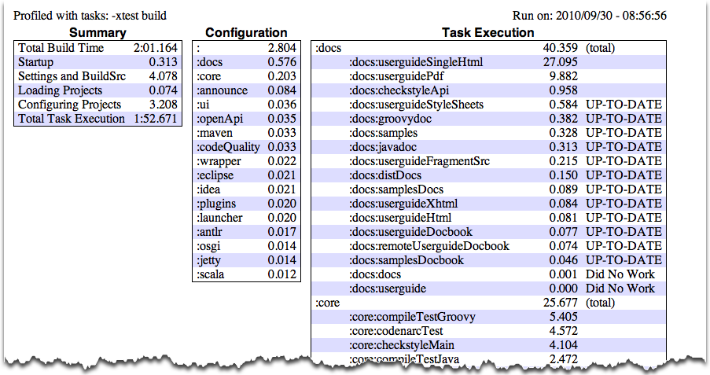

Copyright © 2007-2012 Hans Dockter, Adam Murdoch
Table of Contents
- 1. Introduction
- 2. Overview
- 3. Tutorials
- 4. Installing Gradle
- 5. Troubleshooting
- 6. Build Script Basics
- 6.1. Projects and tasks
- 6.2. Hello world
- 6.3. A shortcut task definition
- 6.4. Build scripts are code
- 6.5. Task dependencies
- 6.6. Dynamic tasks
- 6.7. Manipulating existing tasks
- 6.8. Shortcut notations
- 6.9. Extra task properties
- 6.10. Using Ant Tasks
- 6.11. Using methods
- 6.12. Default tasks
- 6.13. Configure by DAG
- 6.14. Where to next?
- 7. Java Quickstart
- 8. Dependency Management Basics
- 9. Groovy Quickstart
- 10. Web Application Quickstart
- 11. Using the Gradle Command-Line
- 12. Using the Gradle Graphical User Interface
- 13. Writing Build Scripts
- 14. Tutorial - 'This and That'
- 15. More about Tasks
- 16. Working With Files
- 17. Using Ant from Gradle
- 18. Logging
- 19. The Gradle Daemon
- 20. The Build Environment
- 21. Gradle Plugins
- 22. Standard Gradle plugins
- 23. The Java Plugin
- 24. The Groovy Plugin
- 25. The Scala Plugin
- 26. The War Plugin
- 27. The Ear Plugin
- 28. The Jetty Plugin
- 29. The Checkstyle Plugin
- 30. The CodeNarc Plugin
- 31. The FindBugs Plugin
- 32. The JDepend Plugin
- 33. The PMD Plugin
- 34. The Sonar Plugin
- 35. The OSGi Plugin
- 36. The Eclipse Plugin
- 37. The IDEA Plugin
- 38. The ANTLR Plugin
- 39. The Project Report Plugin
- 40. The Announce Plugin
- 41. The Build Announcements Plugin
- 42. The Application Plugin
- 43. The Java Library Distribution Plugin
- 44. Bootstrap Plugin
- 45. Dependency Management
- 45.1. Introduction
- 45.2. Dependency Management Best Practices.
- 45.3. Dependency configurations
- 45.4. How to declare your dependencies
- 45.5. Working with dependencies
- 45.6. Repositories
- 45.7. How dependency resolution works
- 45.8. Manipulating the dependency metadata during the resolution process
- 45.9. The dependency cache
- 45.10. Strategies for transitive dependency management
- 46. Publishing artifacts
- 47. The Maven Plugin
- 48. The Signing Plugin
- 49. C++ Support
- 50. The Build Lifecycle
- 51. Multi-project Builds
- 51.1. Cross project configuration
- 51.2. Subproject configuration
- 51.3. Execution rules for multi-project builds
- 51.4. Running tasks by their absolute path
- 51.5. Project and task paths
- 51.6. Dependencies - Which dependencies?
- 51.7. Project lib dependencies
- 51.8. Decoupled Projects
- 51.9. Multi-Project Building and Testing
- 51.10. Property and method inheritance
- 51.11. Summary
- 52. Writing Custom Task Classes
- 53. Writing Custom Plugins
- 54. Organizing Build Logic
- 55. Initialization Scripts
- 56. The Gradle Wrapper
- 57. Embedding Gradle
- 58. Comparing Builds
- 59. Ivy Publishing (new)
- 60. Maven Publishing (new)
- A. Gradle Samples
- B. Potential Traps
- C. The Feature Lifecycle
- D. Gradle Command Line
- E. Existing IDE Support and how to cope without it
- Glossary
List of Examples
- 6.1. The first build script
- 6.2. Execution of a build script
- 6.3. A task definition shortcut
- 6.4. Using Groovy in Gradle's tasks
- 6.5. Using Groovy in Gradle's tasks
- 6.6. Declaration of dependencies between tasks
- 6.7. Lazy dependsOn - the other task does not exist (yet)
- 6.8. Dynamic creation of a task
- 6.9. Accessing a task via API - adding a dependency
- 6.10. Accessing a task via API - adding behaviour
- 6.11. Accessing task as a property of the build script
- 6.12. Adding extra properties to a task
- 6.13. Using AntBuilder to execute ant.loadfile target
- 6.14. Using methods to organize your build logic
- 6.15. Defining a default tasks
- 6.16. Different outcomes of build depending on chosen tasks
- 7.1. Using the Java plugin
- 7.2. Building a Java project
- 7.3. Adding Maven repository
- 7.4. Adding dependencies
- 7.5. Customization of MANIFEST.MF
- 7.6. Adding a test system property
- 7.7. Publishing the JAR file
- 7.8. Eclipse plugin
- 7.9. Java example - complete build file
- 7.10. Multi-project build - hierarchical layout
- 7.11. Multi-project build - settings.gradle file
- 7.12. Multi-project build - common configuration
- 7.13. Multi-project build - dependencies between projects
- 7.14. Multi-project build - distribution file
- 8.1. Declaring dependencies
- 8.2. Definition of an external dependency
- 8.3. Shortcut definition of an external dependency
- 8.4. Usage of Maven central repository
- 8.5. Usage of a remote Maven repository
- 8.6. Usage of a remote Ivy directory
- 8.7. Usage of a local Ivy directory
- 8.8. Publishing to an Ivy repository
- 8.9. Publishing to a Maven repository
- 9.1. Groovy plugin
- 9.2. Dependency on Groovy 1.7.10
- 9.3. Groovy example - complete build file
- 10.1. War plugin
- 10.2. Running web application with Jetty plugin
- 11.1. Executing multiple tasks
- 11.2. Excluding tasks
- 11.3. Abbreviated task name
- 11.4. Abbreviated camel case task name
- 11.5. Selecting the project using a build file
- 11.6. Selecting the project using project directory
- 11.7. Obtaining information about projects
- 11.8. Providing a description for a project
- 11.9. Obtaining information about tasks
- 11.10. Changing the content of the task report
- 11.11. Obtaining more information about tasks
- 11.12. Obtaining information about dependencies
- 11.13. Filtering dependency report by configuration
- 11.14. Getting the insight into a particular dependency
- 11.15. Information about properties
- 12.1. Launching the GUI
- 13.1. Accessing property of the Project object
- 13.2. Using local variables
- 13.3. Using extra properties
- 13.4. Groovy JDK methods
- 13.5. Property accessors
- 13.6. Method call without parentheses
- 13.7. List and map literals
- 13.8. Closure as method parameter
- 13.9. Closure delegates
- 14.1. Directory creation with mkdir
- 14.2. Setting properties with a gradle.properties file
- 14.3. Configuring the project using an external build script
- 14.4. Configuring arbitrary objects
- 14.5. Configuring arbitrary objects using a script
- 15.1. Defining tasks
- 15.2. Defining tasks - using strings
- 15.3. Defining tasks with alternative syntax
- 15.4. Accessing tasks as properties
- 15.5. Accessing tasks via tasks collection
- 15.6. Accessing tasks by path
- 15.7. Creating a copy task
- 15.8. Configuring a task - various ways
- 15.9. Configuring a task - fluent interface
- 15.10. Configuring a task - with closure
- 15.11. Configuring a task - with configure() method
- 15.12. Defining a task with closure
- 15.13. Adding dependency on task from another project
- 15.14. Adding dependency using task object
- 15.15. Adding dependency using closure
- 15.16. Adding a description to a task
- 15.17. Overwriting a task
- 15.18. Skipping a task using a predicate
- 15.19. Skipping tasks with StopExecutionException
- 15.20. Enabling and disabling tasks
- 15.21. A generator task
- 15.22. Declaring the inputs and outputs of a task
- 15.23. Task rule
- 15.24. Dependency on rule based tasks
- 16.1. Locating files
- 16.2. Creating a file collection
- 16.3. Using a file collection
- 16.4. Implementing a file collection
- 16.5. Creating a file tree
- 16.6. Using a file tree
- 16.7. Using an archive as a file tree
- 16.8. Specifying a set of files
- 16.9. Specifying a set of files
- 16.10. Copying files using the copy task
- 16.11. Specifying copy task source files and destination directory
- 16.12. Selecting the files to copy
- 16.13. Copying files using the copy() method
- 16.14. Renaming files as they are copied
- 16.15. Filtering files as they are copied
- 16.16. Nested copy specs
- 16.17. Using the Sync task to copy dependencies
- 16.18. Creating a ZIP archive
- 16.19. Creation of ZIP archive
- 16.20. Configuration of archive task - custom archive name
- 16.21. Configuration of archive task - appendix & classifier
- 17.1. Using an Ant task
- 17.2. Passing nested text to an Ant task
- 17.3. Passing nested elements to an Ant task
- 17.4. Using an Ant type
- 17.5. Using a custom Ant task
- 17.6. Declaring the classpath for a custom Ant task
- 17.7. Using a custom Ant task and dependency management together
- 17.8. Importing an Ant build
- 17.9. Task that depends on Ant target
- 17.10. Adding behaviour to an Ant target
- 17.11. Ant target that depends on Gradle task
- 17.12. Setting an Ant property
- 17.13. Getting an Ant property
- 17.14. Setting an Ant reference
- 17.15. Getting an Ant reference
- 18.1. Using stdout to write log messages
- 18.2. Writing your own log messages
- 18.3. Using SLF4J to write log messages
- 18.4. Configuring standard output capture
- 18.5. Configuring standard output capture for a task
- 18.6. Customizing what Gradle logs
- 20.1. Configuring an HTTP proxy
- 20.2. Configuring an HTTPS proxy
- 21.1. Applying a plugin
- 21.2. Applying a plugin by type
- 21.3. Applying a plugin by type
- 21.4. Tasks added by a plugin
- 21.5. Changing plugin defaults
- 21.6. Plugin convention object
- 23.1. Using the Java plugin
- 23.2. Custom Java source layout
- 23.3. Accessing a source set
- 23.4. Configuring the source directories of a source set
- 23.5. Defining a source set
- 23.6. Defining source set dependencies
- 23.7. Compiling a source set
- 23.8. Assembling a JAR for a source set
- 23.9. Generating the Javadoc for a source set
- 23.10. Running tests in a source set
- 23.11. Creating a unit test report for subprojects
- 23.12. Customization of MANIFEST.MF
- 23.13. Creating a manifest object.
- 23.14. Separate MANIFEST.MF for a particular archive
- 23.15. Separate MANIFEST.MF for a particular archive
- 24.1. Using the Groovy plugin
- 24.2. Custom Groovy source layout
- 24.3. Configuration of Groovy dependency
- 24.4. Configuration of Groovy test dependency
- 24.5. Configuration of bundled Groovy dependency
- 24.6. Configuration of Groovy configuration
- 24.7. Configuration of Groovy file dependency
- 25.1. Using the Scala plugin
- 25.2. Custom Scala source layout
- 25.3. Declaring a Scala dependency for production code
- 25.4. Declaring a Scala dependency for test code
- 25.5. Enabling the Fast Scala Compiler
- 25.6. Adjusting memory settings
- 25.7. Activating the Zinc based compiler
- 26.1. Using the War plugin
- 26.2. Customization of war plugin
- 27.1. Using the Ear plugin
- 27.2. Customization of ear plugin
- 28.1. Using the Jetty plugin
- 29.1. Using the Checkstyle plugin
- 30.1. Using the CodeNarc plugin
- 31.1. Using the FindBugs plugin
- 32.1. Using the JDepend plugin
- 33.1. Using the PMD plugin
- 34.1. Applying the Sonar plugin
- 34.2. Configuring Sonar connection settings
- 34.3. Configuring Sonar project settings
- 34.4. Global configuration in a multi-project build
- 34.5. Common project configuration in a multi-project build
- 34.6. Individual project configuration in a multi-project build
- 34.7. Configuring the language to be analyzed
- 34.8. Using property syntax
- 34.9. Analyzing custom source sets
- 34.10. Setting custom global properties
- 34.11. Setting custom project properties
- 35.1. Using the OSGi plugin
- 35.2. Configuration of OSGi MANIFEST.MF file
- 36.1. Using the Eclipse plugin
- 36.2. Partial Overwrite for Classpath
- 36.3. Partial Overwrite for Project
- 36.4. Export Dependencies
- 36.5. Customizing the XML
- 37.1. Using the IDEA plugin
- 37.2. Partial Overwrite for Module
- 37.3. Partial Overwrite for Project
- 37.4. Export Dependencies
- 37.5. Customizing the XML
- 38.1. Using the ANTLR plugin
- 38.2. Declare ANTLR version
- 40.1. Using the announce plugin
- 40.2. Configure the announce plugin
- 40.3. Using the announce plugin
- 41.1. Using the build announcements plugin
- 41.2. Using the build announcements plugin from an init script
- 42.1. Using the application plugin
- 42.2. Configure the application main class
- 42.3. Include output from other tasks in the application distribution
- 42.4. Automatically creating files for distribution
- 43.1. Using the java library distribution plugin
- 43.2. Configure the distribution name
- 43.3. Include files in the distribution
- 45.1. Definition of a configuration
- 45.2. Accessing a configuration
- 45.3. Configuration of a configuration
- 45.4. Module dependencies
- 45.5. Artifact only notation
- 45.6. Dependency with classifier
- 45.7. Usage of external dependency of a configuration
- 45.8. Client module dependencies - transitive dependencies
- 45.9. Project dependencies
- 45.10. File dependencies
- 45.11. Generated file dependencies
- 45.12. Gradle API dependencies
- 45.13. Gradle's Groovy dependencies
- 45.14. Excluding transitive dependencies
- 45.15. Optional attributes of dependencies
- 45.16. Collections and arrays of dependencies
- 45.17. Dependency configurations
- 45.18. Dependency configurations for project
- 45.19. Configuration.copy
- 45.20. Accessing declared dependencies
- 45.21. Configuration.files
- 45.22. Configuration.files with spec
- 45.23. Configuration.copy
- 45.24. Configuration.copy vs. Configuration.files
- 45.25. Adding central Maven repository
- 45.26. Adding the local Maven cache as a repository
- 45.27. Adding custom Maven repository
- 45.28. Adding additional Maven repositories for JAR files
- 45.29. Accessing password protected Maven repository
- 45.30. Flat repository resolver
- 45.31. Ivy repository
- 45.32. Ivy repository with pattern layout
- 45.33. Ivy repository with Maven compatible layout
- 45.34. Ivy repository with custom patterns
- 45.35. Ivy repository
- 45.36. Accessing a repository
- 45.37. Configuration of a repository
- 45.38. Definition of a custom repository
- 45.39. Forcing consistent version for a group of libraries
- 45.40. Using a custom versioning scheme
- 45.41. Blacklisting a version with a replacement
- 45.42. Dynamic version cache control
- 45.43. Changing module cache control
- 46.1. Defining an artifact using an archive task
- 46.2. Defining an artifact using a file
- 46.3. Customizing an artifact
- 46.4. Map syntax for defining an artifact using a file
- 46.5. Configuration of the upload task
- 47.1. Using the Maven plugin
- 47.2. Creating a stand alone pom.
- 47.3. Upload of file to remote Maven repository
- 47.4. Upload of file via SSH
- 47.5. Customization of pom
- 47.6. Builder style customization of pom
- 47.7. Modifying auto-generated content
- 47.8. Customization of Maven installer
- 47.9. Generation of multiple poms
- 47.10. Accessing a mapping configuration
- 48.1. Using the Signing plugin
- 48.2. Signing a configuration
- 48.3. Signing a configuration output
- 48.4. Signing a task
- 48.5. Signing a task output
- 48.6. Conditional signing
- 48.7. Signing a POM for deployment
- 49.1. Using the 'cpp-exe' plugin
- 49.2. Using the 'cpp-lib' plugin
- 49.3. Supplying arbitrary args to the compiler
- 49.4. Declaring dependencies
- 49.5. Declaring project dependencies
- 49.6. Uploading exe or lib
- 50.1. Single project build
- 50.2. Hierarchical layout
- 50.3. Flat layout
- 50.4. Modification of elements of the project tree
- 50.5. Modification of elements of the project tree
- 50.6. Adding of test task to each project which has certain property set
- 50.7. Notifications
- 50.8. Setting of certain property to all tasks
- 50.9. Logging of start and end of each task execution
- 51.1. Multi-project tree - water & bluewhale projects
- 51.2. Build script of water (parent) project
- 51.3. Multi-project tree - water, bluewhale & krill projects
- 51.4. Water project build script
- 51.5. Defining common behaviour of all projects and subprojects
- 51.6. Defining specific behaviour for particular project
- 51.7. Defining specific behaviour for project krill
- 51.8. Adding custom behaviour to some projects (filtered by project name)
- 51.9. Adding custom behaviour to some projects (filtered by project properties)
- 51.10. Running build from subproject
- 51.11. Evaluation and execution of projects
- 51.12. Evaluation and execution of projects
- 51.13. Running tasks by their absolute path
- 51.14. Dependencies and execution order
- 51.15. Dependencies and execution order
- 51.16. Dependencies and execution order
- 51.17. Declaring dependencies
- 51.18. Declaring dependencies
- 51.19. Cross project task dependencies
- 51.20. Configuration time dependencies
- 51.21. Configuration time dependencies - evaluationDependsOn
- 51.22. Configuration time dependencies
- 51.23. Dependencies - real life example - crossproject configuration
- 51.24. Project lib dependencies
- 51.25. Project lib dependencies
- 51.26. Fine grained control over dependencies
- 51.27. Build and Test Single Project
- 51.28. Partial Build and Test Single Project
- 51.29. Build and Test Depended On Projects
- 51.30. Build and Test Dependent Projects
- 52.1. Defining a custom task
- 52.2. A hello world task
- 52.3. A customizable hello world task
- 52.4. A build for a custom task
- 52.5. A custom task
- 52.6. Using a custom task in another project
- 52.7. Testing a custom task
- 53.1. A custom plugin
- 53.2. A custom plugin extension
- 53.3. A custom plugin with configuration closure
- 53.4. Evaluating file properties lazily
- 53.5. A build for a custom plugin
- 53.6. Wiring for a custom plugin
- 53.7. Using a custom plugin in another project
- 53.8. Testing a custom plugin
- 53.9. Managing domain objects
- 54.1. Using inherited properties and methods
- 54.2. Using injected properties and methods
- 54.3. Custom buildSrc build script
- 54.4. Adding subprojects to the root buildSrc project
- 54.5. Running another build from a build
- 54.6. Declaring external dependencies for the build script
- 54.7. A build script with external dependencies
- 54.8. Ant optional dependencies
- 55.1. Using init script to perform extra configuration before projects are evaluated
- 55.2. Declaring external dependencies for an init script
- 55.3. An init script with external dependencies
- 56.1. Wrapper task
- 56.2. Wrapper generated files
- 56.3. Configuration of wrapper task
- 59.1. Applying the “ivy-publish” plugin
- 59.2. A build to publish
- 59.3. Example generated ivy.xml
- 59.4. Modifying the Ivy descriptor
- 59.5. Declaring repositories to publish to
- 59.6. Publishing via single publish task
- 59.7. Publishing via “publish” lifecycle task
- 59.8. Generating the Ivy module descriptor file
- 60.1. Applying the 'maven-publish' plugin
- 60.2. Modifying the POM file
- 60.3. Declaring repositories to publish to
- 60.4. A build to publish
- 60.5. Publish a project to the Maven local repository
- B.1. Variables scope: local and script wide
- B.2. Distinct configuration and execution phase
We would like to introduce Gradle to you, a build system that we think is a quantum leap for build technology in the Java (JVM) world. Gradle provides:
A very flexible general purpose build tool like Ant.
Switchable, build-by-convention frameworks a la Maven. But we never lock you in!
Very powerful support for multi-project builds.
Very powerful dependency management (based on Apache Ivy).
Full support for your existing Maven or Ivy repository infrastructure.
Support for transitive dependency management without the need for remote repositories or
pom.xmlandivy.xmlfiles.Ant tasks and builds as first class citizens.
Groovy build scripts.
A rich domain model for describing your build.
In Chapter 2, Overview you will find a detailed overview of Gradle. Otherwise, the tutorials are waiting, have fun :)
This user guide, like Gradle itself, is under very active development. Some parts of Gradle aren't documented as completely as they need to be. Some of the content presented won't be entirely clear or will assume that you know more about Gradle than you do. We need your help to improve this user guide. You can find out more about contributing to the documentation at the Gradle web site.
Here is a list of some of Gradle's features.
- Declarative builds and build-by-convention
At the heart of Gradle lies a rich extensible Domain Specific Language (DSL) based on Groovy. Gradle pushes declarative builds to the next level by providing declarative language elements that you can assemble as you like. Those elements also provide build-by-convention support for Java, Groovy, OSGi, Web and Scala projects. Even more, this declarative language is extensible. Add your own new language elements or enhance the existing ones. Thus providing concise, maintainable and comprehensible builds.
- Language for dependency based programming
The declarative language lies on top of a general purpose task graph, which you can fully leverage in your builds. It provides utmost flexibility to adapt Gradle to your unique needs.
- Structure your build
The suppleness and richness of Gradle finally allows you to apply common design principles to your build. For example, it is very easy to compose your build from reusable pieces of build logic. Inline stuff where unnecessary indirections would be inappropriate. Don't be forced to tear apart what belongs together (e.g. in your project hierarchy). Thus avoiding smells like shotgun changes or divergent change that turn your build into a maintenance nightmare. At last you can create a well structured, easily maintained, comprehensible build.
- Deep API
From being a pleasure to be used embedded to its many hooks over the whole lifecycle of build execution, Gradle allows you to monitor and customize its configuration and execution behavior to its very core.
- Gradle scales
Gradle scales very well. It significantly increases your productivity, from simple single project builds up to huge enterprise multi-project builds. This is true for structuring the build. With the state-of-art incremental build function, this is also true for tackling the performance pain many large enterprise builds suffer from.
- Multi-project builds
Gradle's support for multi-project build is outstanding. Project dependencies are first class citizens. We allow you to model the project relationships in a multi-project build as they really are for your problem domain. Gradle follows your layout not vice versa.
Gradle provides partial builds. If you build a single subproject Gradle takes care of building all the subprojects that subproject depends on. You can also choose to rebuild the subprojects that depend on a particular subproject. Together with incremental builds this is a big time saver for larger builds.
- Many ways to manage your dependencies
Different teams prefer different ways to manage their external dependencies. Gradle provides convenient support for any strategy. From transitive dependency management with remote maven and ivy repositories to jars or dirs on the local file system.
- Gradle is the first build integration tool
Ant tasks are first class citizens. Even more interesting, Ant projects are first class citizens as well. Gradle provides a deep import for any Ant project, turning Ant targets into native Gradle tasks at runtime. You can depend on them from Gradle, you can enhance them from Gradle, you can even declare dependencies on Gradle tasks in your build.xml. The same integration is provided for properties, paths, etc ...
Gradle fully supports your existing Maven or Ivy repository infrastructure for publishing and retrieving dependencies. Gradle also provides a converter for turning a Maven pom.xml into a Gradle script. Runtime imports of Maven projects will come soon.
- Ease of migration
Gradle can adapt to any structure you have. Therefore you can always develop your Gradle build in the same branch where your production build lives and both can evolve in parallel. We usually recommend to write tests that make sure that the produced artifacts are similar. That way migration is as less disruptive and as reliable as possible. This is following the best-practices for refactoring by applying baby steps.
- Groovy
Gradle's build scripts are written in Groovy, not XML. But unlike other approaches this is not for simply exposing the raw scripting power of a dynamic language. That would just lead to a very difficult to maintain build. The whole design of Gradle is oriented towards being used as a language, not as a rigid framework. And Groovy is our glue that allows you to tell your individual story with the abstractions Gradle (or you) provide. Gradle provides some standard stories but they are not privileged in any form. This is for us a major distinguishing features compared to other declarative build systems. Our Groovy support is also not just some simple coating sugar layer. The whole Gradle API is fully groovynized. Only by that using Groovy is the fun and productivity gain it can be.
- The Gradle wrapper
The Gradle Wrapper allows you to execute Gradle builds on machines where Gradle is not installed. This is useful for example for some continuous integration servers. It is also useful for an open source project to keep the barrier low for building it. The wrapper is also very interesting for the enterprise. It is a zero administration approach for the client machines. It also enforces the usage of a particular Gradle version thus minimizing support issues.
- Free and open source
Gradle is an open source project, and is licensed under the ASL.
We think the advantages of an internal DSL (based on a dynamic language) over XML are tremendous in case of build scripts. There are a couple of dynamic languages out there. Why Groovy? The answer lies in the context Gradle is operating in. Although Gradle is a general purpose build tool at its core, its main focus are Java projects. In such projects obviously the team members know Java. We think a build should be as transparent as possible to all team members.
You might argue why not using Java then as the language for build scripts. We think this is a valid question. It would have the highest transparency for your team and the lowest learning curve. But due to limitations of Java such a build language would not be as nice, expressive and powerful as it could be. [1] Languages like Python, Groovy or Ruby do a much better job here. We have chosen Groovy as it offers by far the greatest transparency for Java people. Its base syntax is the same as Java's as well as its type system, its package structure and other things. Groovy builds a lot on top of that. But on a common ground with Java.
For Java teams which share also Python or Ruby knowledge or are happy to learn it, the above arguments don't apply. The Gradle design is well-suited for creating another build script engine in JRuby or Jython. It just doesn't have the highest priority for us at the moment. We happily support any community effort to create additional build script engines.
[1] At http://www.defmacro.org/ramblings/lisp.html you find an interesting article comparing Ant, XML, Java and Lisp. It's funny that the 'if Java had that syntax' syntax in this article is actually the Groovy syntax.
The following tutorials introduce some of the basics of Gradle, to help you get started.
- Chapter 4, Installing Gradle
Describes how to install Gradle.
- Chapter 6, Build Script Basics
Introduces the basic build script elements: projects and tasks.
- Chapter 7, Java Quickstart
Shows how to start using Gradle's build-by-convention support for Java projects.
- Chapter 8, Dependency Management Basics
Shows how to start using Gradle's dependency management.
- Chapter 9, Groovy Quickstart
Using Gradle's build-by-convention support for Groovy projects.
- Chapter 10, Web Application Quickstart
Using Gradle's build-by-convention support for Web applications.
Gradle requires a Java JDK to be installed. Gradle requires a JDK 1.5 or higher. Gradle ships with its own Groovy library, therefore no Groovy needs to be installed. Any existing Groovy installation is ignored by Gradle.
Gradle uses whichever JDK it finds in your path (to check, use java -version).
Alternatively, you can set the JAVA_HOME environment variable to point to the install directory
of the desired JDK.
You can download one of the Gradle distributions from the Gradle web site.
The Gradle distribution comes packaged as a ZIP. The full distribution contains:
The Gradle binaries.
The user guide (HTML and PDF).
The DSL reference guide.
The API documentation (Javadoc and Groovydoc).
Extensive samples, including the examples referenced in the user guide, along with some complete and more complex builds you can use the starting point for your own build.
The binary sources. This is for reference only. If you want to build Gradle you need to download the source distribution or checkout the sources from the source repository. See the Gradle web site for details.
For Un*x users
You need a GNU compatible tool to unzip Gradle, if you want the file permissions to be properly set. We mention this as some zip front ends for Mac OS X don't restore the file permissions properly.
For running Gradle, add GRADLE_HOME/binPATH
environment variable. Usually, this is sufficient to run Gradle.
You run Gradle via the gradle command. To check if Gradle is properly installed just type gradle -v. The output shows Gradle version and also local environment configuration (groovy and jvm version, etc.). The displayed gradle version should match the distribution you have downloaded.
JVM options for running Gradle can be set via environment variables. You can use GRADLE_OPTS
or JAVA_OPTS. Those variables can be used together. JAVA_OPTS is by convention an environment
variable shared by many Java applications. A typical use case would be to set the HTTP proxy in JAVA_OPTS
and the memory options in GRADLE_OPTS. Those variables can also be set at the beginning
of the gradle or gradlew script.
This chapter is currently a work in progress.
When using Gradle (or any software package), you can run into problems. You may not understand how to use a particular feature, or you may encounter a defect. Or, you may have a general question about Gradle.
This chapter gives some advice for troubleshooting problems and explains how to get help with your problems.
If you are encountering problems, one of the first things to try is using the very latest release of Gradle. New versions of Gradle are released frequently with bug fixes and new features. The problem you are having may have been fixed in a new release.
If you are using the Gradle Daemon, try temporarily disabling the daemon (you can pass the command line switch --no-daemon).
More information about troubleshooting daemon is located in Chapter 19, The Gradle Daemon.
The place to go for help with Gradle is http://forums.gradle.org. The Gradle Forums is the place where you can report problems and ask questions to the Gradle developers and other community members.
If something's not working for you, posting a question or problem report to the forums is the fastest way to get help. It's also the place to post improvement suggestions or new ideas. The development team frequently posts news items and announces releases via the forum, making it a great way to stay up to date with the latest Gradle developments.
Everything in Gradle sits on top of two basic concepts: projects and tasks.
Every Gradle build is made up of one or more projects. A project represents some component of your software which can be built. What this means exactly depends on what it is that you are building. For example, a project might represent a library JAR or a web application. It might represent a distribution ZIP assembled from the JARs produced by other projects. A project does not necessarily represent a thing to be built. It might represent a thing to be done, such as deploying your application to staging or production environments. Don't worry if this seems a little vague for now. Gradle's build-by-convention support adds a more concrete definition for what a project is.
Each project is made up of one or more tasks. A task represents some atomic piece of work which a build performs. This might be compiling some classes, creating a JAR, generating javadoc, or publishing some archives to a repository.
For now, we will look at defining some simple tasks in a build with one project. Later chapters will look at working with multiple projects and more about working with projects and tasks.
You run a Gradle build using the gradle command. The gradle command
looks for a file called build.gradle in the current directory.
[2]
We call this build.gradle file a build script, although strictly speaking it is
a build configuration script, as we will see later. The build script defines a project and its tasks.
To try this out, create the following build script named build.gradle.
In a command-line shell, enter into the containing directory and execute the build script by running
gradle -q hello:
What does -q do?
Most of the examples in this user guide are run with the -q command-line option.
This suppresses Gradle's log messages, so that only the output of the tasks is shown. This keeps the example
output in this user guide a little clearer. You don't need to use this option if you don't want.
See Chapter 18, Logging for more details about the command-line options which affect Gradle's output.
What's going on here? This build script defines a single task, called hello, and
adds an action to it. When you run gradle hello, Gradle executes the
hello task, which in turn executes the action you've provided. The action is simply a
closure containing some Groovy code to execute.
If you think this looks similar to Ant's targets, well, you are right. Gradle tasks are the equivalent to
Ant targets. But as you will see, they are much more powerful. We have used a different terminology than Ant
as we think the word task is more expressive than the word target.
Unfortunately this introduces a terminology clash with Ant, as Ant calls its commands, such as
javac or copy, tasks. So when we talk about tasks,
we always mean Gradle tasks, which are the equivalent to Ant's targets. If we talk
about Ant tasks (Ant commands), we explicitly say ant task.
There is a shorthand way to define a task like our hello task above, which is more
concise.
Again, this defines a task called hello with a single closure to execute.
We will use this task definition style throughout the user guide.
Gradle's build scripts expose to you the full power of Groovy. As an appetizer, have a look at this:
Example 6.4. Using Groovy in Gradle's tasks
build.gradle
task upper << {
String someString = 'mY_nAmE'
println "Original: " + someString
println "Upper case: " + someString.toUpperCase()
}Output of gradle -q upper
> gradle -q upper Original: mY_nAmE Upper case: MY_NAME
or
Example 6.5. Using Groovy in Gradle's tasks
build.gradle
task count << {
4.times { print "$it " }
}Output of gradle -q count
> gradle -q count 0 1 2 3
As you probably have guessed, you can declare dependencies between your tasks.
Example 6.6. Declaration of dependencies between tasks
build.gradle
task hello << {
println 'Hello world!'
}
task intro(dependsOn: hello) << {
println "I'm Gradle"
}Output of gradle -q intro
> gradle -q intro Hello world! I'm Gradle
To add a dependency, the corresponding task does not need to exist.
Example 6.7. Lazy dependsOn - the other task does not exist (yet)
build.gradle
task taskX(dependsOn: 'taskY') << { println 'taskX' } task taskY << { println 'taskY' }
Output of gradle -q taskX
> gradle -q taskX taskY taskX
The dependency of taskX to taskY is declared before
taskY is defined. This is very important for multi-project builds. Task dependencies are
discussed in more detail in Section 15.4, “Adding dependencies to a task”.
Please notice, that you can't use a shortcut notation (see Section 6.8, “Shortcut notations”) when referring to task, which is not defined yet.
The power of Groovy can be used for more than defining what a task does. For example, you can also use it to dynamically create tasks.
Example 6.8. Dynamic creation of a task
build.gradle
4.times { counter ->
task "task$counter" << {
println "I'm task number $counter"
}
}Output of gradle -q task1
> gradle -q task1 I'm task number 1
Once tasks are created they can be accessed via an API. This is different to Ant. For example you can create additional dependencies.
Example 6.9. Accessing a task via API - adding a dependency
build.gradle
4.times { counter ->
task "task$counter" << {
println "I'm task number $counter"
}
}
task0.dependsOn task2, task3Output of gradle -q task0
> gradle -q task0 I'm task number 2 I'm task number 3 I'm task number 0
Or you can add behavior to an existing task.
Example 6.10. Accessing a task via API - adding behaviour
build.gradle
task hello << {
println 'Hello Earth'
}
hello.doFirst {
println 'Hello Venus'
}
hello.doLast {
println 'Hello Mars'
}
hello << {
println 'Hello Jupiter'
}Output of gradle -q hello
> gradle -q hello Hello Venus Hello Earth Hello Mars Hello Jupiter
The calls doFirst and doLast can be executed multiple times.
They add an action to the beginning or the end of the task's actions list. When the task executes, the
actions in the action list are executed in order. The << operator is simply an
alias for doLast.
As you might have noticed in the previous examples, there is a convenient notation for accessing an existing task. Each task is available as a property of the build script:
Example 6.11. Accessing task as a property of the build script
build.gradle
task hello << {
println 'Hello world!'
}
hello.doLast {
println "Greetings from the $hello.name task."
}Output of gradle -q hello
> gradle -q hello Hello world! Greetings from the hello task.
This enables very readable code, especially when using the out of the box tasks provided by the plugins
(e.g. compile).
You can add your own properties to a task. To add a property named myProperty,
set ext.myProperty to an initial value. From that point on, the property can be read
and set like a predefined task property.
Example 6.12. Adding extra properties to a task
build.gradle
task myTask {
ext.myProperty = "myValue"
}
task printTaskProperties << {
println myTask.myProperty
}Output of gradle -q printTaskProperties
> gradle -q printTaskProperties myValue
Extra properties aren't limited to tasks. You can read more about them in Section 13.4.2, “Extra properties”.
Ant tasks are first-class citizens in Gradle. Gradle provides excellent integration for Ant tasks simply
by relying on Groovy. Groovy is shipped with the fantastic AntBuilder. Using Ant tasks
from Gradle is as convenient and more powerful than using Ant tasks from a build.xml
file. From below example you can learn how to execute ant tasks and how to access ant properties:
Example 6.13. Using AntBuilder to execute ant.loadfile target
build.gradle
task loadfile << {
def files = file('../antLoadfileResources').listFiles().sort()
files.each { File file ->
if (file.isFile()) {
ant.loadfile(srcFile: file, property: file.name)
println " *** $file.name ***"
println "${ant.properties[file.name]}"
}
}
}Output of gradle -q loadfile
> gradle -q loadfile *** agile.manifesto.txt *** Individuals and interactions over processes and tools Working software over comprehensive documentation Customer collaboration over contract negotiation Responding to change over following a plan *** gradle.manifesto.txt *** Make the impossible possible, make the possible easy and make the easy elegant. (inspired by Moshe Feldenkrais)
There is lots more you can do with Ant in your build scripts. You can find out more in Chapter 17, Using Ant from Gradle.
Gradle scales in how you can organize your build logic. The first level of organizing your build logic for the example above, is extracting a method.
Example 6.14. Using methods to organize your build logic
build.gradle
task checksum << {
fileList('../antLoadfileResources').each {File file ->
ant.checksum(file: file, property: "cs_$file.name")
println "$file.name Checksum: ${ant.properties["cs_$file.name"]}"
}
}
task loadfile << {
fileList('../antLoadfileResources').each {File file ->
ant.loadfile(srcFile: file, property: file.name)
println "I'm fond of $file.name"
}
}
File[] fileList(String dir) {
file(dir).listFiles({file -> file.isFile() } as FileFilter).sort()
}Output of gradle -q loadfile
> gradle -q loadfile I'm fond of agile.manifesto.txt I'm fond of gradle.manifesto.txt
Later you will see that such methods can be shared among subprojects in multi-project builds. If your build logic becomes more complex, Gradle offers you other very convenient ways to organize it. We have devoted a whole chapter to this. See Chapter 54, Organizing Build Logic.
Gradle allows you to define one or more default tasks for your build.
Example 6.15. Defining a default tasks
build.gradle
defaultTasks 'clean', 'run' task clean << { println 'Default Cleaning!' } task run << { println 'Default Running!' } task other << { println "I'm not a default task!" }
Output of gradle -q
> gradle -q Default Cleaning! Default Running!
This is equivalent to running gradle clean run. In a multi-project build every
subproject can have its own specific default tasks. If a subproject does not specify default tasks, the
default tasks of the parent project are used (if defined).
As we describe in full detail later (See Chapter 50, The Build Lifecycle) Gradle has a configuration phase and an execution phase. After the configuration phase Gradle knows all tasks that should be executed. Gradle offers you a hook to make use of this information. A use-case for this would be to check if the release task is part of the tasks to be executed. Depending on this you can assign different values to some variables.
In the following example, execution of distribution and release tasks results in different value of version variable.
Example 6.16. Different outcomes of build depending on chosen tasks
build.gradle
task distribution << {
println "We build the zip with version=$version"
}
task release(dependsOn: 'distribution') << {
println 'We release now'
}
gradle.taskGraph.whenReady {taskGraph ->
if (taskGraph.hasTask(release)) {
version = '1.0'
} else {
version = '1.0-SNAPSHOT'
}
}Output of gradle -q distribution
> gradle -q distribution We build the zip with version=1.0-SNAPSHOT
Output of gradle -q release
> gradle -q release We build the zip with version=1.0 We release now
The important thing is, that the fact that the release task has been chosen, has an effect before the release task gets executed. Nor has the release task to be the primary task (i.e. the task passed to the gradle command).
In this chapter, we have had a first look at tasks. But this is not the end of the story for tasks. If you want to jump into more of the details, have a look at Chapter 15, More about Tasks.
Otherwise, continue on to the tutorials in Chapter 7, Java Quickstart and Chapter 8, Dependency Management Basics.
As we have seen, Gradle is a general-purpose build tool. It can build pretty much anything you care to implement in your build script. Out-of-the-box, however, it doesn't build anything unless you add code to your build script to do so.
Most Java projects are pretty similar as far as the basics go: you need to compile your Java source files, run some unit tests, and create a JAR file containing your classes. It would be nice if you didn't have to code all this up for every project. Luckily, you don't have to. Gradle solves this problem through the use of plugins. A plugin is an extension to Gradle which configures your project in some way, typically by adding some pre-configured tasks which together do something useful. Gradle ships with a number of plugins, and you can easily write your own and share them with others. One such plugin is the Java plugin. This plugin adds some tasks to your project which will compile and unit test your Java source code, and bundle it into a JAR file.
The Java plugin is convention based. This means that the plugin defines default values for many aspects of the project, such as where the Java source files are located. If you follow the convention in your project, you generally don't need to do much in your build script to get a useful build. Gradle allows you to customize your project if you don't want to or cannot follow the convention in some way. In fact, because support for Java projects is implemented as a plugin, you don't have to use the plugin at all to build a Java project, if you don't want to.
We have in-depth coverage with many examples about the Java plugin, dependency management and multi-project builds in later chapters. In this chapter we want to give you an initial idea of how to use the Java plugin to build a Java project.
Let's look at a simple example. To use the Java plugin, add the following to your build file:
Example 7.1. Using the Java plugin
build.gradle
apply plugin: 'java'Note: The code for this example can be found at samples/java/quickstart which is in both the binary and source distributions of Gradle.
This is all you need to define a Java project. This will apply the Java plugin to your project, which adds a number of tasks to your project.
What tasks are available?
You can use gradle tasks to list the tasks of a project. This will let you see
the tasks that the Java plugin has added to your project.
Gradle expects to find your production source code under src/main/java and your test
source code under src/test/java. In addition, any files under
src/main/resources will be included in the JAR file as resources, and any files under
src/test/resources will be included in the classpath used to run the tests. All output
files are created under the build directory, with the JAR file ending up in the
build/libs directory.
The Java plugin adds quite a few tasks to your project. However, there are only a handful of tasks
that you will need to use to build the project. The most commonly used task is the build task,
which does a full build of the project. When you run gradle build, Gradle will
compile and test your code, and create a JAR file containing your main classes and resources:
Example 7.2. Building a Java project
Output of gradle build
> gradle build :compileJava :processResources :classes :jar :assemble :compileTestJava :processTestResources :testClasses :test :check :build BUILD SUCCESSFUL Total time: 1 secs
Some other useful tasks are:
- clean
Deletes the
builddirectory, removing all built files.- assemble
Compiles and jars your code, but does not run the unit tests. Other plugins add more artifacts to this task. For example, if you use the War plugin, this task will also build the WAR file for your project.
- check
Compiles and tests your code. Other plugins add more checks to this task. For example, if you use the Code-quality plugin, this task will also run Checkstyle against your source code.
Usually, a Java project will have some dependencies on external JAR files. To reference these JAR files in the project, you need to tell Gradle where to find them. In Gradle, artifacts such as JAR files, are located in a repository. A repository can be used for fetching the dependencies of a project, or for publishing the artifacts of a project, or both. For this example, we will use the public Maven repository:
Let's add some dependencies. Here, we will declare that our production classes have a compile-time dependency on commons collections, and that our test classes have a compile-time dependency on junit:
Example 7.4. Adding dependencies
build.gradle
dependencies {
compile group: 'commons-collections', name: 'commons-collections', version: '3.2'
testCompile group: 'junit', name: 'junit', version: '4.+'
}You can find out more in Chapter 8, Dependency Management Basics.
The Java plugin adds a number of properties to your project. These properties have default values which are usually sufficient to get started. It's easy to change these values if they don't suit. Let's look at this for our sample. Here we will specify the version number for our Java project, along with the Java version our source is written in. We also add some attributes to the JAR manifest.
Example 7.5. Customization of MANIFEST.MF
build.gradle
sourceCompatibility = 1.5 version = '1.0' jar { manifest { attributes 'Implementation-Title': 'Gradle Quickstart', 'Implementation-Version': version } }
What properties are available?
You can use gradle properties to list the properties of a project. This will allow
you to see the properties added by the Java plugin, and their default values.
The tasks which the Java plugin adds are regular tasks, exactly the same as if they were declared in
the build file. This means you can use any of the mechanisms shown in earlier chapters to customise
these tasks. For example, you can set the properties of a task, add behaviour to a task, change the
dependencies of a task, or replace a task entirely. In our sample, we will configure the
test task, which is of type Test, to
add a system property when the tests are executed:
Usually the JAR file needs to be published somewhere. To do this, you need to tell Gradle where to publish the JAR file. In Gradle, artifacts such as JAR files are published to repositories. In our sample, we will publish to a local directory. You can also publish to a remote location, or multiple locations.
Example 7.7. Publishing the JAR file
build.gradle
uploadArchives {
repositories {
flatDir {
dirs 'repos'
}
}
}To publish the JAR file, run gradle uploadArchives.
To import your project into Eclipse, you need to add another plugin to your build file:
Now execute gradle eclipse command to generate Eclipse project files. More on Eclipse
task can be found in Chapter 36, The Eclipse Plugin.
Here's the complete build file for our sample:
Example 7.9. Java example - complete build file
build.gradle
apply plugin: 'java' apply plugin: 'eclipse' sourceCompatibility = 1.5 version = '1.0' jar { manifest { attributes 'Implementation-Title': 'Gradle Quickstart', 'Implementation-Version': version } } repositories { mavenCentral() } dependencies { compile group: 'commons-collections', name: 'commons-collections', version: '3.2' testCompile group: 'junit', name: 'junit', version: '4.+' } test { systemProperties 'property': 'value' } uploadArchives { repositories { flatDir { dirs 'repos' } } }
Now let's look at a typical multi-project build. Below is the layout for the project:
Example 7.10. Multi-project build - hierarchical layout
Build layout
multiproject/ api/ services/webservice/ shared/
Note: The code for this example can be found at samples/java/multiproject which is in both the binary and source distributions of Gradle.
Here we have three projects. Project api produces a JAR file which is shipped to the
client to provide them a Java client for your XML webservice. Project webservice is a
webapp which returns XML. Project shared contains code used both by api
and webservice.
To define a multi-project build, you need to create a settings file. The settings
file lives in the root directory of the source tree, and specifies which projects to include in the
build. It must be called settings.gradle. For this example, we are using a simple
hierarchical layout. Here is the corresponding settings file:
Example 7.11. Multi-project build - settings.gradle file
settings.gradle
include "shared", "api", "services:webservice", "services:shared"
You can find out more about the settings file in Chapter 51, Multi-project Builds.
For most multi-project builds, there is some configuration which is common to all projects.
In our sample, we will define this common configuration in the root project, using a technique called
configuration injection. Here, the root project is like a container and the
subprojects method iterates over the elements of this container - the projects in
this instance - and injects the specified configuration. This way we can easily define the manifest
content for all archives, and some common dependencies:
Example 7.12. Multi-project build - common configuration
build.gradle
subprojects {
apply plugin: 'java'
apply plugin: 'eclipse-wtp'
repositories {
mavenCentral()
}
dependencies {
testCompile 'junit:junit:4.11'
}
version = '1.0'
jar {
manifest.attributes provider: 'gradle'
}
}Notice that our sample applies the Java plugin to each subproject. This means the tasks and
configuration properties we have seen in the previous section are available in each subproject.
So, you can compile, test, and JAR all the projects by running gradle build from
the root project directory.
You can add dependencies between projects in the same build, so that, for example, the JAR file of one
project is used to compile another project. In the api build file we will add a dependency
on the JAR produced by the shared project. Due to this dependency, Gradle will
ensure that project shared always gets built before project api.
Example 7.13. Multi-project build - dependencies between projects
api/build.gradle
dependencies {
compile project(':shared')
}See Section 51.7.1, “Disabling the build of dependency projects” for how to disable this functionality.
In this chapter, you have seen how to do some of the things you commonly need to build a Java based
project. This chapter is not exhaustive, and there are many other things you can do with Java projects in
Gradle.
You can find out more about the Java plugin in Chapter 23, The Java Plugin, and you can find more sample
Java projects in the samples/java directory in the Gradle distribution.
Otherwise, continue on to Chapter 8, Dependency Management Basics.
This chapter introduces some of the basics of dependency management in Gradle.
Very roughly, dependency management is made up of two pieces. Firstly, Gradle needs to know about the things that your project needs to build or run, in order to find them. We call these incoming files the dependencies of the project. Secondly, Gradle needs to build and upload the things that your project produces. We call these outgoing files the publications of the project. Let's look at these two pieces in more detail:
Most projects are not completely self-contained. They need files built by other projects in order to be compiled or tested and so on. For example, in order to use Hibernate in my project, I need to include some Hibernate jars in the classpath when I compile my source. To run my tests, I might also need to include some additional jars in the test classpath, such as a particular JDBC driver or the Ehcache jars.
These incoming files form the dependencies of the project. Gradle allows you to tell it what the dependencies of your project are, so that it can take care of finding these dependencies, and making them available in your build. The dependencies might need to be downloaded from a remote Maven or Ivy repository, or located in a local directory, or may need to be built by another project in the same multi-project build. We call this process dependency resolution.
Often, the dependencies of a project will themselves have dependencies. For example, Hibernate core requires several other libraries to be present on the classpath with it runs. So, when Gradle runs the tests for your project, it also needs to find these dependencies and make them available. We call these transitive dependencies.
The main purpose of most projects is to build some files that are to be used outside the project. For example, if your project produces a java library, you need to build a jar, and maybe a source jar and some documentation, and publish them somewhere.
These outgoing files form the publications of the project. Gradle also takes care of this important work for you. You declare the publications of your project, and Gradle take care of building them and publishing them somewhere. Exactly what "publishing" means depends on what you want to do. You might want to copy the files to a local directory, or upload them to a remote Maven or Ivy repository. Or you might use the files in another project in the same multi-project build. We call this process publication.
Let's look at some dependency declarations. Here's a basic build script:
Example 8.1. Declaring dependencies
build.gradle
apply plugin: 'java' repositories { mavenCentral() } dependencies { compile group: 'org.hibernate', name: 'hibernate-core', version: '3.6.7.Final' testCompile group: 'junit', name: 'junit', version: '4.+' }
What's going on here? This build script says a few things about the project. Firstly, it states that Hibernate core 3.6.7.Final is required to compile the project's production source. By implication, Hibernate core and its dependencies are also required at runtime. The build script also states that any junit >= 4.0 is required to compile the project's tests. It also tells Gradle to look in the Maven central repository for any dependencies that are required. The following sections go into the details.
In Gradle dependencies are grouped into configurations. A configuration is simply a named set of dependencies. We will refer to them as dependency configurations. You can use them to declare the external dependencies of your project. As we will see later, they are also used to declare the publications of your project.
The Java plugin defines a number of standard configurations. These configurations represent the classpaths that the Java plugin uses. Some are listed below, and you can find more details in Table 23.5, “Java plugin - dependency configurations”.
- compile
The dependencies required to compile the production source of the project.
- runtime
The dependencies required by the production classes at runtime. By default, also includes the compile time dependencies.
- testCompile
The dependencies required to compile the test source of the project. By default, also includes the compiled production classes and the compile time dependencies.
- testRuntime
The dependencies required to run the tests. By default, also includes the compile, runtime and test compile dependencies.
Various plugins add further standard configurations. You can also define your own custom configurations to use in your build. Please see Section 45.3, “Dependency configurations” for the details of defining and customizing dependency configurations.
There are various types of dependencies that you can declare. One such type is an external dependency. This a dependency on some files built outside the current build, and stored in a repository of some kind, such as Maven central, or a corporate Maven or Ivy repository, or a directory in the local file system.
To define an external dependency, you add it to a dependency configuration:
Example 8.2. Definition of an external dependency
build.gradle
dependencies {
compile group: 'org.hibernate', name: 'hibernate-core', version: '3.6.7.Final'
}
An external dependency is identified using group, name and version attributes.
Depending on which kind of repository you are using, group and version may be optional.
There is a shortcut form for declaring external dependencies, which uses a string of the form ".
group:name:version"
Example 8.3. Shortcut definition of an external dependency
build.gradle
dependencies {
compile 'org.hibernate:hibernate-core:3.6.7.Final'
}To find out more about defining and working with dependencies, have a look at Section 45.4, “How to declare your dependencies”.
How does Gradle find the files for external dependencies? Gradle looks for them in a repository.
A repository is really just a collection of files, organized by group, name and
version. Gradle understands several different repository formats, such as Maven and Ivy, and several
different ways of accessing the repository, such as using the local file system or HTTP.
By default, Gradle does not define any repositories. You need to define at least one before you can use external dependencies. One option is use the Maven central repository:
Or a remote Maven repository:
Example 8.5. Usage of a remote Maven repository
build.gradle
repositories {
maven {
url "http://repo.mycompany.com/maven2"
}
}Or a remote Ivy repository:
Example 8.6. Usage of a remote Ivy directory
build.gradle
repositories {
ivy {
url "http://repo.mycompany.com/repo"
}
}You can also have repositories on the local file system. This works for both Maven and Ivy repositories.
Example 8.7. Usage of a local Ivy directory
build.gradle
repositories {
ivy {
// URL can refer to a local directory
url "../local-repo"
}
}A project can have multiple repositories. Gradle will look for a dependency in each repository in the order they are specified, stopping at the first repository that contains the requested module.
To find out more about defining and working with repositories, have a look at Section 45.6, “Repositories”.
Dependency configurations are also used to publish files.[3] We call these files publication artifacts, or usually just artifacts.
The plugins do a pretty good job of defining the artifacts of a project, so you usually don't need to do anything special to tell Gradle
what needs to be published. However, you do need to tell Gradle where to publish the artifacts. You do this by attaching repositories
to the uploadArchives task. Here's an example of publishing to a remote Ivy repository:
Example 8.8. Publishing to an Ivy repository
build.gradle
uploadArchives {
repositories {
ivy {
credentials {
username "username"
password "pw"
}
url "http://repo.mycompany.com"
}
}
}
Now, when you run gradle uploadArchives, Gradle will build and upload your Jar.
Gradle will also generate and upload an ivy.xml as well.
You can also publish to Maven repositories. The syntax is slightly different.[4]
Note that you also need to apply the Maven plugin in order to publish to a Maven repository. In this instance, Gradle
will generate and upload a pom.xml.
Example 8.9. Publishing to a Maven repository
build.gradle
apply plugin: 'maven' uploadArchives { repositories { mavenDeployer { repository(url: "file://localhost/tmp/myRepo/") } } }
To find out more about publication, have a look at Chapter 46, Publishing artifacts.
For all the details of dependency resolution, see Chapter 45, Dependency Management, and for artifact publication see Chapter 46, Publishing artifacts.
If you are interested in the DSL elements mentioned here, have a look at Project.configurations{},
Project.repositories{} and Project.dependencies{}.
Otherwise, continue on to some of the other tutorials.
To build a Groovy project, you use the Groovy plugin. This plugin extends the Java plugin to add Groovy compilation capabilities to your project. Your project can contain Groovy source code, Java source code, or a mix of the two. In every other respect, a Groovy project is identical to a Java project, which we have already seen in Chapter 7, Java Quickstart.
Let's look at an example. To use the Groovy plugin, add the following to your build file:
Example 9.1. Groovy plugin
build.gradle
apply plugin: 'groovy'Note: The code for this example can be found at samples/groovy/quickstart which is in both the binary and source distributions of Gradle.
This will also apply the Java plugin to the project, if it has not already been applied. The Groovy plugin
extends the compile task to look for source files in directory
src/main/groovy, and the compileTest task to look for test source
files in directory src/test/groovy. The compile tasks use joint compilation for these
directories, which means they can contain a mixture of java and groovy source files.
To use the groovy compilation tasks, you must also declare the Groovy version to use and where to find the
Groovy libraries. You do this by adding a dependency to the groovy configuration.
The compile configuration inherits this dependency, so the groovy libraries will
be included in classpath when compiling Groovy and Java source. For our sample, we will use Groovy 1.7.10
from the public Maven repository:
Example 9.2. Dependency on Groovy 1.7.10
build.gradle
repositories {
mavenCentral()
}
dependencies {
compile 'org.codehaus.groovy:groovy-all:2.0.5'
}Here is our complete build file:
Example 9.3. Groovy example - complete build file
build.gradle
apply plugin: 'eclipse' apply plugin: 'groovy' repositories { mavenCentral() } dependencies { compile 'org.codehaus.groovy:groovy-all:2.0.5' testCompile 'junit:junit:4.11' }
Running gradle build will compile, test and JAR your project.
This chapter describes a very simple Groovy project. Usually, a real project will require more than this. Because a Groovy project is a Java project, whatever you can do with a Java project, you can also do with a Groovy project.
You can find out more about the Groovy plugin in Chapter 24, The Groovy Plugin, and you can find more
sample Groovy projects in the samples/groovy directory in the Gradle distribution.
This chapter is a work in progress.
This chapter introduces some of the Gradle's support for web applications. Gradle provides two plugins for web application development: the War plugin and the Jetty plugin. The War plugin extends the Java plugin to build a WAR file for your project. The Jetty plugin extends the War plugin to allow you to deploy your web application to an embedded Jetty web container.
To build a WAR file, you apply the War plugin to your project:
Example 10.1. War plugin
build.gradle
apply plugin: 'war'Note: The code for this example can be found at samples/webApplication/quickstart which is in both the binary and source distributions of Gradle.
This also applies the Java plugin to your project. Running gradle build will compile,
test and WAR your project. Gradle will look for the source files to include in the WAR file in
src/main/webapp. Your compiled classes, and their runtime dependencies are also
included in the WAR file.
Groovy web applications
You can combine multiple plugins in a single project, so you can use the War and Groovy plugins together to build a Groovy based web application. The appropriate groovy libraries will be added to the WAR file for you.
To run your web application, you apply the Jetty plugin to your project:
This also applies the War plugin to your project. Running gradle jettyRun will
run your web application in an embedded Jetty web container. Running gradle jettyRunWar
will build the WAR file, and then run it in an embedded web container.
TODO: which url, configure port, uses source files in place and can edit your files and reload.
You can find out more about the War plugin in Chapter 26, The War Plugin and the Jetty plugin in
Chapter 28, The Jetty Plugin. You can find more sample Java projects in the
samples/webApplication directory in the Gradle distribution.
This chapter introduces the basics of the Gradle command-line. You run a build using the gradle command, which you have already seen in action in previous chapters.
You can execute multiple tasks in a single build by listing each of the tasks on the command-line. For example,
the command gradle compile test will execute the compile and
test tasks. Gradle will execute the tasks in the order that they are listed on the
command-line, and will also execute the dependencies for each task. Each task is executed once only,
regardless of how it came to be included in the build: whether it was specified on the command-line, or it a
dependency of another task, or both. Let's look at an example.
Below four tasks are defined. Both dist and test depend on the
compile task. Running gradle dist test for this build script
results in the compile task being executed only once.
Example 11.1. Executing multiple tasks
build.gradle
task compile << {
println 'compiling source'
}
task compileTest(dependsOn: compile) << {
println 'compiling unit tests'
}
task test(dependsOn: [compile, compileTest]) << {
println 'running unit tests'
}
task dist(dependsOn: [compile, test]) << {
println 'building the distribution'
}Output of gradle dist test
> gradle dist test :compile compiling source :compileTest compiling unit tests :test running unit tests :dist building the distribution BUILD SUCCESSFUL Total time: 1 secs
Because each task is executed once only, executing gradle test test is exactly the same
as executing gradle test.
You can exclude a task from being executed using the -x command-line option and providing
the name of the task to exclude. Let's try this with the sample build file above.
Example 11.2. Excluding tasks
Output of gradle dist -x test
> gradle dist -x test :compile compiling source :dist building the distribution BUILD SUCCESSFUL Total time: 1 secs
You can see from the output of this example, that the test task is not executed, even
though it is a dependency of the dist task. You will also notice that the
test task's dependencies, such as compileTest
are not executed either. Those dependencies of test that are required by another task, such as
compile, are still executed.
By default, Gradle will abort execution and fail the build as soon as any task fails. This allows the build to complete sooner, but hides other failures
that would have occurred. In order to discover as many failures as possible in a single build execution, you can use the --continue option.
When executed with --continue, Gradle will execute every task to be executed where all of the dependencies for that task completed without failure,
instead of stopping as soon as the first failure is encountered. Each of the encountered failures will be reported at the end of the build.
If a task fails, any subsequent tasks that were depending on it will not be executed, as it is not safe to do so. For example, tests will not run if there is a compilation failure in the code under test; because the test task will depend on the compilation task (either directly or indirectly).
When you specify tasks on the command-line, you don't have to provide the full name of the task. You only need to provide enough of the
task name to uniquely identify the task. For example, in the sample build above, you can execute task
dist by running gradle d:
Example 11.3. Abbreviated task name
Output of gradle di
> gradle di :compile compiling source :compileTest compiling unit tests :test running unit tests :dist building the distribution BUILD SUCCESSFUL Total time: 1 secs
You can also abbreviate each word in a camel case task name. For example, you can execute task compileTest
by running gradle compTest or even gradle cT
Example 11.4. Abbreviated camel case task name
Output of gradle cT
> gradle cT :compile compiling source :compileTest compiling unit tests BUILD SUCCESSFUL Total time: 1 secs
You can also use these abbreviations with the -x command-line option.
When you run the gradle command, it looks for a build file in the current directory.
You can use the -b option to select another build file.
If you use -b option then settings.gradle file is not used. Example:
Example 11.5. Selecting the project using a build file
subdir/myproject.gradle
task hello << {
println "using build file '$buildFile.name' in '$buildFile.parentFile.name'."
}Output of gradle -q -b subdir/myproject.gradle hello
> gradle -q -b subdir/myproject.gradle hello using build file 'myproject.gradle' in 'subdir'.
Alternatively, you can use the -p option to specify the project directory to use.
For multi-project builds you should use -p option instead of -b option.
Example 11.6. Selecting the project using project directory
Output of gradle -q -p subdir hello
> gradle -q -p subdir hello using build file 'build.gradle' in 'subdir'.
Gradle provides several built-in tasks which show particular details of your build. This can be useful for understanding the structure and dependencies of your build, and for debugging problems.
In addition to the built-in tasks shown below, you can also use the project report plugin to add tasks to your project which will generate these reports.
Running gradle projects gives you a list of the sub-projects of the selected project,
displayed in a hierarchy. Here is an example:
Example 11.7. Obtaining information about projects
Output of gradle -q projects
> gradle -q projects ------------------------------------------------------------ Root project ------------------------------------------------------------ Root project 'projectReports' +--- Project ':api' - The shared API for the application \--- Project ':webapp' - The Web application implementation To see a list of the tasks of a project, run gradle <project-path>:tasks For example, try running gradle :api:tasks
The report shows the description of each project, if specified. You can provide a description for a project
by setting the description property:
Example 11.8. Providing a description for a project
build.gradle
description = 'The shared API for the application'Running gradle tasks gives you a list of the main tasks of the
selected project. This report shows the default tasks for the project, if any, and a description for
each task. Below is an example of this report:
Example 11.9. Obtaining information about tasks
Output of gradle -q tasks
> gradle -q tasks ------------------------------------------------------------ All tasks runnable from root project ------------------------------------------------------------ Default tasks: dists Build tasks ----------- clean - Deletes the build directory (build) dists - Builds the distribution libs - Builds the JAR Help tasks ---------- dependencies - Displays all dependencies declared in root project 'projectReports'. dependencyInsight - Displays the insight into a specific dependency in root project 'projectReports'. help - Displays a help message projects - Displays the sub-projects of root project 'projectReports'. properties - Displays the properties of root project 'projectReports'. tasks - Displays the tasks runnable from root project 'projectReports' (some of the displayed tasks may belong to subprojects). To see all tasks and more detail, run with --all.
By default, this report shows only those tasks which have been assigned to a task group. You can do this
by setting the group property for the task. You can also set the description
property, to provide a description to be included in the report.
Example 11.10. Changing the content of the task report
build.gradle
dists {
description = 'Builds the distribution'
group = 'build'
}You can obtain more information in the task listing using the --all option. With
this option, the task report lists all tasks in the project, grouped by main task, and the dependencies
for each task. Here is an example:
Example 11.11. Obtaining more information about tasks
Output of gradle -q tasks --all
> gradle -q tasks --all
------------------------------------------------------------
All tasks runnable from root project
------------------------------------------------------------
Default tasks: dists
Build tasks
-----------
clean - Deletes the build directory (build)
api:clean - Deletes the build directory (build)
webapp:clean - Deletes the build directory (build)
dists - Builds the distribution [api:libs, webapp:libs]
docs - Builds the documentation
api:libs - Builds the JAR
api:compile - Compiles the source files
webapp:libs - Builds the JAR [api:libs]
webapp:compile - Compiles the source files
Help tasks
----------
dependencies - Displays all dependencies declared in root project 'projectReports'.
dependencyInsight - Displays the insight into a specific dependency in root project 'projectReports'.
help - Displays a help message
projects - Displays the sub-projects of root project 'projectReports'.
properties - Displays the properties of root project 'projectReports'.
tasks - Displays the tasks runnable from root project 'projectReports' (some of the displayed tasks may belong to subprojects).Running gradle dependencies
gives you a list of the dependencies of the selected project, broken down by configuration. For each
configuration, the direct and transitive dependencies of that configuration are shown in a tree. Below
is an example of this report:
Example 11.12. Obtaining information about dependencies
Output of gradle -q dependencies api:dependencies webapp:dependencies
> gradle -q dependencies api:dependencies webapp:dependencies
------------------------------------------------------------
Root project
------------------------------------------------------------
No configurations
------------------------------------------------------------
Project :api - The shared API for the application
------------------------------------------------------------
compile
\--- org.codehaus.groovy:groovy-all:2.0.5
testCompile
\--- junit:junit:4.11
\--- org.hamcrest:hamcrest-core:1.3
------------------------------------------------------------
Project :webapp - The Web application implementation
------------------------------------------------------------
compile
+--- projectReports:api:1.0-SNAPSHOT
| \--- org.codehaus.groovy:groovy-all:2.0.5
\--- commons-io:commons-io:1.2
testCompile
No dependencies
Since a dependency report can get large, it can be useful to restrict the report to a particular configuration.
This is achieved with the optional --configuration parameter:
Example 11.13. Filtering dependency report by configuration
Output of gradle -q api:dependencies --configuration testCompile
> gradle -q api:dependencies --configuration testCompile
------------------------------------------------------------
Project :api - The shared API for the application
------------------------------------------------------------
testCompile
\--- junit:junit:4.11
\--- org.hamcrest:hamcrest-core:1.3Running gradle dependencyInsight
gives you an insight into a particular dependency (or dependencies) that match specified input.
Below is an example of this report:
Example 11.14. Getting the insight into a particular dependency
Output of gradle -q webapp:dependencyInsight --dependency groovy --configuration compile
> gradle -q webapp:dependencyInsight --dependency groovy --configuration compile
org.codehaus.groovy:groovy-all:2.0.5
\--- projectReports:api:1.0-SNAPSHOT
\--- compile
This task is extremely useful for investigating the dependency resolution,
finding out where certain dependencies are coming from and why certain versions are selected.
For more information please see DependencyInsightReportTask.
The built-in dependencyInsight task is a part of the 'Help' tasks group.
The task needs to configured with the dependency and the configuration.
The report looks for the dependencies that match the specified dependency spec in the specified configuration.
If java related plugin is applied, the dependencyInsight task is pre-configured with 'compile' configuration because typically it's the compile dependencies we are interested in.
You should specify the dependency you are interested in via the command line '--dependency' option.
If you don't like the defaults you may select the configuration via '--configuration' option.
For more information see DependencyInsightReportTask.
Running gradle properties gives you a list of the properties of the selected
project. This is a snippet from the output:
Example 11.15. Information about properties
Output of gradle -q api:properties
> gradle -q api:properties ------------------------------------------------------------ Project :api - The shared API for the application ------------------------------------------------------------ allprojects: [project ':api'] ant: org.gradle.api.internal.project.DefaultAntBuilder@12345 antBuilderFactory: org.gradle.api.internal.project.DefaultAntBuilderFactory@12345 artifacts: org.gradle.api.internal.artifacts.dsl.DefaultArtifactHandler@12345 asDynamicObject: org.gradle.api.internal.ExtensibleDynamicObject@12345 buildDir: /home/user/gradle/samples/userguide/tutorial/projectReports/api/build buildFile: /home/user/gradle/samples/userguide/tutorial/projectReports/api/build.gradle
The --profile command line option will record some useful timing information
while your build is running and write a report to the build/reports/profile directory.
The report will be named using the time when the build was run.
This report lists summary times and details for both the configuration phase and task execution. The times for configuration and task execution are sorted with the most expensive operations first. The task execution results also indicate if any tasks were skipped (and the reason) or if tasks that were not skipped did no work.
Builds which utilize a buildSrc directory will generate a second profile report for buildSrc in the
buildSrc/build directory.
|  |
Sometimes you are interested in which tasks are executed in which order for a given set of tasks specified on the
command line, but you don't want the tasks to be executed. You can use the -m option for this.
For example gradle -m clean compile shows you all tasks to be executed as
part of the clean and compile tasks.
This is complementary to the tasks task, which shows you the tasks which are available for
execution.
In this chapter, you have seen some of the things you can do with Gradle from the command-line. You can find out more about the gradle command in Appendix D, Gradle Command Line.
In addition to supporting a traditional command line interface, Gradle offers a graphical user interface. This is a stand alone user interface that can be launched with the --gui option.
Note that this command blocks until the Gradle GUI is closed. Under *nix it is probably preferable to run this as a background task (gradle --gui&)
If you run this from your Gradle project working directory, you should see a tree of tasks.

It is preferable to run this command from your Gradle project directory so that the settings of the UI will be stored in your project directory. However, you can run it then change the working directory via the Setup tab in the UI.
The UI displays 4 tabs along the top and an output window along the bottom.
The Task Tree shows a hierarchical display of all projects and their tasks. Double clicking a task executes it.
There is also a filter so that uncommon tasks can be hidden. You can toggle the filter via the Filter button. Editing the filter allows you to configure which tasks and projects are shown. Hidden tasks show up in red. Note: newly created tasks will show up by default (versus being hidden by default).
The Task Tree context menu provides the following options:
Execute ignoring dependencies. This does not require dependent projects to be rebuilt (same as the -a option).
Add tasks to the favorites (see Favorites tab)
Hide the selected tasks. This adds them to the filter.
Edit the build.gradle file. Note: this requires Java 1.6 or higher and requires that you have .gradle files associated in your OS.
The Favorites tab is place to store commonly-executed commands. These can be complex commands (anything that's legal to Gradle) and you can provide them with a display name. This is useful for creating, say, a custom build command that explicitly skips tests, documentation, and samples that you could call "fast build".
You can reorder favorites to your liking and even export them to disk so they can imported by others. If you edit them, you are given options to "Always Show Live Output." This only applies if you have 'Only Show Output When Errors Occur'. This override always forces the output to be shown.
The Command Line tab is place to execute a single Gradle command directly. Just enter whatever you would normally enter after 'gradle' on the command line. This also provides a place to try out commands before adding them to favorites.
The Setup tab allows configuration of some general settings.
Current Directory
Defines the root directory of your Gradle project (typically where build.gradle is located).
Stack Trace Output
This determines how much information to write out stack traces when errors occur. Note: if you specify a stack trace level on either the Command Line or Favorites tab, it will override this stack trace level.
Only Show Output When Errors Occur
Enabling this option hides any output when a task is executed unless the build fails.
Use Custom Gradle Executor - Advanced feature
This provides you with an alternate way to launch Gradle commands. This is useful if your project requires some extra setup that is done inside another batch file or shell script (such as specifying an init script).
This chapter looks at some of the details of writing a build script.
Gradle provides a domain specific language, or DSL, for describing builds. This build language is based on Groovy, with some additions to make it easier to describe a build.
In the tutorial in Chapter 7, Java Quickstart we used, for example, the
apply() method. Where does this method come from? We said earlier that the build script
defines a project in Gradle. For each project in the build, Gradle creates an instance of type
Project and associates this Project object with
the build script. As the build script executes, it configures this Project object:
Getting help writing build scripts
Don't forget that your build script is simply Groovy code that drives the Gradle API. And the
Project interface is your starting point for accessing everything
in the Gradle API. So, if you're wondering what 'tags' are available in your build script, you can
start with the documentation for the Project interface.
Any method you call in your build script, which is not defined in the build script, is delegated to the
Projectobject.Any property you access in your build script, which is not defined in the build script, is delegated to the
Projectobject.
Let's try this out and try to access the name property of the
Project object.
Example 13.1. Accessing property of the Project object
build.gradle
println name println project.name
Output of gradle -q check
> gradle -q check projectApi projectApi
Both println statements print out the same property. The first uses auto-delegation to
the Project object, for properties not defined in the build script. The other
statement uses the project property available to any build script, which returns the
associated Project object. Only if you define a property or a method which has the
same name as a member of the Project object, you need to use the project
property.
The Project object provides some standard properties, which are available in
your build script. The following table lists a few of the commonly used ones.
Table 13.1. Project Properties
| Name | Type | Default Value |
project |
Project |
The Project instance |
name |
String |
The name of the project directory. |
path |
String |
The absolute path of the project. |
description |
String |
A description for the project. |
projectDir |
File |
The directory containing the build script. |
buildDir |
File |
|
group |
Object |
unspecified |
version |
Object |
unspecified |
ant |
AntBuilder |
An AntBuilder instance |
When Gradle executes a script, it compiles the script into a class which implements Script.
This means that all of the properties and methods declared by the Script interface
are available in your script.
There are two kinds of variables that can be declared in a build script: local variables and extra properties.
Local variables are declared with the def keyword. They are only visible in the scope where they have been declared.
Local variables are a feature of the underlying Groovy language.
Example 13.2. Using local variables
build.gradle
def dest = "dest" task copy(type: Copy) { from "source" into dest }
All enhanced objects in Gradle's domain model can hold extra user-defined properties. This includes, but is not limited to, projects, tasks,
and source sets. Extra properties can be added, read and set via the owning object's ext property. Alternatively, an
ext block can be used to add multiple properties at once.
Example 13.3. Using extra properties
build.gradle
apply plugin: "java" ext { springVersion = "3.1.0.RELEASE" emailNotification = "build@master.org" } sourceSets.all { ext.purpose = null } sourceSets { main { purpose = "production" } test { purpose = "test" } plugin { purpose = "production" } } task printProperties << { println springVersion println emailNotification sourceSets.matching { it.purpose == "production" }.each { println it.name } }
Output of gradle -q printProperties
> gradle -q printProperties 3.1.0.RELEASE build@master.org main plugin
In this example, an ext block adds two extra properties to the project object. Additionally,
a property named purpose is added to each source set by setting ext.purpose to
null (null is a permissible value). Once the properties have been added, they can be read and set like
predefined properties.
By requiring special syntax for adding a property, Gradle can fail fast when an attempt is made to set a (predefined or extra) property but the property is misspelled or does not exist. [5] Extra properties can be accessed from anywhere their owning object can be accessed, giving them a wider scope than local variables. Extra properties on a parent project are visible from subprojects.
For further details on extra properties and their API, see ExtraPropertiesExtension.
Groovy provides plenty of features for creating DSLs, and the Gradle build language takes advantage of these. Understanding how the build language works will help you when you write your build script, and in particular, when you start to write customs plugins and tasks.
Groovy adds lots of useful methods to JVM classes. For example, Iterable gets
an each method, which iterates over the elements of the Iterable:
Example 13.4. Groovy JDK methods
build.gradle
// Iterable gets an each() method
configurations.runtime.each { File f -> println f }Have a look at http://groovy.codehaus.org/groovy-jdk/ for more details.
Groovy automatically converts a property reference into a call to the appropriate getter or setter method.
Example 13.5. Property accessors
build.gradle
// Using a getter method println project.buildDir println getProject().getBuildDir() // Using a setter method project.buildDir = 'target' getProject().setBuildDir('target')
Parentheses are optional for method calls.
Example 13.6. Method call without parentheses
build.gradle
test.systemProperty 'some.prop', 'value' test.systemProperty('some.prop', 'value')
Groovy provides some shortcuts for defining List and Map
instances.
Example 13.7. List and map literals
build.gradle
// List literal test.includes = ['org/gradle/api/**', 'org/gradle/internal/**'] List<String> list = new ArrayList<String>() list.add('org/gradle/api/**') list.add('org/gradle/internal/**') test.includes = list // Map literal apply plugin: 'java' Map<String, String> map = new HashMap<String, String>() map.put('plugin', 'java') apply(map)
The Gradle DSL uses closures in many places. You can find out more about closures here. When the last parameter of a method is a closure, you can place the closure after the method call:
Example 13.8. Closure as method parameter
build.gradle
repositories {
println "in a closure"
}
repositories() { println "in a closure" }
repositories({ println "in a closure" })
Each closure has a delegate object, which Groovy uses to look up variable and method
references which are not local variables or parameters of the closure. Gradle uses this for
configuration closures, where the delegate object is set to
the object to be configured.
Example 13.9. Closure delegates
build.gradle
dependencies {
assert delegate == project.dependencies
compile('junit:junit:4.11')
delegate.compile('junit:junit:4.11')
}[5] As of Gradle 1.0-milestone-9, using ext to add extra properties is strongly encouraged but not yet enforced.
Therefore, Gradle will not fail when an unknown property is set. However, it will print a warning.
There is a common situation, that multiple tasks depend on the existence of a directory. Of course you can
deal with this by adding a
mkdir
to the beginning of those tasks. But this is kind of bloated. There is a better solution (works only if the
tasks that need the directory have a
dependsOn
relationship):
Example 14.1. Directory creation with mkdir
build.gradle
classesDir = new File('build/classes') task resources << { classesDir.mkdirs() // do something } task compile(dependsOn: 'resources') << { if (classesDir.isDirectory()) { println 'The class directory exists. I can operate' } // do something }
Output of gradle -q compile
> gradle -q compile The class directory exists. I can operate
Gradle offers a variety of ways to add properties to your build. With the -D command line
option you can pass a system property to the JVM which runs Gradle. The -D option of the
gradle command has the same effect as the -D option of the
java command.
You can also directly add properties to your project objects using properties files. You can place a
gradle.properties file in the Gradle user home directory (defaults to
USER_HOME/.gradlegradle.properties files in any subproject directory.
The properties of the gradle.properties can be accessed via the project object. The
properties file in the user's home directory has precedence over property files in the project directories.
You can also add properties directly to your project object via the -P
command line option. For more exotic use cases you can even pass properties directly
to the project object via system and environment properties. For example if you run a build on a continuous
integration server where you have no admin rights for the machine. Your build script
needs properties which values should not be seen by others. Therefore you can't use the -P
option. In this case you can add an environment property in the project administration section (invisible to
normal users).
[6]
If the environment property follows the pattern
ORG_GRADLE_PROJECT_,
propertyName=somevaluepropertyName is added to your project object. If in the future CI servers support Gradle
directly, they might start Gradle via its main method. Therefore we already support the same mechanism for
system properties. The only difference is the pattern, which is
org.gradle.project..
propertyName
With the gradle.properties files you can also set system properties. If a property
in such a file has the prefix systemProp. the property and its value are added to the
system properties, without the prefix.
Example 14.2. Setting properties with a gradle.properties file
gradle.properties
gradlePropertiesProp=gradlePropertiesValue systemPropertiesProp=shouldBeOverWrittenBySystemProp envProjectProp=shouldBeOverWrittenByEnvProp systemProp.system=systemValue
build.gradle
task printProps << {
println commandLineProjectProp
println gradlePropertiesProp
println systemProjectProp
println envProjectProp
println System.properties['system']
}Output of gradle -q -PcommandLineProjectProp=commandLineProjectPropValue -Dorg.gradle.project.systemProjectProp=systemPropertyValue printProps
> gradle -q -PcommandLineProjectProp=commandLineProjectPropValue -Dorg.gradle.project.systemProjectProp=systemPropertyValue printProps commandLineProjectPropValue gradlePropertiesValue systemPropertyValue envPropertyValue systemValue
You can access a project property in your build script simply by using its name as you would use a
variable. In case this property does not exists, an exception is thrown and the build fails. If your
build script relies on optional properties the user might set for example in a gradle.properties file,
you need to check for existence before you can access them. You can do this by using the method
hasProperty('propertyName')
which returns
true
or false.
You can configure the current project using an external build script. All of the Gradle build language is available in the external script. You can even apply other scripts from the external script.
Example 14.3. Configuring the project using an external build script
build.gradle
apply from: 'other.gradle'other.gradle
println "configuring $project" task hello << { println 'hello from other script' }
Output of gradle -q hello
> gradle -q hello configuring root project 'configureProjectUsingScript' hello from other script
You can configure arbitrary objects in the following very readable way.
Example 14.4. Configuring arbitrary objects
build.gradle
task configure << {
pos = configure(new java.text.FieldPosition(10)) {
beginIndex = 1
endIndex = 5
}
println pos.beginIndex
println pos.endIndex
}Output of gradle -q configure
> gradle -q configure 1 5
You can also configure arbitrary objects using an external script.
Example 14.5. Configuring arbitrary objects using a script
build.gradle
task configure << {
pos = new java.text.FieldPosition(10)
// Apply the script
apply from: 'other.gradle', to: pos
println pos.beginIndex
println pos.endIndex
}other.gradle
beginIndex = 1; endIndex = 5;
Output of gradle -q configure
> gradle -q configure 1 5
To improve responsiveness Gradle caches all compiled scripts by default. This includes all build scripts,
initialization scripts, and other scripts. The first time you run a build for a project, Gradle creates a
.gradle directory in which it puts the compiled script. The next time you run this
build, Gradle uses the compiled script, if the script has not changed since it was compiled. Otherwise the
script gets compiled and the new version is stored in the cache. If you run Gradle with the
--recompile-scripts option, the cached script is discarded and the script is compiled and stored
in the cache. This way you can force Gradle to rebuild the cache.
In the introductory tutorial (Chapter 6, Build Script Basics) you have learned how to create simple tasks. You have also learned how to add additional behavior to these tasks later on. And you have learned how to create dependencies between tasks. This was all about simple tasks. But Gradle takes the concept of tasks further. Gradle supports enhanced tasks, that is, tasks which have their own properties and methods. This is really different to what you are used to with Ant targets. Such enhanced tasks are either provided by you or are provided by Gradle.
We have already seen how to define tasks using a keyword style in Chapter 6, Build Script Basics. There are a few variations on this style, which you may need to use in certain situations. For example, the keyword style does not work in expressions.
Example 15.1. Defining tasks
build.gradle
task(hello) << {
println "hello"
}
task(copy, type: Copy) {
from(file('srcDir'))
into(buildDir)
}You can also use strings for the task names:
Example 15.2. Defining tasks - using strings
build.gradle
task('hello') << { println "hello" } task('copy', type: Copy) { from(file('srcDir')) into(buildDir) }
There is an alternative syntax for defining tasks, which you may prefer to use:
Example 15.3. Defining tasks with alternative syntax
build.gradle
tasks.add(name: 'hello') << { println "hello" } tasks.add(name: 'copy', type: Copy) { from(file('srcDir')) into(buildDir) }
Here we add tasks to the tasks collection. Have a look at
TaskContainer for more variations of the add()
method.
You often need to locate the tasks that you have defined in the build file, for example, to configure them or use them for dependencies. There are a number of ways you can do this. Firstly, each task is available as a property of the project, using the task name as the property name:
Example 15.4. Accessing tasks as properties
build.gradle
task hello println hello.name println project.hello.name
Tasks are also available through the tasks collection.
Example 15.5. Accessing tasks via tasks collection
build.gradle
task hello
println tasks.hello.name
println tasks['hello'].nameYou can access tasks from any project using the task's path using the tasks.getByPath()
method. You can call the getByPath() method with a task name, or a relative path, or an
absolute path.
Example 15.6. Accessing tasks by path
build.gradle
project(':projectA') { task hello } task hello println tasks.getByPath('hello').path println tasks.getByPath(':hello').path println tasks.getByPath('projectA:hello').path println tasks.getByPath(':projectA:hello').path
Output of gradle -q hello
> gradle -q hello :hello :hello :projectA:hello :projectA:hello
Have a look at TaskContainer for more options for locating tasks.
As an example, let's look at the Copy task provided by Gradle. To create a
Copy task for your build, you can declare in your build script:
This creates a copy task with no default behavior.
The task can be configured using its API (see Copy).
The following examples show several different ways to achieve the same configuration.
Example 15.8. Configuring a task - various ways
build.gradle
Copy myCopy = task(myCopy, type: Copy) myCopy.from 'resources' myCopy.into 'target' myCopy.include('**/*.txt', '**/*.xml', '**/*.properties')
This is similar to the way we would normally configure objects in Java. You have to repeat the context
(myCopy) in the configuration statement every time. This is a redundancy and not very
nice to read.
There is a more convenient way of doing this.
Example 15.9. Configuring a task - fluent interface
build.gradle
task(myCopy, type: Copy)
.from('resources')
.into('target')
.include('**/*.txt', '**/*.xml', '**/*.properties')You might know this approach from the Hibernates Criteria Query API or JMock. Of course the API of a task
has to support this. The from, to and include
methods all return an object that may be used to chain to additional configuration methods. Gradle's built-in tasks usually
support this configuration style.
But there is yet another way of configuring a task. It also preserves the context and it is arguably the most readable. It is usually our favorite.
Example 15.10. Configuring a task - with closure
build.gradle
task myCopy(type: Copy)
myCopy {
from 'resources'
into 'target'
include('**/*.txt', '**/*.xml', '**/*.properties')
}This works for any task. Line 3 of the example is just a shortcut for the
tasks.getByName() method. It is important to note that if you pass a closure to the
getByName() method, this closure is applied to configure the task.
There is a slightly different ways of doing this.
Example 15.11. Configuring a task - with configure() method
build.gradle
task myCopy(type: Copy)
myCopy.configure {
from('source')
into('target')
include('**/*.txt', '**/*.xml', '**/*.properties')
}Every task has a configure() method, which you can pass a closure for configuring the task.
Gradle uses this style for configuring objects in many places, not just for tasks.
You can also use a configuration closure when you define a task.
Example 15.12. Defining a task with closure
build.gradle
task copy(type: Copy) {
from 'resources'
into 'target'
include('**/*.txt', '**/*.xml', '**/*.properties')
}There are several ways you can define the dependencies of a task. In
Section 6.5, “Task dependencies”
you were introduced to defining dependencies using task names. Task names can refer to tasks in the same
project as the task, or to tasks in other projects. To refer to a task in another project, you prefix the
name of the task with the path of the project it belongs to. Below is an example which adds a dependency
from
projectA:taskX
to
projectB:taskY:
Example 15.13. Adding dependency on task from another project
build.gradle
project('projectA') { task taskX(dependsOn: ':projectB:taskY') << { println 'taskX' } } project('projectB') { task taskY << { println 'taskY' } }
Output of gradle -q taskX
> gradle -q taskX taskY taskX
Instead of using a task name, you can define a dependency using a
Task object, as shown in this example:
Example 15.14. Adding dependency using task object
build.gradle
task taskX << {
println 'taskX'
}
task taskY << {
println 'taskY'
}
taskX.dependsOn taskYOutput of gradle -q taskX
> gradle -q taskX taskY taskX
For more advanced uses, you can define a task dependency using a closure. When evaluated, the closure is
passed the task whose dependencies are being calculated. The closure should return a single
Task or collection of Task objects, which are then treated
as dependencies of the task. The following example adds a dependency from taskX
to all the tasks in the project whose name starts with lib:
Example 15.15. Adding dependency using closure
build.gradle
task taskX << {
println 'taskX'
}
taskX.dependsOn {
tasks.findAll { task -> task.name.startsWith('lib') }
}
task lib1 << {
println 'lib1'
}
task lib2 << {
println 'lib2'
}
task notALib << {
println 'notALib'
}Output of gradle -q taskX
> gradle -q taskX lib1 lib2 taskX
For more information about task dependencies, see the Task API.
You can add a description to your task. This description is for example displayed when executing
gradle tasks.
Example 15.16. Adding a description to a task
build.gradle
task copy(type: Copy) {
description = 'Copies the resource directory to the target directory.'
from 'resources'
into 'target'
include('**/*.txt', '**/*.xml', '**/*.properties')
}Sometimes you want to replace a task. For example if you want to exchange a task added by the Java plugin with a custom task of a different type. You can achieve this with:
Example 15.17. Overwriting a task
build.gradle
task copy(type: Copy)
task copy(overwrite: true) << {
println('I am the new one.')
}Output of gradle -q copy
> gradle -q copy I am the new one.
Here we replace a task of type Copy with a simple task. When creating the simple
task, you have to set the overwrite property to true. Otherwise Gradle throws an
exception, saying that a task with such a name already exists.
Gradle offers multiple ways to skip the execution of a task.
You can use the onlyIf() method to attach a predicate to a task. The task's
actions are only executed if the predicate evaluates to true. You implement the predicate as a closure.
The closure is passed the task as a parameter, and should return true if the task should execute
and false if the task should be skipped. The predicate is evaluated just before the task is due
to be executed.
Example 15.18. Skipping a task using a predicate
build.gradle
task hello << {
println 'hello world'
}
hello.onlyIf { !project.hasProperty('skipHello') }Output of gradle hello -PskipHello
> gradle hello -PskipHello :hello SKIPPED BUILD SUCCESSFUL Total time: 1 secs
If the rules for skipping a task can't be expressed with predicate, you can use the
StopExecutionException. If this exception is thrown by an action,
the further execution of this action as well as the execution of
any following action of this task is skipped. The build continues with executing the next task.
Example 15.19. Skipping tasks with StopExecutionException
build.gradle
task compile << {
println 'We are doing the compile.'
}
compile.doFirst {
// Here you would put arbitrary conditions in real life. But we use this as an integration test, so we want defined behavior.
if (true) { throw new StopExecutionException() }
}
task myTask(dependsOn: 'compile') << {
println 'I am not affected'
}Output of gradle -q myTask
> gradle -q myTask I am not affected
This feature is helpful if you work with tasks provided by Gradle. It allows you to add conditional execution of the built-in actions of such a task. [7]
Every task has also an enabled
flag which defaults to true. Setting it to false prevents the
execution of any of the task's actions.
Example 15.20. Enabling and disabling tasks
build.gradle
task disableMe << {
println 'This should not be printed if the task is disabled.'
}
disableMe.enabled = falseOutput of gradle disableMe
> gradle disableMe :disableMe SKIPPED BUILD SUCCESSFUL Total time: 1 secs
If you are using one of the tasks that come with Gradle, such as a task added by the Java plugin, you might have noticed that Gradle will skip tasks that are up-to-date. This behaviour is also available for your tasks, not just for built-in tasks.
Let's have a look at an example. Here our task generates several output files from a source XML file. Let's run it a couple of times.
Example 15.21. A generator task
build.gradle
task transform {
ext.srcFile = file('mountains.xml')
ext.destDir = new File(buildDir, 'generated')
doLast {
println "Transforming source file."
destDir.mkdirs()
def mountains = new XmlParser().parse(srcFile)
mountains.mountain.each { mountain ->
def name = mountain.name[0].text()
def height = mountain.height[0].text()
def destFile = new File(destDir, "${name}.txt")
destFile.text = "$name -> ${height}\n"
}
}
}Output of gradle transform
> gradle transform :transform Transforming source file.
Output of gradle transform
> gradle transform :transform Transforming source file.
Notice that Gradle executes this task a second time, and does not skip the task even though nothing has changed. Our example task was defined using an action closure. Gradle has no idea what the closure does and cannot automatically figure out whether the task is up-to-date or not. To use Gradle's up-to-date checking, you need to declare the inputs and outputs of the task.
Each task has an inputs and outputs property, which you use to
declare the inputs and outputs of the task. Below, we have changed our example to declare that it takes
the source XML file as an input and produces output to a destination directory. Let's run it a couple
of times.
Example 15.22. Declaring the inputs and outputs of a task
build.gradle
task transform {
ext.srcFile = file('mountains.xml')
ext.destDir = new File(buildDir, 'generated')
inputs.file srcFile
outputs.dir destDir
doLast {
println "Transforming source file."
destDir.mkdirs()
def mountains = new XmlParser().parse(srcFile)
mountains.mountain.each { mountain ->
def name = mountain.name[0].text()
def height = mountain.height[0].text()
def destFile = new File(destDir, "${name}.txt")
destFile.text = "$name -> ${height}\n"
}
}
}Output of gradle transform
> gradle transform :transform Transforming source file.
Output of gradle transform
> gradle transform :transform UP-TO-DATE
Now, Gradle knows which files to check to determine whether the task is up-to-date or not.
The task's inputs property is of type TaskInputs.
The task's outputs property is of type TaskOutputs.
Before a task is executed for the first time, Gradle takes a snapshot of the inputs. This snapshot contains the set of input files and a hash of the contents of each file. Gradle then executes the task. If the task completes successfully, Gradle takes a snapshot of the outputs. This snapshot contains the set of output files and a hash of the contents of each file. Gradle takes note of any files created, changed or deleted in the output directories of the task. Gradle persists both snapshots for next time the task is executed.
Each time after that, before the task is executed, Gradle takes a new snapshot of the inputs and outputs. If the new snapshots are the same as the previous snapshots, Gradle assumes that the outputs are up to date and skips the task. If they are not the same, Gradle executes the task. Gradle persists both snapshots for next time the task is executed.
Sometimes you want to have a task which behavior depends on a large or infinite number value range of parameters. A very nice and expressive way to provide such tasks are task rules:
Example 15.23. Task rule
build.gradle
tasks.addRule("Pattern: ping<ID>") { String taskName -> if (taskName.startsWith("ping")) { task(taskName) << { println "Pinging: " + (taskName - 'ping') } } }
Output of gradle -q pingServer1
> gradle -q pingServer1 Pinging: Server1
The String parameter is used as a description for the rule. This description is shown when running
for example gradle tasks.
Rules not just work for calling tasks from the command line. You can also create dependsOn relations on rule based tasks:
Example 15.24. Dependency on rule based tasks
build.gradle
tasks.addRule("Pattern: ping<ID>") { String taskName -> if (taskName.startsWith("ping")) { task(taskName) << { println "Pinging: " + (taskName - 'ping') } } } task groupPing { dependsOn pingServer1, pingServer2 }
Output of gradle -q groupPing
> gradle -q groupPing Pinging: Server1 Pinging: Server2
If you are coming from Ant, such an enhanced Gradle task as Copy looks like a mixture between an Ant target and an Ant task. And this is actually the case. The separation that Ant does between tasks and targets is not done by Gradle. The simple Gradle tasks are like Ant's targets and the enhanced Gradle tasks also include the Ant task aspects. All of Gradle's tasks share a common API and you can create dependencies between them. Such a task might be nicer to configure than an Ant task. It makes full use of the type system, is more expressive and easier to maintain.
[7] You might be wondering why there is neither an import for the
StopExecutionException
nor do we access it via its fully qualified name. The reason is, that Gradle adds a set of default imports
to your script. These imports are customizable (see Appendix E, Existing IDE Support and how to cope without it).
Most builds work with files. Gradle adds some concepts and APIs to help you achieve this.
You can locate a file relative to the project directory using the
Project.file() method.
Example 16.1. Locating files
build.gradle
// Using a relative path File configFile = file('src/config.xml') // Using an absolute path configFile = file(configFile.absolutePath) // Using a File object with a relative path configFile = file(new File('src/config.xml'))
You can pass any object to the file() method, and it will attempt to convert the value
to an absolute File object. Usually, you would pass it a
String or File instance. The supplied object's
toString() value is used as the file path. If this path is an absolute path, it is used
to construct a File instance. Otherwise, a File instance is
constructed by prepending the project directory path to the supplied path. The file()
method also understands URLs, such as file:/some/path.xml.
Using this method is a useful way to convert some user provided value into an absolute File.
It is preferable to using new File(somePath), as file() always evaluates
the supplied path relative to the project directory, which is fixed, rather than the current working
directory, which can change depending on how the user runs Gradle.
A file collection is simply a set of files. It is represented by the
FileCollection interface. Many objects in the Gradle API implement
this interface. For example, dependency configurations implement
FileCollection.
One way to obtain a FileCollection instance is to use the
Project.files() method. You can pass this method any number of
objects, which are then converted into a set of File objects. The
files() method accepts any type of object as its parameters. These are evaluated relative
to the project directory, as for the file() method, described in Section 16.1, “Locating files”.
You can also pass collections, iterables, maps and arrays to the files() method. These are flattened
and the contents converted to File instances.
Example 16.2. Creating a file collection
build.gradle
FileCollection collection = files('src/file1.txt', new File('src/file2.txt'), ['src/file3.txt', 'src/file4.txt'])
A file collection is iterable, and can be converted to a number of other types using the as
operator. You can also add 2 file collections together using the + operator, or subtract one
file collection from another using the - operator.
Here are some examples of what you can do with a file collection.
Example 16.3. Using a file collection
build.gradle
// Iterate over the files in the collection collection.each {File file -> println file.name } // Convert the collection to various types Set set = collection.files Set set2 = collection as Set List list = collection as List String path = collection.asPath File file = collection.singleFile File file2 = collection as File // Add and subtract collections def union = collection + files('src/file3.txt') def different = collection - files('src/file3.txt')
You can also pass the files() method a closure or a Callable
instance. This is called when the contents of the collection are queried, and its return value is converted
to a set of File instances. The return value can be an object of any of the types
supported by the files() method. This is a simple way to 'implement' the
FileCollection interface.
Example 16.4. Implementing a file collection
build.gradle
task list << {
File srcDir
// Create a file collection using a closure
collection = files { srcDir.listFiles() }
srcDir = file('src')
println "Contents of $srcDir.name"
collection.collect { relativePath(it) }.sort().each { println it }
srcDir = file('src2')
println "Contents of $srcDir.name"
collection.collect { relativePath(it) }.sort().each { println it }
}Output of gradle -q list
> gradle -q list Contents of src src/dir1 src/file1.txt Contents of src2 src2/dir1 src2/dir2
Some other types of things you can pass to files():
FileCollectionThese are flattened and the contents included in the file collection.
TaskThe output files of the task are included in the file collection.
TaskOutputsThe output files of the TaskOutputs are included in the file collection.
It is important to note that the content of a file collection is evaluated lazily, when it is needed.
This means you can, for example, create a FileCollection that represents files which
will be created in the future by, say, some task.
A file tree is a collection of files arranged in a hierarchy. For example, a file tree
might represent a directory tree or the contents of a ZIP file. It is represented
by the FileTree interface. The FileTree interface
extends FileCollection, so you can treat a file tree exactly the same way as you would a
file collection. Several objects in Gradle implement the FileTree interface, such as
source sets.
One way to obtain a FileTree instance is to use the
Project.fileTree() method.
This creates a FileTree defined with a base directory, and optionally some Ant-style
include and exclude patterns.
Example 16.5. Creating a file tree
build.gradle
// Create a file tree with a base directory FileTree tree = fileTree(dir: 'src/main') // Add include and exclude patterns to the tree tree.include '**/*.java' tree.exclude '**/Abstract*' // Create a tree using path tree = fileTree('src').include('**/*.java') // Create a tree using closure tree = fileTree('src') { include '**/*.java' } // Create a tree using a map tree = fileTree(dir: 'src', include: '**/*.java') tree = fileTree(dir: 'src', includes: ['**/*.java', '**/*.xml']) tree = fileTree(dir: 'src', include: '**/*.java', exclude: '**/*test*/**')
You use a file tree in the same way you use a file collection. You can also visit the contents of the tree, and select a sub-tree using Ant-style patterns:
Example 16.6. Using a file tree
build.gradle
// Iterate over the contents of a tree tree.each {File file -> println file } // Filter a tree FileTree filtered = tree.matching { include 'org/gradle/api/**' } // Add trees together FileTree sum = tree + fileTree(dir: 'src/test') // Visit the elements of the tree tree.visit {element -> println "$element.relativePath => $element.file" }
You can use the contents of an archive, such as a ZIP or TAR file, as a file tree. You do this using
the Project.zipTree() and
Project.tarTree() methods. These methods return a FileTree
instance which you can use like any other file tree or file collection. For example, you can use it to expand
the archive by copying the contents, or to merge some archives into another.
Example 16.7. Using an archive as a file tree
build.gradle
// Create a ZIP file tree using path FileTree zip = zipTree('someFile.zip') // Create a TAR file tree using path FileTree tar = tarTree('someFile.tar') //tar tree attempts to guess the compression based on the file extension //however if you must specify the compression explicitly you can: FileTree someTar = tarTree(resources.gzip('someTar.ext'))
Many objects in Gradle have properties which accept a set of input files. For example, the
JavaCompile task has a source property,
which defines the source files to compile. You can set the value of this property using any of the types
supported by the files() method, which we have seen in above.
This means you can set the property using, for example, a File, String,
collection, FileCollection or even a closure.
Here are some examples:
Example 16.8. Specifying a set of files
build.gradle
// Use a File object to specify the source directory compile { source = file('src/main/java') } // Use a String path to specify the source directory compile { source = 'src/main/java' } // Use a collection to specify multiple source directories compile { source = ['src/main/java', '../shared/java'] } // Use a FileCollection (or FileTree in this case) to specify the source files compile { source = fileTree(dir: 'src/main/java').matching { include 'org/gradle/api/**' } } // Using a closure to specify the source files. compile { source = { // Use the contents of each zip file in the src dir file('src').listFiles().findAll {it.name.endsWith('.zip')}.collect { zipTree(it) } } }
Usually, there is a method with the same name as the property, which appends to the set of files. Again, this method accepts any of the types supported by the files() method.
Example 16.9. Specifying a set of files
build.gradle
compile {
// Add some source directories use String paths
source 'src/main/java', 'src/main/groovy'
// Add a source directory using a File object
source file('../shared/java')
// Add some source directories using a closure
source { file('src/test/').listFiles() }
}You can use the Copy task to copy files. The copy task is very flexible, and allows
you to, for example, filter the contents of the files as they are copied, and to map the files names.
To use the Copy task, you must provide a set of source files to copy, and a destination directory to copy
the files to. You may also specify how to transform the files as they are copied. You do all this using a
copy spec. A copy spec is represented by the CopySpec interface. The
Copy task implements this interface.
You specify the source files using the CopySpec.from()
method. To specify the destination directory, you use the CopySpec.into()
method.
Example 16.10. Copying files using the copy task
build.gradle
task copyTask(type: Copy) {
from 'src/main/webapp'
into 'build/explodedWar'
}The from() method accepts any of the arguments that the
files() method does. When an argument resolves to a directory,
everything under that directory (but not the directory itself) is recursively copied into the destination
directory. When an argument resolves to a file, that file is copied into the destination directory.
When an argument resolves to a non-existing file, that argument is ignored.
The into() accepts
any of the arguments that the file() method does. Here is another
example:
Example 16.11. Specifying copy task source files and destination directory
build.gradle
task anotherCopyTask(type: Copy) {
// Copy everything under src/main/webapp
from 'src/main/webapp'
// Copy a single file
from 'src/staging/index.html'
// Copy the output of a task
from copyTask
// Copy the output of a task using Task outputs explicitly.
from copyTaskWithPatterns.outputs
// Copy the contents of a Zip file
from zipTree('src/main/assets.zip')
// Determine the destination directory later
into { getDestDir() }
}You can select the files to copy using Ant-style include or exclude patterns, or using a closure:
Example 16.12. Selecting the files to copy
build.gradle
task copyTaskWithPatterns(type: Copy) {
from 'src/main/webapp'
into 'build/explodedWar'
include '**/*.html'
include '**/*.jsp'
exclude { details -> details.file.name.endsWith('.html') && details.file.text.contains('staging') }
}You can also use the Project.copy() method to copy files. It works the
same way as the task.
Example 16.13. Copying files using the copy() method
build.gradle
task copyMethod << {
copy {
from 'src/main/webapp'
into 'build/explodedWar'
include '**/*.html'
include '**/*.jsp'
}
}Example 16.14. Renaming files as they are copied
build.gradle
task rename(type: Copy) {
from 'src/main/webapp'
into 'build/explodedWar'
// Use a closure to map the file name
rename { String fileName ->
fileName.replace('-staging-', '')
}
// Use a regular expression to map the file name
rename '(.+)-staging-(.+)', '$1$2'
rename(/(.+)-staging-(.+)/, '$1$2')
}Example 16.15. Filtering files as they are copied
build.gradle
import org.apache.tools.ant.filters.FixCrLfFilter import org.apache.tools.ant.filters.ReplaceTokens task filter(type: Copy) { from 'src/main/webapp' into 'build/explodedWar' // Substitute property references in files expand(copyright: '2009', version: '2.3.1') expand(project.properties) // Use some of the filters provided by Ant filter(FixCrLfFilter) filter(ReplaceTokens, tokens: [copyright: '2009', version: '2.3.1']) // Use a closure to filter each line filter { String line -> "[$line]" } }
Copy specs form a hierarchy. A copy spec inherits its destination path, include patterns, exclude patterns, copy actions, name mappings, filters.
Example 16.16. Nested copy specs
build.gradle
task nestedSpecs(type: Copy) {
into 'build/explodedWar'
exclude '**/*staging*'
from('src/dist') {
include '**/*.html'
}
into('libs') {
from configurations.runtime
}
}The Sync task extends the Copy task. When it
executes, it copies the source files into the destination directory, and then removes any files from the
destination directory which it did not copy. This can be useful for doing things such as installing your
application, creating an exploded copy of your archives, or maintaining a copy of the project's dependencies.
Here is an example which maintains a copy of the project's runtime dependencies in the build/libs
directory.
Example 16.17. Using the Sync task to copy dependencies
build.gradle
task libs(type: Sync) {
from configurations.runtime
into "$buildDir/libs"
}
A project can have as many as JAR archives as you want. You can also add WAR, ZIP and TAR archives to your project.
Archives are created using the various archive tasks:
Zip,
Tar,
Jar, and
War.
They all work the same way, so let's look at how you create a ZIP file.
Example 16.18. Creating a ZIP archive
build.gradle
apply plugin: 'java' task zip(type: Zip) { from 'src/dist' into('libs') { from configurations.runtime } }
Why are you using the Java plugin?
The Java plugin adds a number of default values for the archive tasks. You can use the archive tasks without using the Java plugin, if you like. You will need to provide values for some additional properties.
The archive tasks all work exactly the same way as the Copy task, and implement the same
CopySpec interface. As with the Copy task, you specify the input
files using the from() method, and can optionally specify where they end up in the
archive using the into() method. You can filter the contents of file, rename files, and
all the other things you can do with a copy spec.
The default name for a generated archive is projectName-version.type
Example 16.19. Creation of ZIP archive
build.gradle
apply plugin: 'java' version = 1.0 task myZip(type: Zip) { from 'somedir' } println myZip.archiveName println relativePath(myZip.destinationDir) println relativePath(myZip.archivePath)
Output of gradle -q myZip
> gradle -q myZip zipProject-1.0.zip build/distributions build/distributions/zipProject-1.0.zip
This adds a Zip archive task with the name myZip which produces
ZIP file zipProject-1.0.zip. It is important to distinguish between the name of the archive task
and the name of the archive generated by the archive task. The default name for archives can be
changed with the archivesBaseName project property. The name of the archive can also be
changed at any time later on.
There are a number of properties which you can set on an archive task. These are listed below in Table 16.1, “Archive tasks - naming properties”. You can, for example, change the name of the archive:
Example 16.20. Configuration of archive task - custom archive name
build.gradle
apply plugin: 'java' version = 1.0 task myZip(type: Zip) { from 'somedir' baseName = 'customName' } println myZip.archiveName
Output of gradle -q myZip
> gradle -q myZip customName-1.0.zip
You can further customize the archive names:
Example 16.21. Configuration of archive task - appendix & classifier
build.gradle
apply plugin: 'java' archivesBaseName = 'gradle' version = 1.0 task myZip(type: Zip) { appendix = 'wrapper' classifier = 'src' from 'somedir' } println myZip.archiveName
Output of gradle -q myZip
> gradle -q myZip gradle-wrapper-1.0-src.zip
Table 16.1. Archive tasks - naming properties
| Property name | Type | Default value | Description |
archiveName |
String |
If any of these properties is empty the trailing |
The base file name of the generated archive |
archivePath |
File |
|
The absolute path of the generated archive. |
destinationDir |
File |
Depends on the archive type. JARs and WARs are generated into |
The directory to generate the archive into |
baseName |
String |
|
The base name portion of the archive file name. |
appendix |
String |
null |
The appendix portion of the archive file name. |
version |
String |
|
The version portion of the archive file name. |
classifier |
String |
null |
The classifier portion of the archive file name, |
extension |
String |
Depends on the archive type, and for TAR files, the compression type as well: zip, jar,
war, tar, tgz or tbz2. |
The extension of the archive file name. |
Using the Project.copySpec() method to share content between archives.
Often you will want to publish an archive, so that it is usable from another project. This process is described in Chapter 46, Publishing artifacts
Gradle provides excellent integration with Ant. You can use individual Ant tasks or entire Ant builds in your Gradle builds. In fact, you will find that it's far easier and more powerful using Ant tasks in a Gradle build script, than it is to use Ant's XML format. You could even use Gradle simply as a powerful Ant task scripting tool.
Ant can be divided into two layers. The first layer is the Ant language. It provides the syntax for the
build.xml, the handling of the targets, special constructs like macrodefs, and so on.
In other words, everything except the Ant tasks and types. Gradle understands this language, and allows you to
import your Ant build.xml directly into a Gradle project. You can then use the targets of
your Ant build as if they were Gradle tasks.
The second layer of Ant is its wealth of Ant tasks and types, like javac,
copy or jar. For this layer Gradle provides integration
simply by relying on Groovy, and the fantastic AntBuilder.
Finally, since build scripts are Groovy scripts, you can always execute an Ant build as an external process.
Your build script may contain statements like:"ant clean compile".execute().
[8]
You can use Gradle's Ant integration as a path for migrating your build from Ant to Gradle. For example, you could start by importing your existing Ant build. Then you could move your dependency declarations from the Ant script to your build file. Finally, you could move your tasks across to your build file, or replace them with some of Gradle's plugins. This process can be done in parts over time, and you can have a working Gradle build during the entire process.
In your build script, a property called ant is provided by Gradle. This is a reference
to an AntBuilder instance. This AntBuilder is used to
access Ant tasks, types and properties from your build script. There is a very simple mapping from Ant's
build.xml format to Groovy, which is explained below.
You execute an Ant task by calling a method on the AntBuilder instance. You use the task
name as the method name. For example, you execute the Ant echo task by calling the
ant.echo() method. The attributes of the Ant task are passed as Map parameters to the
method. Below is an example which executes the echo task. Notice that we can also mix
Groovy code and the Ant task markup. This can be extremely powerful.
Example 17.1. Using an Ant task
build.gradle
task hello << {
String greeting = 'hello from Ant'
ant.echo(message: greeting)
}Output of gradle hello
> gradle hello :hello [ant:echo] hello from Ant BUILD SUCCESSFUL Total time: 1 secs
You pass nested text to an Ant task by passing it as a parameter of the task method call. In this example, we
pass the message for the echo task as nested text:
Example 17.2. Passing nested text to an Ant task
build.gradle
task hello << {
ant.echo('hello from Ant')
}Output of gradle hello
> gradle hello :hello [ant:echo] hello from Ant BUILD SUCCESSFUL Total time: 1 secs
You pass nested elements to an Ant task inside a closure. Nested elements are defined in the same way as tasks, by calling a method with the same name as the element we want to define.
Example 17.3. Passing nested elements to an Ant task
build.gradle
task zip << {
ant.zip(destfile: 'archive.zip') {
fileset(dir: 'src') {
include(name: '**.xml')
exclude(name: '**.java')
}
}
}You can access Ant types in the same way that you access tasks, using the name of the type as the
method name. The method call returns the Ant data type, which you can then use directly in your build script. In the
following example, we create an Ant path object, then iterate over the contents of it.
Example 17.4. Using an Ant type
build.gradle
task list << {
def path = ant.path {
fileset(dir: 'libs', includes: '*.jar')
}
path.list().each {
println it
}
}More information about AntBuilder can be found in 'Groovy in Action' 8.4 or at the
Groovy Wiki
To make custom tasks available in your build,
you can use the taskdef (usually easier) or typedef Ant task,
just as you would in a build.xml file. You can then refer to the custom Ant task as you
would a built-in Ant task.
Example 17.5. Using a custom Ant task
build.gradle
task check << {
ant.taskdef(resource: 'checkstyletask.properties') {
classpath {
fileset(dir: 'libs', includes: '*.jar')
}
}
ant.checkstyle(config: 'checkstyle.xml') {
fileset(dir: 'src')
}
}You can use Gradle's dependency management to assemble the classpath to use for the custom tasks. To do this, you need to define a custom configuration for the classpath, then add some dependencies to the configuration. This is described in more detail in Section 45.4, “How to declare your dependencies”.
Example 17.6. Declaring the classpath for a custom Ant task
build.gradle
configurations {
pmd
}
dependencies {
pmd group: 'pmd', name: 'pmd', version: '4.2.5'
}To use the classpath configuration, use the asPath property of the custom configuration.
Example 17.7. Using a custom Ant task and dependency management together
build.gradle
task check << {
ant.taskdef(name: 'pmd', classname: 'net.sourceforge.pmd.ant.PMDTask', classpath: configurations.pmd.asPath)
ant.pmd(shortFilenames: 'true', failonruleviolation: 'true', rulesetfiles: file('pmd-rules.xml').toURI().toString()) {
formatter(type: 'text', toConsole: 'true')
fileset(dir: 'src')
}
}You can use the ant.importBuild() method to import an Ant build into your Gradle
project. When you import an Ant build, each Ant target is treated as a Gradle task. This means you can
manipulate and execute the Ant targets in exactly the same way as Gradle tasks.
Example 17.8. Importing an Ant build
build.gradle
ant.importBuild 'build.xml'build.xml
<project> <target name="hello"> <echo>Hello, from Ant</echo> </target> </project>
Output of gradle hello
> gradle hello :hello [ant:echo] Hello, from Ant BUILD SUCCESSFUL Total time: 1 secs
You can add a task which depends on an Ant target:
Example 17.9. Task that depends on Ant target
build.gradle
ant.importBuild 'build.xml' task intro(dependsOn: hello) << { println 'Hello, from Gradle' }
Output of gradle intro
> gradle intro :hello [ant:echo] Hello, from Ant :intro Hello, from Gradle BUILD SUCCESSFUL Total time: 1 secs
Or, you can add behaviour to an Ant target:
Example 17.10. Adding behaviour to an Ant target
build.gradle
ant.importBuild 'build.xml' hello << { println 'Hello, from Gradle' }
Output of gradle hello
> gradle hello :hello [ant:echo] Hello, from Ant Hello, from Gradle BUILD SUCCESSFUL Total time: 1 secs
It is also possible for an Ant target to depend on a Gradle task:
Example 17.11. Ant target that depends on Gradle task
build.gradle
ant.importBuild 'build.xml' task intro << { println 'Hello, from Gradle' }
build.xml
<project> <target name="hello" depends="intro"> <echo>Hello, from Ant</echo> </target> </project>
Output of gradle hello
> gradle hello :intro Hello, from Gradle :hello [ant:echo] Hello, from Ant BUILD SUCCESSFUL Total time: 1 secs
There are several ways to set an Ant property, so that the property can be used by Ant tasks. You can
set the property directly on the AntBuilder instance. The Ant properties are also
available as a Map which you can change. You can also use the Ant property task.
Below are some examples of how to do this.
Example 17.12. Setting an Ant property
build.gradle
ant.buildDir = buildDir ant.properties.buildDir = buildDir ant.properties['buildDir'] = buildDir ant.property(name: 'buildDir', location: buildDir)
build.xml
<echo>buildDir = ${buildDir}</echo>
Many Ant tasks set properties when they execute. There are several ways to get the value of these properties.
You can get the property directly from the AntBuilder instance. The Ant properties are
also available as a Map. Below are some examples.
Example 17.13. Getting an Ant property
build.xml
<property name="antProp" value="a property defined in an Ant build"/>
build.gradle
println ant.antProp
println ant.properties.antProp
println ant.properties['antProp']There are several ways to set an Ant reference:
Example 17.14. Setting an Ant reference
build.gradle
ant.path(id: 'classpath', location: 'libs') ant.references.classpath = ant.path(location: 'libs') ant.references['classpath'] = ant.path(location: 'libs')
build.xml
<path refid="classpath"/>
There are several ways to get an Ant reference:
Example 17.15. Getting an Ant reference
build.xml
<path id="antPath" location="libs"/>
build.gradle
println ant.references.antPath
println ant.references['antPath']The Ant integration is provided by AntBuilder.
[8] In Groovy you can execute Strings. To learn more about executing external processes with Groovy have a look in 'Groovy in Action' 9.3.2 or at the Groovy wiki
The log is the main 'UI' of a build tool. If it is too verbose, real warnings and problems are easily hidden by this. On the other hand you need the relevant information for figuring out if things have gone wrong. Gradle defines 6 log levels, as shown in Table 18.1, “Log levels”. There are two Gradle-specific log levels, in addition to the ones you might normally see. Those levels are QUIET and LIFECYCLE. The latter is the default, and is used to report build progress.
Table 18.1. Log levels
| Level | Used for |
| ERROR | Error messages |
| QUIET | Important information messages |
| WARNING | Warning messages |
| LIFECYCLE | Progress information messages |
| INFO | Information messages |
| DEBUG | Debug messages |
You can use the command line switches shown in Table 18.2, “Log level command-line options” to choose different log levels. In Table 18.3, “Stacktrace command-line options” you find the command line switches which affect stacktrace logging.
Table 18.2. Log level command-line options
| Option | Outputs Log Levels |
| no logging options | LIFECYCLE and higher |
-q or --quiet
|
QUIET and higher |
-i or --info
|
INFO and higher |
-d or --debug
|
DEBUG and higher (that is, all log messages) |
Table 18.3. Stacktrace command-line options
| Option | Meaning |
| No stacktrace options | No stacktraces are printed to the console in case of a build error (e.g. a compile error). Only in
case of internal exceptions will stacktraces be printed. If the DEBUG log level
is chosen, truncated stacktraces are always printed.
|
-s or --stacktrace
|
Truncated stacktraces are printed. We recommend this over full stacktraces. Groovy full stacktraces are extremely verbose (Due to the underlying dynamic invocation mechanisms. Yet they usually do not contain relevant information for what has gone wrong in your code.) |
-S or --full-stacktrace
|
The full stacktraces are printed out. |
A simple option for logging in your build file is to write messages to standard output. Gradle redirects
anything written to standard output to it's logging system at the QUIET log level.
Example 18.1. Using stdout to write log messages
build.gradle
println 'A message which is logged at QUIET level'Gradle also provides a logger property to a build script, which is an instance of
Logger. This interface extends the SLF4J
Logger interface and adds a few Gradle specific methods to it. Below is an example
of how this is used in the build script:
Example 18.2. Writing your own log messages
build.gradle
logger.quiet('An info log message which is always logged.') logger.error('An error log message.') logger.warn('A warning log message.') logger.lifecycle('A lifecycle info log message.') logger.info('An info log message.') logger.debug('A debug log message.') logger.trace('A trace log message.')
You can also hook into Gradle's logging system from within other classes used in the build (classes from
the buildSrc directory for example). Simply use an SLF4J logger. You can use this
logger the same way as you use the provided logger in the build script.
Example 18.3. Using SLF4J to write log messages
build.gradle
import org.slf4j.Logger import org.slf4j.LoggerFactory Logger slf4jLogger = LoggerFactory.getLogger('some-logger') slf4jLogger.info('An info log message logged using SLF4j')
Internally, Gradle uses Ant and Ivy. Both have their own logging system. Gradle redirects their logging
output into the Gradle logging system. There is a 1:1 mapping from the Ant/Ivy log levels to the Gradle log
levels, except the Ant/Ivy TRACE log level, which is mapped to Gradle
DEBUG log level. This means the default Gradle log level will not show any Ant/Ivy output
unless it is an error or a warning.
There are many tools out there which still use standard output for logging. By default, Gradle redirects
standard output to the QUIET log level and standard error to the ERROR
level. This behavior is configurable. The project object provides a
LoggingManager, which allows you to change the log levels that
standard out or error are redirected to when your build script is evaluated.
Example 18.4. Configuring standard output capture
build.gradle
logging.captureStandardOutput LogLevel.INFO
println 'A message which is logged at INFO level'
To change the log level for standard out or error during task execution, tasks also provide a LoggingManager.
Example 18.5. Configuring standard output capture for a task
build.gradle
task logInfo {
logging.captureStandardOutput LogLevel.INFO
doFirst {
println 'A task message which is logged at INFO level'
}
}Gradle also provides integration with the Java Util Logging, Jakarta Commons Logging and Log4j logging toolkits. Any log messages which your build classes write using these logging toolkits will be redirected to Gradle's logging system.
You can replace much of Gradle's logging UI with your own. You might do this, for example, if you want to
customize the UI in some way - to log more or less information, or to change the formatting. You replace
the logging using the Gradle.useLogger() method. This
is accessible from a build script, or an init script, or via the embedding API. Below is an example
init script which changes how task execution and build completion is logged.
Example 18.6. Customizing what Gradle logs
init.gradle
useLogger(new CustomEventLogger()) class CustomEventLogger extends BuildAdapter implements TaskExecutionListener { public void beforeExecute(Task task) { println "[$task.name]" } public void afterExecute(Task task, TaskState state) { println() } public void buildFinished(BuildResult result) { println 'build completed' } }
Output of gradle -I init.gradle build
> gradle -I init.gradle build [compile] compiling source [testCompile] compiling test source [test] running unit tests [build] build completed
Your logger can implement any of the listener interfaces listed below. When you register a logger, only the logging for the interfaces that it implements is replaced. Logging for the other interfaces is left untouched. You can find out more about the listener interfaces in Section 50.6, “Responding to the lifecycle in the build script”.
The Gradle daemon (sometimes referred as the build daemon) aims to improve the startup and execution time of Gradle.
We came up with several use cases where the daemon is very useful. For some workflows, the user invokes Gradle many times to execute a small number of relatively quick tasks. For example:
- When using test driven development, where the unit tests are executed many times.
- When developing a web application, where the application is assembled many times.
- When discovering what a build can do, where
gradle tasksis executed a number of times.
For above sorts of workflows, it is important that the startup cost of invoking Gradle is as small as possible.
In addition, user interfaces can provide some interesting features if the Gradle model can be built relatively quickly. For example, the daemon might be useful for following scenarios:
- Content assistance in the IDE
- Live visualisation of the build in a GUI
- Tab completion in a CLI
In general, snappy behavior of the build tool is always handy. If you try using the daemon for your local builds it's going to be hard for you to go back to regular use of Gradle.
The Tooling API (see Chapter 57, Embedding Gradle) uses the daemon all the time, e.g. you cannot officially use the Tooling API without the daemon. This means that if you use the STS Gradle plugin for Eclipse or new Intellij IDEA plugin (IDEA>10) the daemon acts behind the hood.
In future the daemon will offer more features:
- Snappy up-to-date checks: use native file system change notifications (eg via jdk7 nio.2) to preemptively perform up-to-date analysis.
- Even faster builds: preemptively evaluate projects, so that the model is ready when the user next invokes Gradle.
- Did we mention faster builds? The daemon can potentially preemptively download dependencies or check for new versions of snapshot dependencies.
- Utilize a pool of reusable processes available for compilation and testing. For example, both the Groovy and Scala compilers have a large startup cost. The build daemon could maintain a process with Groovy and/or Scala already loaded.
- Preemptive execution of certain tasks, for example compilation. Quicker feedback.
- Fast and accurate bash tab completion.
- Periodically garbage collect the Gradle caches.
The basic idea is that the gradle command forks a daemon process, which performs the actual build. Subsequent invocations of the gradle command will reuse the daemon, avoiding the startup costs. Sometimes we cannot use an existing daemon because it is busy or its java version or jvm arguments are different. For exact details on when exactly new daemon process is forked read the dedicated section below. The daemon process automatically expire after 3 hours of idle time.
Here're all situations in which we fork a new daemon process:
- If the daemon process is currently busy running some job, a brand new daemon process will be started.
- We fork a separate daemon process per java home. So even if there is some idle daemon waiting for build requests but you happen to run build with a different java home then a brand new daemon will be forked.
- We fork a separate daemon process if the jvm arguments for the build are sufficiently different. For example we will not fork a new daemon if a some system property has changed. However if -Xmx memory setting change or some fundamental immutable system property changes (e.g. file.encoding) then new daemon will be forked.
- At the moment daemon is coupled with particular version of Gradle.
This means that even if some daemon is idle but you are running the build
with a different version of Gradle, a new daemon will be started.
This also has a consequence for the
--stopcommand line instruction: You can only stop daemons that were started with the Gradle version you use when running--stop.
We plan to improve the ways of managing / pooling the daemons in future.
For command line usage take a look dedicated section in Appendix D, Gradle Command Line. If you are tired of using the same command line options again and again, take a look at Section 20.1, “Configuring the build environment via gradle.properties”. The section contains information on how to configure certain behavior of the daemon (including turning on the daemon by default) in a more 'persistent' way.
Some ways of troubleshooting the Gradle daemon:
- If you have a problem with your build, try temporarily disabling the daemon
(you can pass the command line switch
--no-daemon). - Occasionally, you may want to stop the daemons either via the
--stopcommand line option or in a more forceful way. - There is a daemon log file, which by default is located in the Gradle user home directory.
- You may want to start the daemon in
--foregroundmode to observe how the build is executed.
Some daemon settings, such as JVM arguments, memory settings or the Java home, can be configured. Please find more information in Section 20.1, “Configuring the build environment via gradle.properties”
Gradle provides several options that make it easy to configure the Java process that will be used to execute your build.
While it's possible to configure these in your local environment via GRADLE_OPTS or JAVA_OPTS,
certain settings like JVM memory settings, Java home, daemon on/off
can be more useful if they can versioned with the project in your VCS so that
the entire team can work with consistent environment.
Setting up a consistent environment for your build is as simple as placing those settings into a gradle.properties file.
The configuration is applied in following order
(in case an option is configured in multiple locations the last one wins):
- from
gradle.propertieslocated in project build dir. - from
gradle.propertieslocated ingradle user home. - from system properties, e.g. when
-Dsome.propertyis used in the command line.
The following properties can be used to configure the Gradle build environment:
org.gradle.daemonWhen set to true the Gradle daemon is to run the build.
For local developer builds this is our favorite property. The developer environment is optimized for speed and feedback
so we nearly always run Gradle jobs with the daemon.
We don't run CI builds with the daemon (i.e. a long running process)
as the CI environment is optimized for consistency and reliability.
org.gradle.java.homeSpecifies the java home for the Gradle build process.
The value can be set to either jdk or jre location,
however, depending on what does your build do, jdk is safer.
Reasonable default is used if the setting is unspecified.
org.gradle.jvmargsSpecifies the jvmargs used for the daemon process. The setting is particularly useful for tweaking memory settings. At the moment the default settings are pretty generous with regards to memory.
Many settings (like the java version and maximum heap size) can only be specified when launching a new JVM for the build process. This means that Gradle
must launch a separate JVM process to execute the build after parsing the various gradle.properties files.
When running with the daemon, a JVM with the correct parameters is started once and reused for each daemon build execution.
When Gradle is executed without the daemon, then a new JVM must be launched for every build execution,
unless the JVM launched by the Gradle start script happens to have the same parameters.
This launching of an extra JVM on every build execution is quite expensive, which is why we highly recommend that you use the Gradle Daemon if you are
specifying org.gradle.java.home or org.gradle.jvmargs. See Chapter 19, The Gradle Daemon for more details.
Configuring an HTTP proxy (for example for downloading dependencies) is done via standard JVM system properties. These properties can be set directly in the build script; for example
System.setProperty('http.proxyHost', 'www.somehost.org') for the proxy host. Alternatively, the properties can be specified in a gradle.properties file,
either in the build's root directory or in the Gradle home directory.
Example 20.1. Configuring an HTTP proxy
gradle.properties
systemProp.http.proxyHost=www.somehost.org systemProp.http.proxyPort=8080 systemProp.http.proxyUser=userid systemProp.http.proxyPassword=password systemProp.http.nonProxyHosts=*.nonproxyrepos.com|localhost
There are separate settings for HTTPS.
Example 20.2. Configuring an HTTPS proxy
gradle.properties
systemProp.https.proxyHost=www.somehost.org systemProp.https.proxyPort=8080 systemProp.https.proxyUser=userid systemProp.https.proxyPassword=password systemProp.https.nonProxyHosts=*.nonproxyrepos.com|localhost
We could not find a good overview for all possible proxy settings. One place to look are the constants in a file from the Ant project. Here a link to the Subversion view. The other is a Networking Properties page from the JDK docs. If anyone knows a better overview, please let us know via the mailing list.
If your proxy requires NTLM authentication, you may need to provide the authentication domain as well as the username and password. There are 2 ways that you can provide the domain for authenticating to a NTLM proxy:
- Set the
http.proxyUsersystem property to a value likedomain/username - Provide the authentication domain via the
http.auth.ntlm.domainsystem property.
Gradle at its core intentionally provides little useful functionality for real world automation. All of the useful
features, such as the ability to compile Java code for example, are added by plugins.
Plugins add new tasks (e.g. JavaCompile), domain objects (e.g.
SourceSet), conventions (e.g. main Java source is located at
src/main/java) as well as extending core objects and objects from other plugins.
In this chapter we will discuss how to use plugins and the terminology and concepts surrounding plugins.
Plugins are said to be applied, which is done via the Project.apply() method.
Plugins advertise a short name for themselves. In the above case, we are using the short name ‘java’ to apply
the JavaPlugin.
We could also have used the following syntax:
Thanks to Gradle's default imports (see Appendix E, Existing IDE Support and how to cope without it) you could also write:
The application of plugins is idempotent. That is, a plugin can be applied multiple times. If the plugin has previously been applied, any further applications will have no effect.
A plugin is simply any class that implements the Plugin interface. Gradle provides
the core plugins as part of its distribution so simply applying the plugin as above is all you need to do.
For 3rd party plugins however, you need to make the plugins available to the build classpath. For more information
on how to do this, see Section 54.5, “External dependencies for the build script”.
For more on writing your own plugins, see Chapter 53, Writing Custom Plugins.
Applying a plugin to the project allows the plugin to extend the project's capabilities. It can do things such as:
- Add tasks to the project (e.g. compile, test)
- Pre-configure added tasks with useful defaults.
- Add dependency configurations to the project (see Section 8.3, “Dependency configurations”).
- Add new properties and methods to existing type via extensions.
Let's check this out:
Example 21.4. Tasks added by a plugin
build.gradle
apply plugin: 'java'
task show << {
println relativePath(compileJava.destinationDir)
println relativePath(processResources.destinationDir)
}Output of gradle -q show
> gradle -q show build/classes/main build/resources/main
The Java plugin has added a compileJava task and a processResources task
to the project and configured the destinationDir property of both of these tasks.
Plugins can pre-configure the project in smart ways to support convention-over-configuration. Gradle provides mechanisms and sophisticated support and it's a key ingredient in powerful-yet-concise build scripts.
We saw in the example above that the Java plugins adds a task named compileJava that has
a property named destinationDir (that configures where the compiled Java source should be placed).
The Java plugin defaults this property to point to build/classes/main in the project directory.
This is an example of convention-over-configuration via a reasonable default.
We can change this property simply by giving it a new value.
Example 21.5. Changing plugin defaults
build.gradle
apply plugin: 'java' compileJava.destinationDir = file("$buildDir/output/classes") task show << { println relativePath(compileJava.destinationDir) }
Output of gradle -q show
> gradle -q show build/output/classes
However, the compileJava task is likely to not be the only task that needs to know where
the class files are.
The Java plugin adds the concept of source sets (see SourceSet)
to describe the aspects of a set of source, one aspect being where the class files should be written to when it is compiled.
The Java plugin maps the destinationDir property of the compileJava task to this aspect of the source set.
We can change where the class files are written via the source set.
Example 21.6. Plugin convention object
build.gradle
apply plugin: 'java' sourceSets.main.output.classesDir = file("$buildDir/output/classes") task show << { println relativePath(compileJava.destinationDir) }
Output of gradle -q show
> gradle -q show build/output/classes
In the above example, we applied the Java plugin which, among other things, did the following:
- Added a new domain object type:
SourceSet - Configured a
mainsource set with default (i.e. conventional) values for properties - Configured supporting tasks to use these properties to perform work
All of this happened during the apply plugin: "java" step. In the example above we changed
the desired location of the class files after this conventional configuration had been performed. Notice by the output with the example
that the value for compileJava.destinationDir also changed to reflect the configuration change.
Consider the case where another task is to consume the classes files. If this task is configured to use the value from
sourceSets.main.output.classesDir, then changing it in this location will update both the
compileJava task and this other consumer task whenever it is changed.
This ability to configure properties of objects to reflect the value of another object's task at all times (i.e. even when it changes) is known as “convention mapping”. It allows Gradle to provide conciseness through convention-over-configuration and sensible defaults yet not require complete reconfiguration if a conventional default needs to be changed. Without this, in the above example we would have had to reconfigure every object that needs to work with the class files.
This chapter aims to serve as an introduction to plugins and Gradle and the role they play. For more information on the inner workings of plugins, see Chapter 53, Writing Custom Plugins.
There are a number of plugins included in the Gradle distribution. These are listed below.
These plugins add support for various languages which can be compiled and executed in the JVM.
Table 22.1. Language plugins
| Plugin Id | Automatically applies | Works with | Description |
java
|
java-base
|
- |
Adds Java compilation, testing and bundling capabilities to a project. It serves as the basis for many of the other Gradle plugins. See also Chapter 7, Java Quickstart. |
groovy
|
java,
groovy-base
|
- |
Adds support for building Groovy projects. See also Chapter 9, Groovy Quickstart. |
scala
|
java,
scala-base
|
- |
Adds support for building Scala projects. |
antlr
|
java
|
- |
Adds support for generating parsers using Antlr. |
These plugins add support for various languages:
Table 22.2. Language plugins
These plugins provide some integration with various build and runtime technologies.
Table 22.3. Integration plugins
| Plugin Id | Automatically applies | Works with | Description |
announce
|
- | - |
Publish messages to your favourite platforms, such as Twitter or Growl. |
application
|
java
|
- |
Adds tasks for running and bundling a Java project as a command-line application. |
build-announcements
|
announce | - |
Sends local announcements to your desktop about interesting events in the build lifecycle. |
ear
|
- |
java
|
Adds support for building J2EE applications. |
jetty
|
war
|
- |
Deploys your web application to a Jetty web container embedded in the build. See also Chapter 10, Web Application Quickstart. |
maven
|
- | java,
war
|
Adds support for publishing artifacts to Maven repositories. |
osgi
|
java-base
|
java
|
Adds support for building OSGi bundles. |
war
|
java
|
- |
Adds support for assembling web application WAR files. See also Chapter 10, Web Application Quickstart. |
These plugins provide some integration with various build and runtime technologies.
Table 22.4. Incubating integration plugins
| Plugin Id | Automatically applies | Works with | Description |
java-library-distribution
|
java |
- |
Adds support for building a ZIP distribution for a Java library. |
ivy-publish
|
- | - |
This plugin provides a new DSL to support publishing artifacts to Ivy repositories, which improves on the existing DSL. |
maven-publish
|
- | java, war |
This plugin provides a new DSL to support publishing artifacts to Maven repositories, which improves on the existing DSL. |
maven2Gradle
|
- | - |
Adds support for converting an existing Maven build into a Gradle project. |
These plugins provide help with your software development process.
Table 22.5. Software development plugins
| Plugin Id | Automatically applies | Works with | Description |
checkstyle
|
java-base
|
- |
Performs quality checks on your project's Java source files using Checkstyle and generates reports from these checks. |
codenarc
|
groovy-base
|
- |
Performs quality checks on your project's Groovy source files using CodeNarc and generates reports from these checks. |
eclipse
|
- | java,groovy,
scala
|
Generates files that are used by Eclipse IDE, thus making it possible to import the project into Eclipse. See also Chapter 7, Java Quickstart. |
eclipse-wtp
|
- | ear,
war
|
Does the same as the eclipse plugin plus generates eclipse WTP (Web Tools Platform) configuration files. After importing to eclipse your war/ear projects should be configured to work with WTP. See alsoChapter 7, Java Quickstart. |
findbugs
|
java-base
|
- |
Performs quality checks on your project's Java source files using FindBugs and generates reports from these checks. |
idea
|
- |
java
|
Generates files that are used by Intellij IDEA IDE, thus making it possible to import the project into IDEA. |
jdepend
|
java-base
|
- |
Performs quality checks on your project's source files using JDepend and generates reports from these checks. |
pmd
|
java-base
|
- |
Performs quality checks on your project's Java source files using PMD and generates reports from these checks. |
project-report
|
reporting-base
|
- |
Generates reports containing useful information about your Gradle build. |
signing
|
base | - |
Adds the ability to digitally sign built files and artifacts. |
sonar
|
- | - |
Provides integration with the Sonar code quality platform. |
These plugins form the basic building blocks which the other plugins are assembled from. They are available for you to use in your build files, and are listed here for completeness. However, be aware that they are not yet considered part of Gradle's public API. As such, these plugins are not documented in the user guide. You might refer to their API documentation to learn more about them.
Table 22.6. Base plugins
| Plugin Id | Description |
| base |
Adds the standard lifecycle tasks and configures reasonable defaults for the archive tasks:
|
| java-base |
Adds the source sets concept to the project. Does not add any particular source sets. |
| groovy-base |
Adds the Groovy source sets concept to the project. |
| scala-base |
Adds the Scala source sets concept to the project. |
| reporting-base |
Adds some shared convention properties to the project, relating to report generation. |
You can find a list of external plugins on the wiki.
The Java plugin adds Java compilation, testing and bundling capabilities to a project. It serves as the basis for many of the other Gradle plugins.
To use the Java plugin, include in your build script:
The Java plugin introduces the concept of a source set. A source set is simply a group of source files which are compiled and executed together. These source files may include Java source files and resource files. Other plugins add the ability to include Groovy and Scala source files in a source set. A source set has an associated compile classpath, and runtime classpath.
One use for source sets is to group source files into logical groups which describe their purpose. For example, you might use a source set to define an integration test suite, or you might use separate source sets to define the API and implementation classes of your project.
The Java plugin defines two standard source sets, called main and test.
The main source set contains your production source code, which is compiled and assembled
into a JAR file. The test source set contains your unit test source code, which is
compiled and executed using JUnit or TestNG.
The Java plugin adds a number of tasks to your project, as shown below.
Table 23.1. Java plugin - tasks
| Task name | Depends on | Type | Description |
compileJava
|
All tasks which produce the compile classpath. This includes the jar task for
project dependencies included in the compile configuration.
|
JavaCompile |
Compiles production Java source files using javac. |
processResources
|
- | Copy |
Copies production resources into the production classes directory. |
classes
|
compileJava and processResources.
Some plugins add additional compilation tasks.
|
Task |
Assembles the production classes directory. |
compileTestJava
|
compile, plus all tasks which produce the test compile classpath.
|
JavaCompile |
Compiles test Java source files using javac. |
processTestResources
|
- | Copy |
Copies test resources into the test classes directory. |
testClasses
|
compileTestJava and processTestResources.
Some plugins add additional test compilation tasks.
|
Task |
Assembles the test classes directory. |
jar
|
compile
|
Jar |
Assembles the JAR file |
javadoc
|
compile |
Javadoc |
Generates API documentation for the production Java source, using Javadoc |
test
|
compile,
compileTest,
plus all tasks which produce the test runtime classpath.
|
Test |
Runs the unit tests using JUnit or TestNG. |
uploadArchives
|
The tasks which produce the artifacts in the archives configuration, including jar.
|
Upload |
Uploads the artifacts in the archives configuration, including the JAR file. |
clean
|
- | Delete |
Deletes the project build directory. |
clean
|
- | Delete |
Deletes the output files produced by the specified task. For example cleanJar
will delete the JAR file created by the jar task, and
cleanTest will delete the test results created by the test task.
|
For each source set you add to the project, the Java plugin adds the following compilation tasks:
Table 23.2. Java plugin - source set tasks
| Task name | Depends on | Type | Description |
compile
|
All tasks which produce the source set's compile classpath. | JavaCompile |
Compiles the given source set's Java source files using javac. |
process
|
- | Copy |
Copies the given source set's resources into the classes directory. |
|
compile and
process.
Some plugins add additional compilation tasks for the source set.
|
Task |
Assembles the given source set's classes directory. |
The Java plugin also adds a number of tasks which form a lifecycle for the project:
Table 23.3. Java plugin - lifecycle tasks
| Task name | Depends on | Type | Description |
assemble
|
All archive tasks in the project, including jar. Some plugins add additional
archive tasks to the project.
|
Task |
Assembles all the archives in the project. |
check
|
All verification tasks in the project, including test. Some plugins add
additional verification tasks to the project.
|
Task |
Performs all verification tasks in the project. |
build
|
check and assemble
|
Task |
Performs a full build of the project. |
buildNeeded
|
build and build tasks in all project lib dependencies of the
testRuntime configuration.
|
Task |
Performs a full build of the project and all projects it depends on. |
buildDependents
|
build and build tasks in all projects with a project lib
dependency on this project in a testRuntime configuration.
|
Task |
Performs a full build of the project and all projects which depend on it. |
build
|
The tasks which produce the artifacts in configuration ConfigurationName.
|
Task |
Assembles the artifacts in the specified configuration. The task is added by the Base plugin which is implicitly applied by the Java plugin. |
upload
|
The tasks which uploads the artifacts in configuration ConfigurationName.
|
Upload |
Assembles and uploads the artifacts in the specified configuration. The task is added by the Base plugin which is implicitly applied by the Java plugin. |
The following diagram shows the relationships between these tasks.

The Java plugin assumes the project layout shown below. None of these directories need exist or have anything in them. The Java plugin will compile whatever it finds, and handles anything which is missing.
Table 23.4. Java plugin - default project layout
| Directory | Meaning |
src/main/java
|
Production Java source |
src/main/resources
|
Production resources |
src/test/java
|
Test Java source |
src/test/resources
|
Test resources |
src/
|
Java source for the given source set |
src/
|
Resources for the given source set |
You configure the project layout by configuring the appropriate source set. This is discussed in more detail in the following sections. Here is a brief example which changes the main Java and resource source directories.
Example 23.2. Custom Java source layout
build.gradle
sourceSets {
main {
java {
srcDir 'src/java'
}
resources {
srcDir 'src/resources'
}
}
}The Java plugin adds a number of dependency configurations to your project, as shown below. It assigns
those configurations to tasks such as compileJava and test.
Table 23.5. Java plugin - dependency configurations
| Name | Extends | Used by tasks | Meaning |
| compile | - | compileJava | Compile time dependencies |
| runtime | compile | - | Runtime dependencies |
| testCompile | compile | compileTestJava | Additional dependencies for compiling tests. |
| testRuntime | runtime, testCompile | test | Additional dependencies for running tests only. |
| archives | - | uploadArchives | Artifacts (e.g. jars) produced by this project. |
| default | runtime | - | The default configuration used by a project dependency on this project. Contains the artifacts and dependencies required by this project at runtime. |

For each source set you add to the project, the Java plugins adds the following dependency configurations:
Table 23.6. Java plugin - source set dependency configurations
| Name | Extends | Used by tasks | Meaning |
sourceSetCompile |
- | compileSourceSetJava |
Compile time dependencies for the given source set |
sourceSetRuntime |
sourceSetCompile |
- | Runtime time dependencies for the given source set |
The Java plugin adds a number of convention properties to the project, shown below. You can use these properties in your build script as though they were properties of the project object (see Section 21.3, “Conventions”).
Table 23.7. Java plugin - directory properties
| Property name | Type | Default value | Description |
reportsDirName
|
String
|
reports
|
The name of the directory to generate reports into, relative to the build directory. |
reportsDir
|
File (read-only)
|
|
The directory to generate reports into. |
testResultsDirName
|
String
|
test-results
|
The name of the directory to generate test result .xml files into, relative to the build directory. |
testResultsDir
|
File (read-only)
|
|
The directory to generate test result .xml files into. |
testReportDirName
|
String
|
tests
|
The name of the directory to generate the test report into, relative to the reports directory. |
testReportDir
|
File (read-only)
|
|
The directory to generate the test report into. |
libsDirName
|
String
|
libs
|
The name of the directory to generate libraries into, relative to the build directory. |
libsDir
|
File (read-only)
|
|
The directory to generate libraries into. |
distsDirName
|
String
|
distributions
|
The name of the directory to generate distributions into, relative to the build directory. |
distsDir
|
File (read-only)
|
|
The directory to generate distributions into. |
docsDirName
|
String
|
docs
|
The name of the directory to generate documentation into, relative to the build directory. |
docsDir
|
File (read-only)
|
|
The directory to generate documentation into. |
dependencyCacheDirName
|
String
|
dependency-cache
|
The name of the directory to use to cache source dependency information, relative to the build directory. |
dependencyCacheDir
|
File (read-only)
|
|
The directory to use to cache source dependency information. |
Table 23.8. Java plugin - other properties
| Property name | Type | Default value | Description |
sourceSets
|
SourceSetContainer (read-only) |
Not null | Contains the project's source sets. |
sourceCompatibility
|
JavaVersion. Can also set using a String or a Number, eg
'1.5' or 1.5.
|
Value of the current used JVM | Java version compatibility to use when compiling Java source. |
targetCompatibility
|
JavaVersion. Can also set using a String or Number, eg
'1.5' or 1.5.
|
|
Java version to generate classes for. |
archivesBaseName
|
String
|
|
The basename to use for archives, such as JAR or ZIP files. |
manifest
|
Manifest |
an empty manifest | The manifest to include in all JAR files. |
These properties are provided by convention objects of type JavaPluginConvention,
BasePluginConvention and
ReportingBasePluginConvention.
You can access the source sets of a project using the sourceSets property. This
is a container for the project's source sets, of type SourceSetContainer.
There is also a sourceSets { } script block, which you can pass a closure to configure the
source set container. The source set container works pretty much the same way as other containers, such
as tasks.
Example 23.3. Accessing a source set
build.gradle
// Various ways to access the main source set println sourceSets.main.output.classesDir println sourceSets['main'].output.classesDir sourceSets { println main.output.classesDir } sourceSets { main { println output.classesDir } } // Iterate over the source sets sourceSets.all { println name }
To configure an existing source set, you simply use one of the above access methods to set the properties of the source set. The properties are described below. Here is an example which configures the main Java and resources directories:
Example 23.4. Configuring the source directories of a source set
build.gradle
sourceSets {
main {
java {
srcDir 'src/java'
}
resources {
srcDir 'src/resources'
}
}
}The following table lists some of the important properties of a source set.
You can find more details in the API documentation for SourceSet.
Table 23.9. Java plugin - source set properties
| Property name | Type | Default value | Description |
name
|
String (read-only)
|
Not null | The name of the source set, used to identify it. |
output
|
SourceSetOutput (read-only)
|
Not null | The output files of the source set, containing its compiled classes and resources. |
output.classesDir
|
File
|
|
The directory to generate the classes of this source set into. |
output.resourcesDir
|
File
|
|
The directory to generate the resources of this source set into. |
compileClasspath
|
FileCollection
|
compile configuration.
|
The classpath to use when compiling the source files of this source set. |
runtimeClasspath
|
FileCollection
|
output + runtime configuration.
|
The classpath to use when executing the classes of this source set. |
java
|
SourceDirectorySet (read-only)
|
Not null |
The Java source files of this source set. Contains only .java files
found in the Java source directories, and excludes all other files.
|
java.srcDirs
|
Set<File>. Can set using anything described in Section 16.5, “Specifying a set of input files”.
|
[
|
The source directories containing the Java source files of this source set. |
resources
|
SourceDirectorySet (read-only)
|
Not null |
The resources of this source set. Contains only resources, and excludes any
.java files found in the resource source directories. Other plugins,
such as the Groovy plugin, exclude additional types of files from this collection.
|
resources.srcDirs
|
Set<File>. Can set using anything described in Section 16.5, “Specifying a set of input files”.
|
[
|
The source directories containing the resources of this source set. |
allJava
|
SourceDirectorySet (read-only)
|
java
|
All .java files of this source set. Some plugins, such as the Groovy plugin,
add additional Java source files to this collection.
|
allSource
|
SourceDirectorySet (read-only)
|
resources + java
|
All source files of this source set. This include all resource files and all Java source files. Some plugins, such as the Groovy plugin, add additional source files to this collection. |
To define a new source set, you simply reference it in the sourceSets { } block. Here's an example:
When you define a new source set, the Java plugin adds some dependency configurations for the source set, as shown in Table 23.6, “Java plugin - source set dependency configurations”. You can use these configurations to define the compile and runtime dependencies of the source set.
Example 23.6. Defining source set dependencies
build.gradle
sourceSets {
intTest
}
dependencies {
intTestCompile 'junit:junit:4.11'
intTestRuntime 'org.ow2.asm:asm-all:4.0'
}
The Java plugin also adds a number of tasks which assemble the classes for the
source set, as shown in Table 23.2, “Java plugin - source set tasks”. For example, for a source set called
intTest, you can run gradle intTestClasses to compile the
int test classes.
Example 23.7. Compiling a source set
Output of gradle intTestClasses
> gradle intTestClasses :compileIntTestJava :processIntTestResources :intTestClasses BUILD SUCCESSFUL Total time: 1 secs
Adding a JAR containing the classes of a source set:
Example 23.8. Assembling a JAR for a source set
build.gradle
task intTestJar(type: Jar) {
from sourceSets.intTest.output
}Generating Javadoc for a source set:
Example 23.9. Generating the Javadoc for a source set
build.gradle
task intTestJavadoc(type: Javadoc) {
source sourceSets.intTest.allJava
}Adding a test suite to run the tests in a source set:
Example 23.10. Running tests in a source set
build.gradle
task intTest(type: Test) {
testClassesDir = sourceSets.intTest.output.classesDir
classpath = sourceSets.intTest.runtimeClasspath
}The javadoc task is an instance of Javadoc.
It supports the core javadoc options and the options of the standard doclet described in the
reference documentation
of the Javadoc executable.
For a complete list of supported Javadoc options consult the API documentation of the following classes:
CoreJavadocOptions and StandardJavadocDocletOptions.
Table 23.10. Java plugin - Javadoc properties
| Task Property | Type | Default Value |
classpath
|
FileCollection |
sourceSets.main.output + sourceSets.main.compileClasspath |
source |
FileTree. Can set using anything described in Section 16.5, “Specifying a set of input files”. |
sourceSets.main.allJava |
destinationDir
|
File |
|
title
|
String |
The name and version of the project |
The clean task is an instance of Delete. It
simply removes the directory denoted by its dir
property.
Table 23.11. Java plugin - Clean properties
| Task Property | Type | Default Value |
dir
|
File |
|
The Java plugin uses the Copy task for resource handling. It adds an
instance for each source set in the project. You can find out more about the copy task in
Section 16.6, “Copying files”.
Table 23.12. Java plugin - ProcessResources properties
| Task Property | Type | Default Value |
srcDirs
|
Object. Can set using anything described in Section 16.5, “Specifying a set of input files”. |
|
destinationDir
|
File. Can set using anything described in Section 16.1, “Locating files”. |
|
The Java plugin adds a JavaCompile instance for each
source set in the project. Some of the most common configuration options are shown below.
Table 23.13. Java plugin - Compile properties
| Task Property | Type | Default Value |
classpath
|
FileCollection |
|
source
|
FileTree. Can set using anything described in Section 16.5, “Specifying a set of input files”. |
|
destinationDir
|
File. |
|
The compile task delegates to Ant's javac task. Setting options.useAnt to false
activates Gradle's direct compiler integration, bypassing the Ant task. In a future Gradle release, this will become the default.
By default, the Java compiler runs in the Gradle process. Setting options.fork to true
causes compilation to occur in a separate process. In the case of the Ant javac task, this means that a new process will be
forked for each compile task, which can slow down compilation. Conversely, Gradle's direct compiler integration (see above) will
reuse the same compiler process as much as possible. In both cases, all fork options specified
with options.forkOptions will be honored.
The test task is an instance of Test.
It automatically detects and executes all unit tests in the test source set.
It also generates a report once test execution is complete. JUnit and TestNG are both supported.
Have a look at Test for the complete API.
Tests are executed in a separate JVM, isolated from the main build process. The Test task's
API allows you some control over how this happens.
There are a number of properties which control how the test process is launched. This includes
things such as system properties, JVM arguments, and the Java executable to use. The task also provides a
debug property, which when set to true, starts the test process in debug mode,
suspended and listening on port 5005. This makes it very easy to debug your tests. You may also enable
this using a system property as specified below.
You can specify whether or not to execute your tests in parallel. Gradle provides parallel test execution
by running multiple test processes concurrently. Each test process executes only a single test at a time, so you
generally don't need to do anything special to your tests to take advantage of this.
The maxParallelForks property specifies the maximum number of test processes to run
at any given time. The default is 1, that is, do not execute the tests in parallel.
The test process sets the org.gradle.test.worker system property to a unique
identifier for that test process, which you can use, for example, in files names or other
resource identifiers.
You can specify that test processes should be restarted after it has executed a certain number of
test classes. This can be a useful alternative to giving your test process a very large
heap.
The forkEvery property specifies the
maximum number of test classes to execute in a test process. The default is to execute an unlimited number
of tests in each test process.
The task has an ignoreFailures property to control the behavior when tests fail.
Test always executes every test that it detects. It stops the build afterwards if ignoreFailures
is false and there are failing tests. The default value of ignoreFailures is false.
The testLogging property allows to configure which test events are going to be logged and at
which detail level. By default, a concise message will be logged for every failed test. See
TestLoggingContainer for how to tune test logging to your
preferences.
There are two system properties that can affect test execution. Both of these are based off of the name of the test task with a suffix.
Setting a system property of taskName.single = testNamePattern
will only execute tests that match the specified testNamePattern.
The taskName can be a full multi-project path like ":sub1:sub2:test"
or just the task name. The testNamePattern will be used to form an include
pattern of "**/testNamePattern*.class".
If no tests with this pattern can be found an exception is thrown. This is to shield you from false security.
If tests of more then one subproject are executed, the pattern is applied to each subproject. An exception
is thrown if no tests can be found for a particular subproject. In such a case you can use the path notation of the
pattern, so that the pattern is applied only to the test task of a specific subproject. Alternatively you can specify the fully
qualified task name to be executed. You can also specify multiple patterns. Examples:
gradle -Dtest.single=ThisUniquelyNamedTest testgradle -Dtest.single=a/b/ testgradle -DintegTest.single=*IntegrationTest integTestgradle -Dtest.single=:proj1:test:Customer buildgradle -DintegTest.single=c/d/ :proj1:integTest
Setting a system property of taskName.debug will run the tests in debug mode,
suspended and listening on port 5005. For example:
gradle test -Dtest.single=ThisUniquelyNamedTest -Dtest.debug
The Test task detects which classes are test classes by inspecting the compiled test classes.
By default it scans all .class files. You can set custom includes / excludes, only those
classes will be scanned. Depending on the test framework used (JUnit / TestNG) the test class detection
uses different criteria.
When using JUnit, we scan for both JUnit 3 and 4 test classes. If any of the following criteria match, the class is considered to be a JUnit test class:
Class or a super class extends
TestCaseorGroovyTestCaseClass or a super class is annotated with
@RunWithClass or a super class contain a method annotated with
@Test
When using TestNG, we scan for methods annotated with @Test.
Note that abstract classes are not executed. Gradle also scan up the inheritance tree into jar files on the test classpath.
In case you don't want to use the test class detection, you can disable it by setting
scanForTestClasses to false. This will make the test task only use the includes /
excludes to find test classes.
If scanForTestClasses is disabled and no include or exclude patterns are specified, the
respective defaults are used. For include this is "**/*Tests.class", "**/*Test.class"
and the for exclude it is "**/Abstract*.class".
The Test task generates the following results by default.
An HTML test report.
The results in an XML format that is compatible with the Ant JUnit report task. This format is supported by many other tools, such as CI servers.
Results in an efficient binary format. The task generates the other results from these binary results.
You can disable the HTML test report using the Test.setTestReport() method. The other
results currently cannot be disabled.
There is also a stand-alone TestReport task type which can generate the HTML test
report from the binary results generated by one or more Test task instances. To use this task type, you need
to define a destinationDir and the test results to include in the report. Here is a sample which generates a
combined report for the unit tests from subprojects:
Example 23.11. Creating a unit test report for subprojects
build.gradle
subprojects {
apply plugin: 'java'
// Disable the test report for the individual test task
test {
testReport = false
}
}
task testReport(type: TestReport) {
destinationDir = file("$buildDir/reports/allTests")
// Include the results from the `test` task in all subprojects
reportOn subprojects*.test
}You should note that the TestReport type combines the results from multiple test
tasks, but it does not aggregate the results of individual test classes. This means that if a given test class is executed by
multiple test tasks, then the test report will include only one execution of that class and discard the other executions of that
class. This will be addressed in a future Gradle version.
Table 23.14. Java plugin - test properties
| Task Property | Type | Default Value |
testClassesDir |
File |
sourceSets.test.output.classesDir |
classpath |
FileCollection |
sourceSets.test.runtimeClasspath |
testResultsDir |
File |
testResultsDir |
testReportDir |
File |
testReportDir |
testSrcDirs |
List<File> |
sourceSets.test.java.srcDirs |
The jar task creates a JAR file containing the class files and resources of the
project. The JAR file is declared as an artifact in the archives dependency
configuration. This means that the JAR is available in the classpath of a dependent project. If you upload
your project into a repository, this JAR is declared as part of the dependency descriptor. You can learn
more about how to work with archives in Section 16.8, “Creating archives” and artifact configurations in
Chapter 46, Publishing artifacts.
Each jar or war object has a manifest
property with a separate instance of Manifest.
When the archive is generated, a corresponding MANIFEST.MF file is written into the
archive.
Example 23.12. Customization of MANIFEST.MF
build.gradle
jar {
manifest {
attributes("Implementation-Title": "Gradle", "Implementation-Version": version)
}
}You can create stand alone instances of a Manifest. You can use that for example,
to share manifest information between jars.
Example 23.13. Creating a manifest object.
build.gradle
ext.sharedManifest = manifest {
attributes("Implementation-Title": "Gradle", "Implementation-Version": version)
}
task fooJar(type: Jar) {
manifest = project.manifest {
from sharedManifest
}
}You can merge other manifests into any Manifest
object. The other manifests might
be either described by a file path or, like in the example above, by a reference to another Manifest object.
Example 23.14. Separate MANIFEST.MF for a particular archive
build.gradle
task barJar(type: Jar) {
manifest {
attributes key1: 'value1'
from sharedManifest, 'src/config/basemanifest.txt'
from('src/config/javabasemanifest.txt', 'src/config/libbasemanifest.txt') {
eachEntry { details ->
if (details.baseValue != details.mergeValue) {
details.value = baseValue
}
if (details.key == 'foo') {
details.exclude()
}
}
}
}
}Manifest are merged in the order they are declared by the from statement. If
the based manifest and the merged manifest both define values for the same key, the merged manifest wins by default.
You can fully customize the merge behavior by adding eachEntry actions in which
you have access to a ManifestMergeDetails instance for each entry
of the resulting manifest. The merge is not immediately triggered by the from statement. It is done lazily,
either when generating the jar, or by calling writeTo or effectiveManifest
You can easily write a manifest to disk.
Example 23.15. Separate MANIFEST.MF for a particular archive
build.gradle
jar.manifest.writeTo("$buildDir/mymanifest.mf")How to upload your archives is described in Chapter 46, Publishing artifacts.
The Groovy plugin extends the Java plugin to add support for Groovy projects. It can deal with Groovy code, mixed Groovy and Java code, and even pure Java code (although we don't necessarily recommend to use it for the latter). The plugin supports joint compilation, which allows to freely mix and match Groovy and Java code, with dependencies in both directions. For example, a Groovy class can extend a Java class that in turn extends a Groovy class. This makes it possible to use the best language for the job, and to rewrite any class in the other language if needed.
To use the Groovy plugin, include in your build script:
The Groovy plugin adds the following tasks to the project.
Table 24.1. Groovy plugin - tasks
| Task name | Depends on | Type | Description |
compileGroovy |
compileJava |
GroovyCompile |
Compiles production Groovy source files. |
compileTestGroovy |
compileTestJava |
GroovyCompile |
Compiles test Groovy source files. |
compile |
compile |
GroovyCompile |
Compiles the given source set's Groovy source files. |
groovydoc |
- | Groovydoc |
Generates API documentation for the production Groovy source files. |
The Groovy plugin adds the following dependencies to tasks added by the Java plugin.
Table 24.2. Groovy plugin - additional task dependencies
| Task name | Depends on |
| classes | compileGroovy |
| testClasses | compileTestGroovy |
sourceSetClasses |
compileSourceSetGroovy |

The Groovy plugin assumes the project layout shown in Table 24.3, “Groovy plugin - project layout”. All the Groovy source directories can contain Groovy and Java code. The Java source directories may only contain Java source code. [9] None of these directories need to exist or have anything in them; the Groovy plugin will simply compile whatever it finds.
Table 24.3. Groovy plugin - project layout
| Directory | Meaning |
src/main/java
|
Production Java source |
src/main/resources
|
Production resources |
src/main/groovy
|
Production Groovy sources. May also contain Java sources for joint compilation. |
src/test/java
|
Test Java source |
src/test/resources
|
Test resources |
src/test/groovy
|
Test Groovy sources. May also contain Java sources for joint compilation. |
src/
|
Java source for the given source set |
src/
|
Resources for the given source set |
src/
|
Groovy sources for the given source set. May also contain Java sources for joint compilation. |
Because Gradle itself is partly implemented in Groovy, and its build language is also based on Groovy, Gradle already ships with a Groovy library (1.8.6 as of Gradle 1.3). Nevertheless, Groovy projects need to explicitly add a Groovy dependency to the appropriate configuration(s). This dependency, which can be the same or a different Groovy version than the one used internally by Gradle, will then be used as a compile and runtime dependency for the project's Groovy code. It will also be used to execute the Groovy compiler and Groovydoc tool, respectively. [10]
If Groovy is used both for production code, the Groovy dependency should be added to the compile
configuration:
Example 24.3. Configuration of Groovy dependency
build.gradle
repositories {
mavenCentral()
}
dependencies {
compile 'org.codehaus.groovy:groovy-all:2.0.5'
}
If Groovy is only used for test code, the Groovy dependency should be added to the testCompile
(but not the compile) configuration:
Example 24.4. Configuration of Groovy test dependency
build.gradle
dependencies {
testCompile "org.codehaus.groovy:groovy-all:2.0.5"
}
To use the same Groovy library that ships with Gradle, declare a localGroovy() dependency. Note that
different Gradle versions ship with different Groovy versions; as such, using localGroovy() is less
safe then explicitly choosing a Groovy version.
Example 24.5. Configuration of bundled Groovy dependency
build.gradle
dependencies {
compile localGroovy()
}
In earlier Gradle versions, the Groovy dependency was instead added to the groovy configuration.
This is no longer the preferred approach, but is still supported for backwards compatibility.
Example 24.6. Configuration of Groovy configuration
build.gradle
dependencies {
groovy "org.codehaus.groovy:groovy-all:2.0.5"
}The Groovy library doesn't necessarily have to come from a remote repository. It could also come from a local
lib directory, perhaps checked in to source control:
Example 24.7. Configuration of Groovy file dependency
build.gradle
repositories {
flatDir { dirs 'lib' }
}
dependencies {
groovy module(':groovy:1.6.0') {
dependency('asm:asm-all:2.2.3')
dependency('antlr:antlr:2.7.7')
dependency('commons-cli:commons-cli:1.2')
module(':ant:1.7.0') {
dependencies(':ant-junit:1.7.0:jar', ':ant-launcher:1.7.0')
}
}
}
When adding custom GroovyCompile and Groovydoc tasks, it's important to understand
that these tasks consume Groovy in two ways: on their classpath, and on their groovyClasspath.
The former is the regular class path required by these tools to locate referenced classes, and will typically contain more than
just the Groovy library. The latter is used to load the Groovy compiler and Groovydoc tool, respectively, and shouldn't contain anything
other than the Groovy library and its dependencies.
Unless groovyClasspath is explicitly configured for a task, the Groovy (base) plugin will try to infer
the Groovy library to be used from the task'sclasspath. For example, if classpath contains
groovy-all-2.0.5.jar, the plugin will add the same dependency to groovyClasspath. If the project
has at least one repository defined, an external dependency will be added (e.g. "org.codehaus.groovy:groovy-all:2.0.5");
otherwise, a file dependency will be added.
Note: When using the groovy rather than the groovy-all artifact, automatic configuration of
groovyClasspath will only work correctly if the project declares a repository that contains the groovy
artifact along with a descriptor (pom.xml or ivy.xml) listing its dependencies. Otherwise, only the
artifact itself will be added to groovyClasspath, which will likely result in a NoClassDefFoundError
during compilation.
The Groovy plugin adds the following convention properties to each source set in the project. You can use these properties in your build script as though they were properties of the source set object (see Section 21.3, “Conventions”).
Table 24.4. Groovy plugin - source set properties
| Property name | Type | Default value | Description |
groovy
|
SourceDirectorySet (read-only)
|
Not null |
The Groovy source files of this source set. Contains all .groovy and
.java files found in the Groovy source directories, and excludes all other
types of files.
|
groovy.srcDirs
|
Set<File>. Can set using anything described in Section 16.5, “Specifying a set of input files”.
|
[
|
The source directories containing the Groovy source files of this source set. May also contain Java source files for joint compilation. |
allGroovy
|
FileTree (read-only)
|
Not null |
All Groovy source files of this source set. Contains only the .groovy files
found in the Groovy source directories.
|
These properties are provided by a convention object of type GroovySourceSet.
The Groovy plugin also modifies some source set properties:
Table 24.5. Groovy plugin - source set properties
| Property name | Change |
allJava
|
Adds all .java files found in the Groovy source directories. |
allSource
|
Adds all source files found in the Groovy source directories. |
The Groovy plugin adds a GroovyCompile task for
each source set in the project. The task type extends the JavaCompile
task (see Section 23.11, “CompileJava”). Unless groovyOptions.useAnt is set to true,
Gradle's native Groovy compiler integration is used. For most projects, this is the better choice than the Ant-based compiler.
The GroovyCompile task supports most configuration options of the official Groovy compiler.
Table 24.6. Groovy plugin - GroovyCompile properties
| Task Property | Type | Default Value |
classpath
|
FileCollection |
|
source
|
FileTree. Can set using anything described in Section 16.5, “Specifying a set of input files”. |
|
destinationDir
|
File. |
|
groovyClasspath
|
FileCollection |
groovy configuration if non-empty; Groovy library found on classpath otherwise |
[9] We are using the same conventions as introduced by Russel Winder's Gant tool (http://gant.codehaus.org).
[10] GroovyCompileGroovydocgroovyClasspathclasspathgroovy-all(-indy)groovy(-indy)groovyClasspathgroovyClasspathThe Scala plugin extends the Java plugin to add support for Scala projects. It can deal with Scala code, mixed Scala and Java code, and even pure Java code (although we don't necessarily recommend to use it for the latter). The plugin supports joint compilation, which allows to freely mix and match Scala and Java code, with dependencies in both directions. For example, a Scala class can extend a Java class that in turn extends a Scala class. This makes it possible to use the best language for the job, and to rewrite any class in the other language if needed.
To use the Scala plugin, include in your build script:
The Scala plugin adds the following tasks to the project.
Table 25.1. Scala plugin - tasks
| Task name | Depends on | Type | Description |
compileScala |
compileJava |
ScalaCompile |
Compiles production Scala source files. |
compileTestScala |
compileTestJava |
ScalaCompile |
Compiles test Scala source files. |
compile |
compile |
ScalaCompile |
Compiles the given source set's Scala source files. |
scaladoc |
- | ScalaDoc |
Generates API documentation for the production Scala source files. |
The Scala plugin adds the following dependencies to tasks added by the Java plugin.
Table 25.2. Scala plugin - additional task dependencies
| Task name | Depends on |
classes
|
compileScala
|
testClasses
|
compileTestScala
|
|
compile
|

The Scala plugin assumes the project layout shown below. All the Scala source directories can contain Scala and Java code. The Java source directories may only contain Java source code. None of these directories need to exist or have anything in them; the Scala plugin will simply compile whatever it finds.
Table 25.3. Scala plugin - project layout
| Directory | Meaning |
src/main/java
|
Production Java source |
src/main/resources
|
Production resources |
src/main/scala
|
Production Scala sources. May also contain Java sources for joint compilation. |
src/test/java
|
Test Java source |
src/test/resources
|
Test resources |
src/test/scala
|
Test Scala sources. May also contain Java sources for joint compilation. |
src/
|
Java source for the given source set |
src/
|
Resources for the given source set |
src/
|
Scala sources for the given source set. May also contain Java sources for joint compilation. |
Scala projects need to add a scala-library dependency to the appropriate configuration(s). This dependency will then
be used as a compile and runtime dependency for the project's Scala code. It will also be used to infer a scala-compiler
dependency for executing the Scala compiler and Scaladoc tool.
[11]
If Scala is used for production code, the scala-library dependency should be added to the
compile configuration:
Example 25.3. Declaring a Scala dependency for production code
build.gradle
repositories {
mavenCentral()
}
dependencies {
compile 'org.scala-lang:scala-library:2.9.1'
}
If Scala is only used for test code, the scala-library dependency should be added to the testCompile
(but not the compile)
configuration:
Example 25.4. Declaring a Scala dependency for test code
build.gradle
dependencies {
testCompile "org.scala-lang:scala-library:2.9.2"
}
In earlier Gradle versions, it was necessary to add a scala-compiler dependency to the scalaTools
configuration. Although typically no longer necessary (because the compiler dependency is inferred), this is still supported for
backwards compatibility.
The Scala plugin adds the following convention properties to each source set in the project. You can use these properties in your build script as though they were properties of the source set object (see Section 21.3, “Conventions”).
Table 25.4. Scala plugin - source set properties
| Property name | Type | Default value | Description |
scala
|
SourceDirectorySet (read-only)
|
Not null |
The Scala source files of this source set. Contains all .scala and
.java files found in the Scala source directories, and excludes all other
types of files.
|
scala.srcDirs
|
Set<File>. Can set using anything described in Section 16.5, “Specifying a set of input files”.
|
[
|
The source directories containing the Scala source files of this source set. May also contain Java source files for joint compilation. |
allScala
|
FileTree (read-only)
|
Not null |
All Scala source files of this source set. Contains only the .scala files
found in the Scala source directories.
|
These convention properties are provided by a convention object of type ScalaSourceSet.
The Scala plugin also modifies some source set properties:
Table 25.5. Scala plugin - source set properties
| Property name | Change |
allJava
|
Adds all .java files found in the Scala source directories. |
allSource
|
Adds all source files found in the Scala source directories. |
The Scala plugin includes support for fsc,
the Fast Scala Compiler. fsc runs in a separate daemon process and can speed up
compilation significantly.
Example 25.5. Enabling the Fast Scala Compiler
build.gradle
compileScala {
scalaCompileOptions.useCompileDaemon = true
// optionally specify host and port of the daemon:
scalaCompileOptions.daemonServer = "localhost:4243"
}
Note that fsc expects to be restarted whenever the contents of its
compile class path change. (It does detect changes to the compile class path itself.) This makes it
less suitable for multi-project builds.
When scalaCompileOptions.fork is set to true, compilation will take place
in an external process. The details of forking depend on which compiler is used. The Ant based compiler
(scalaCompileOptions.useAnt = true) will fork a new process for every ScalaCompile task,
and does not fork by default. The Zinc based compiler (scalaCompileOptions.useAnt = false) will leverage
the Gradle compiler daemon, and does so by default.
Memory settings for the external process default to the JVM's defaults. To adjust memory settings,
configure scalaCompileOptions.forkOptions as needed:
Example 25.6. Adjusting memory settings
build.gradle
tasks.withType(ScalaCompile) {
configure(scalaCompileOptions.forkOptions) {
memoryMaximumSize = '1g'
jvmArgs = ['-XX:MaxPermSize=512m']
}
}
By compiling only classes whose source code has changed since the previous compilation, and classes affected by these changes, incremental compilation can significantly reduce Scala compilation time. It is particularly effective when frequently compiling small code increments, as is often done at development time.
The Scala plugin now supports incremental compilation by integrating with Zinc,
a standalone version of sbt's incremental Scala compiler. To switch the
ScalaCompile task from the default Ant based compiler to the new Zinc based compiler, set
scalaCompileOptions.useAnt to false:
Example 25.7. Activating the Zinc based compiler
build.gradle
tasks.withType(ScalaCompile) {
scalaCompileOptions.useAnt = false
}
Except where noted in theAPI documentation, the Zinc based compiler supports exactly the same configuration options as the Ant based compiler. Note, however, that the Zinc compiler requires Java 6 or higher to run. This means that Gradle itself has to be run with Java 6 or higher.
The Scala plugin adds a configuration named zinc to resolve the Zinc library and its dependencies. To override the
Zinc version that Gradle uses by default, add an explicit Zinc dependency (for example zinc "com.typesafe.zinc:zinc:0.1.4").
Regardless of which Zinc version is used, Zinc will always use the Scala compiler found on the scalaTools configuration.
Just like Gradle's Ant based compiler, the Zinc based compiler supports joint compilation of Java and Scala code. By default, all Java and Scala code
under src/main/scala will participate in joint compilation. With the Zinc based compiler, even Java code will be compiled incrementally.
Incremental compilation requires dependency analysis of the source code. The results of this analysis are stored in the file designated
by scalaCompileOptions.incrementalOptions.analysisFile (which has a sensible default). In a multi-project build, analysis
files are passed on to downstream ScalaCompile tasks to enable incremental compilation across project boundaries. For
ScalaCompile tasks added by the Scala plugin, no configuration is necessary to make this work. For other
ScalaCompile tasks, scalaCompileOptions.incrementalOptions.publishedCode needs to be configured to point
to the classes folder or Jar archive by which the code is passed on to compile class paths of downstream ScalaCompile tasks.
Note that if publishedCode is not set correctly, downstream tasks may not recompile code affected by upstream changes,
leading to incorrect compilation results.
Due to the overhead of dependency analysis, a clean compilation or a compilation after a larger code change may take longer than with the Ant based compiler. For CI builds and release builds, we currently recommend to use the Ant based compiler.
Note that Zinc's Nailgun based daemon mode is not supported. Instead, we plan to enhance Gradle's own compiler daemon to stay alive across Gradle invocations, reusing the same Scala compiler. This is expected to yield another significant speedup for Scala compilation.
The War plugin extends the Java plugin to add support for assembling web application WAR files. It disables the default JAR archive generation of the Java plugin and adds a default WAR archive task.
To use the War plugin, include in your build script:
The War plugin adds the following tasks to the project.
Table 26.1. War plugin - tasks
| Task name | Depends on | Type | Description |
war
|
compile
|
War |
Assembles the application WAR file. |
The War plugin adds the following dependencies to tasks added by the Java plugin.
Table 26.2. War plugin - additional task dependencies
| Task name | Depends on |
| assemble | war |

Table 26.3. War plugin - project layout
| Directory | Meaning |
src/main/webapp
|
Web application sources |
The War plugin adds two dependency configurations: providedCompile and
providedRuntime. Those configurations have the same scope as the respective
compile and runtime configurations, except that they are not added to
the WAR archive. It is important to note that those provided configurations work
transitively. Let's say you add commons-httpclient:commons-httpclient:3.0 to any of the
provided configurations. This dependency has a dependency on commons-codec.
This means neither httpclient nor commons-codec is added to your
WAR, even if commons-codec were an explicit dependency of your compile
configuration. If you don't want this transitive behavior, simply declare your provided
dependencies like commons-httpclient:commons-httpclient:3.0@jar.
Table 26.4. War plugin - directory properties
| Property name | Type | Default value | Description |
webAppDirName
|
String
|
src/main/webapp
|
The name of the web application source directory, relative to the project directory. |
webAppDir
|
File (read-only)
|
|
The web application source directory. |
These properties are provided by a WarPluginConvention
convention object.
The default behavior of the War task is to copy the content of src/main/webapp
to the root of the archive. Your webapp directory may of course contain a
WEB-INF sub-directory, which again may contain a web.xml file.
Your compiled classes are compiled to WEB-INF/classes. All the dependencies of the
runtime
[12]
configuration are copied to WEB-INF/lib.
Have also a look at War.
Here is an example with the most important customization options:
Example 26.2. Customization of war plugin
build.gradle
configurations {
moreLibs
}
repositories {
flatDir { dirs "lib" }
mavenCentral()
}
dependencies {
compile module(":compile:1.0") {
dependency ":compile-transitive-1.0@jar"
dependency ":providedCompile-transitive:1.0@jar"
}
providedCompile "javax.servlet:servlet-api:2.5"
providedCompile module(":providedCompile:1.0") {
dependency ":providedCompile-transitive:1.0@jar"
}
runtime ":runtime:1.0"
providedRuntime ":providedRuntime:1.0@jar"
testCompile "junit:junit:4.11"
moreLibs ":otherLib:1.0"
}
war {
from 'src/rootContent' // adds a file-set to the root of the archive
webInf { from 'src/additionalWebInf' } // adds a file-set to the WEB-INF dir.
classpath fileTree('additionalLibs') // adds a file-set to the WEB-INF/lib dir.
classpath configurations.moreLibs // adds a configuration to the WEB-INF/lib dir.
webXml = file('src/someWeb.xml') // copies a file to WEB-INF/web.xml
}Of course one can configure the different file-sets with a closure to define excludes and includes.
The Ear plugin adds support for assembling web application EAR files. It adds a default EAR archive task. It doesn't require the Java plugin, but for projects that also use the Java plugin it disables the default JAR archive generation.
To use the Ear plugin, include in your build script:
The Ear plugin adds the following tasks to the project.
Table 27.1. Ear plugin - tasks
| Task name | Depends on | Type | Description |
ear
|
compile (only if the Java plugin is also applied)
|
Ear |
Assembles the application EAR file. |
The Ear plugin adds the following dependencies to tasks added by the base plugin.
Table 27.2. Ear plugin - additional task dependencies
| Task name | Depends on |
| assemble | ear |
Table 27.3. Ear plugin - project layout
| Directory | Meaning |
src/main/application
|
Ear resources, such as a META-INF directory |
The Ear plugin adds two dependency configurations: deploy and
earlib. All dependencies in the deploy configuration are
placed in the root of the EAR archive, and are not transitive. All dependencies in the
earlib configuration are placed in the 'lib' directory in the EAR archive and
are transitive.
Table 27.4. Ear plugin - directory properties
| Property name | Type | Default value | Description |
appDirName
|
String
|
src/main/application
|
The name of the application source directory, relative to the project directory. |
libDirName
|
String
|
lib
|
The name of the lib directory inside the generated EAR. |
deploymentDescriptor
|
org.gradle.plugins.ear.descriptor.DeploymentDescriptor
|
A deployment descriptor with sensible defaults named application.xml
|
Metadata to generate a deployment descriptor file, e.g. application.xml.
If this file already exists in the appDirName/META-INF then the existing file contents will be used and
the explicit configuration in the ear.deploymentDescriptor will be ignored.
|
These properties are provided by a EarPluginConvention
convention object.
The default behavior of the Ear task is to copy the content of src/main/application
to the root of the archive. If your application directory doesn't contain a
META-INF/application.xml deployment descriptor then one will be generated for you.
Also have a look at Ear.
Here is an example with the most important customization options:
Example 27.2. Customization of ear plugin
build.gradle
apply plugin: 'ear' apply plugin: 'java' repositories { mavenCentral() } dependencies { //following dependencies will become the ear modules and placed in the ear root deploy project(':war') //following dependencies will become ear libs and placed in a dir configured via libDirName property earlib group: 'log4j', name: 'log4j', version: '1.2.15', ext: 'jar' } ear { appDirName 'src/main/app' // use application metadata found in this folder libDirName 'APP-INF/lib' // put dependency libraries into APP-INF/lib inside the generated EAR; // also modify the generated deployment descriptor accordingly deploymentDescriptor { // custom entries for application.xml: // fileName = "application.xml" // same as the default value // version = "6" // same as the default value applicationName = "customear" initializeInOrder = true displayName = "Custom Ear" // defaults to project.name description = "My customized EAR for the Gradle documentation" // defaults to project.description // libraryDirectory = "APP-INF/lib" // not needed, because setting libDirName above did this for us // module("my.jar", "java") // wouldn't deploy since my.jar isn't a deploy dependency // webModule("my.war", "/") // wouldn't deploy since my.war isn't a deploy dependency securityRole "admin" securityRole "superadmin" withXml { provider -> // add a custom node to the XML provider.asNode().appendNode("data-source", "my/data/source") } } }
You can also use customization options that the Ear
task provides, such as from and metaInf.
Let's say you already have the application.xml and want to use it instead of configuring the ear.deploymentDescriptor section.
To accommodate that place the META-INF/application.xml in the right place inside your source folders (see the appDirName property).
The existing file contents will be used and the explicit configuration in the ear.deploymentDescriptor will be ignored.
The Jetty plugin extends the War plugin to add tasks which allow you to deploy your web application to a Jetty web container embedded in the build.
To use the Jetty plugin, include in your build script:
The Jetty plugin defines the following tasks:
Table 28.1. Jetty plugin - tasks
| Task name | Depends on | Type | Description |
jettyRun
|
compile
|
JettyRun |
Starts a Jetty instance and deploys the exploded web application to it. |
jettyRunWar
|
war
|
JettyRunWar |
Starts a Jetty instance and deploys the WAR to it. |
jettyStop
|
- | JettyStop |
Stops the Jetty instance. |

The Jetty plugin defines the following convention properties:
Table 28.2. Jetty plugin - properties
| Property name | Type | Default value | Description |
httpPort
|
Integer
|
8080
|
The TCP port which Jetty should listen for HTTP requests on. |
stopPort
|
Integer
|
null
|
The TCP port which Jetty should listen for admin requests on. |
stopKey
|
String
|
null
|
The key to pass to Jetty when requesting it to stop. |
These properties are provided by a JettyPluginConvention
convention object.
The Checkstyle plugin performs quality checks on your project's Java source files using Checkstyle and generates reports from these checks.
To use the Checkstyle plugin, include in your build script:
The plugin adds a number of tasks to the project that perform the quality checks. You can execute the checks by running gradle check.
The Checkstyle plugin adds the following tasks to the project:
Table 29.1. Checkstyle plugin - tasks
| Task name | Depends on | Type | Description |
checkstyleMain
|
classes |
Checkstyle |
Runs Checkstyle against the production Java source files. |
checkstyleTest
|
testClasses |
Checkstyle |
Runs Checkstyle against the test Java source files. |
checkstyle
|
|
Checkstyle |
Runs Checkstyle against the given source set's Java source files. |
The Checkstyle plugin adds the following dependencies to tasks defined by the Java plugin.
Table 29.2. Checkstyle plugin - additional task dependencies
| Task name | Depends on |
check |
All Checkstyle tasks, including checkstyleMain and checkstyleTest. |
The Checkstyle plugin expects the following project layout:
Table 29.3. Checkstyle plugin - project layout
| File | Meaning |
config/checkstyle/checkstyle.xml
|
Checkstyle configuration file |
The Checkstyle plugin adds the following dependency configurations:
Table 29.4. Checkstyle plugin - dependency configurations
| Name | Meaning |
checkstyle
|
The Checkstyle libraries to use |
See CheckstyleExtension.
The CodeNarc plugin performs quality checks on your project's Groovy source files using CodeNarc and generates reports from these checks.
To use the CodeNarc plugin, include in your build script:
The plugin adds a number of tasks to the project that perform the quality checks. You can execute the checks by running gradle check.
The CodeNarc plugin adds the following tasks to the project:
Table 30.1. CodeNarc plugin - tasks
The CodeNarc plugin adds the following dependencies to tasks defined by the Groovy plugin.
Table 30.2. CodeNarc plugin - additional task dependencies
| Task name | Depends on |
check |
All CodeNarc tasks, including codenarcMain and codenarcTest. |
The CodeNarc plugin expects the following project layout:
Table 30.3. CodeNarc plugin - project layout
| File | Meaning |
config/codenarc/codenarc.xml
|
CodeNarc configuration file |
The CodeNarc plugin adds the following dependency configurations:
Table 30.4. CodeNarc plugin - dependency configurations
| Name | Meaning |
codenarc
|
The CodeNarc libraries to use |
See CodeNarcExtension.
The FindBugs plugin performs quality checks on your project's Java source files using FindBugs and generates reports from these checks.
To use the FindBugs plugin, include in your build script:
The plugin adds a number of tasks to the project that perform the quality checks. You can execute the checks by running gradle check.
The FindBugs plugin adds the following tasks to the project:
Table 31.1. FindBugs plugin - tasks
| Task name | Depends on | Type | Description |
findbugsMain
|
classes |
FindBugs |
Runs FindBugs against the production Java source files. |
findbugsTest
|
testClasses |
FindBugs |
Runs FindBugs against the test Java source files. |
findbugs
|
|
FindBugs |
Runs FindBugs against the given source set's Java source files. |
The FindBugs plugin adds the following dependencies to tasks defined by the Java plugin.
Table 31.2. FindBugs plugin - additional task dependencies
| Task name | Depends on |
check |
All FindBugs tasks, including findbugsMain and findbugsTest. |
The FindBugs plugin adds the following dependency configurations:
Table 31.3. FindBugs plugin - dependency configurations
| Name | Meaning |
findbugs
|
The FindBugs libraries to use |
See FindBugsExtension.
The JDepend plugin performs quality checks on your project's source files using JDepend and generates reports from these checks.
To use the JDepend plugin, include in your build script:
The plugin adds a number of tasks to the project that perform the quality checks. You can execute the checks by running gradle check.
The JDepend plugin adds the following tasks to the project:
Table 32.1. JDepend plugin - tasks
| Task name | Depends on | Type | Description |
jdependMain
|
classes |
JDepend |
Runs JDepend against the production Java source files. |
jdependTest
|
testClasses |
JDepend |
Runs JDepend against the test Java source files. |
jdepend
|
|
JDepend |
Runs JDepend against the given source set's Java source files. |
The JDepend plugin adds the following dependencies to tasks defined by the Java plugin.
Table 32.2. JDepend plugin - additional task dependencies
| Task name | Depends on |
check |
All JDepend tasks, including jdependMain and jdependTest. |
The JDepend plugin adds the following dependency configurations:
Table 32.3. JDepend plugin - dependency configurations
| Name | Meaning |
jdepend
|
The JDepend libraries to use |
See JDependExtension.
The PMD plugin performs quality checks on your project's Java source files using PMD and generates reports from these checks.
To use the PMD plugin, include in your build script:
The plugin adds a number of tasks to the project that perform the quality checks. You can execute the checks by running gradle check.
The PMD plugin adds the following tasks to the project:
Table 33.1. PMD plugin - tasks
The PMD plugin adds the following dependencies to tasks defined by the Java plugin.
Table 33.2. PMD plugin - additional task dependencies
| Task name | Depends on |
check |
All PMD tasks, including pmdMain and pmdTest. |
The PMD plugin adds the following dependency configurations:
Table 33.3. PMD plugin - dependency configurations
| Name | Meaning |
pmd
|
The PMD libraries to use |
See PmdExtension.
The Sonar plugin provides integration with Sonar,
a web-based platform for monitoring code quality. The plugin adds a sonarAnalyze task
that analyzes the project to which the plugin is applied and its subprojects. The results are stored in
the Sonar database. The plugin requires Sonar 2.9 or higher.
The sonarAnalyze task is a standalone task that needs to be executed explicitly
and doesn't depend on any other tasks. Apart from source code, the task also analyzes class files
and test result files (if available). For best results, it is therefore recommended to run a full
build before the analysis. In a typical setup, analysis would be performed once per day on a build server.
At a minimum, the Sonar plugin has to be applied to the project.
Unless Sonar is run locally and with default settings, it is also necessary to configure connection settings for the Sonar server and database.
Example 34.2. Configuring Sonar connection settings
build.gradle
sonar {
server {
url = "http://my.server.com"
}
database {
url = "jdbc:mysql://my.server.com/sonar"
driverClassName = "com.mysql.jdbc.Driver"
username = "Fred Flintstone"
password = "very clever"
}
}Project settings determine how the project is going to be analyzed. The default configuration works well for analyzing standard Java projects and can be customized in many ways.
Example 34.3. Configuring Sonar project settings
build.gradle
sonar {
project {
coberturaReportPath = file("$buildDir/cobertura.xml")
}
}
The sonar, server, database, and project
blocks in the examples above configure objects of type SonarRootModel,
SonarServer, SonarDatabase,
and SonarProject, respectively. See their API documentation for further information.
The Sonar plugin is capable of analyzing a whole project hierarchy at once. This yields a hierarchical view in the Sonar web interface with aggregated metrics and the ability to drill down into subprojects. It is also faster and less likely to run into out-of-memory problems than analyzing each project separately.
To analyze a project hierarchy, the Sonar plugin needs to be applied to the top-most project of the hierarchy.
Typically (but not necessarily) this will be the root project. The sonar block
in that project configures an object of type SonarRootModel.
It holds all global configuration, most importantly server and database connection settings.
Example 34.4. Global configuration in a multi-project build
build.gradle
apply plugin: "sonar" sonar { server { url = "http://my.server.com" } database { url = "jdbc:mysql://my.server.com/sonar" driverClassName = "com.mysql.jdbc.Driver" username = "Fred Flintstone" password = "very clever" } }
Each project in the hierarchy has its own project configuration. Common values can be set from a parent build script.
Example 34.5. Common project configuration in a multi-project build
build.gradle
subprojects {
sonar {
project {
sourceEncoding = "UTF-8"
}
}
}The sonar block in a subproject configures an object of type SonarProjectModel.
Projects can also be configured individually. For example, setting the skip property to true
prevents a project (and its subprojects) from being analyzed. Skipped projects will not be displayed in the Sonar web interface.
Example 34.6. Individual project configuration in a multi-project build
build.gradle
project(":project1") {
sonar {
project {
skip = true
}
}
}Another typical per-project configuration is the programming language to be analyzed. Note that Sonar can only analyze one language per project.
Example 34.7. Configuring the language to be analyzed
build.gradle
project(":project2") { sonar { project { language = "groovy" } } }
When setting only a single property at a time, the equivalent property syntax is more succinct:
Example 34.8. Using property syntax
build.gradle
project(":project2").sonar.project.language = "groovy"
By default, the Sonar plugin will analyze the production sources in the main source set and
the test sources in the test source set. This works independent of the project's source directory layout.
Additional source sets can be added as needed.
Example 34.9. Analyzing custom source sets
build.gradle
sonar.project {
sourceDirs += sourceSets.custom.allSource.srcDirs
testDirs += sourceSets.integTest.allSource.srcDirs
}
Eventually, most configuration is passed to the Sonar code analyzer in the form of key-value pairs known as Sonar properties.
The SonarProperty annotations in the API documentation show how properties
of the plugin's object model get mapped to the corresponding Sonar properties. The Sonar plugin offers hooks to post-process Sonar
properties before they get passed to the code analyzer. The same hooks can be used to add additional properties which aren't covered
by the plugin's object model.
For global Sonar properties, use the withGlobalProperties hook on SonarRootModel:
Example 34.10. Setting custom global properties
build.gradle
sonar.withGlobalProperties { props ->
props["some.global.property"] = "some value"
}For per-project Sonar properties, use the withProjectProperties hook on SonarProject:
Example 34.11. Setting custom project properties
build.gradle
sonar.project.withProjectProperties { props ->
props["some.project.property"] = "some value"
}The Sonar documentation provides a complete list of Sonar properties. (Note that most of these properties are already covered by the plugin's object model.) For configuring third-party Sonar plugins, consult their documentation.
The Sonar plugin adds the following tasks to the project.
Table 34.1. Sonar plugin - tasks
| Task name | Depends on | Type | Description |
sonarAnalyze |
- | SonarAnalyze |
Analyzes a project hierarchy and stores the results in the Sonar database. |
The OSGi plugin provides a factory method to create an
OsgiManifest object. OsgiManifest extends
Manifest. To learn more
about generic manifest handling, see Section 23.13.1, “Manifest”. If the Java plugins is applied, the OSGi plugin
replaces the manifest object of the default jar with an OsgiManifest object. The replaced manifest
is merged into the new one.
The OSGi plugin makes heavy use of Peter Kriens BND tool.
To use the OSGi plugin, include in your build script:
The OSGi plugin adds the following convention object: OsgiPluginConvention
The OSGi plugin adds the following methods. For more details, see the API documentation of the convention object.
Table 35.1. OSGi methods
| Method | Return Type | Description |
| osgiManifest() |
OsgiManifest
|
Returns an OsgiManifest object. |
| osgiManifest(Closure cl) |
OsgiManifest
|
Returns an OsgiManifest object configured by the closure. |
The classes in the classes dir are analyzed regarding there package dependencies and the packages they expose.
Based on this the Import-Package and the Export-Package values of the
OSGi Manifest are calculated. If the classpath contains jars with an OSGi bundle, the bundle
information is used to specify version information for the Import-Package
value. Beside the explicit properties of the OsgiManifest object you can add instructions.
Example 35.2. Configuration of OSGi MANIFEST.MF file
build.gradle
jar {
manifest { // the manifest of the default jar is of type OsgiManifest
name = 'overwrittenSpecialOsgiName'
instruction 'Private-Package',
'org.mycomp.package1',
'org.mycomp.package2'
instruction 'Bundle-Vendor', 'MyCompany'
instruction 'Bundle-Description', 'Platform2: Metrics 2 Measures Framework'
instruction 'Bundle-DocURL', 'http://www.mycompany.com'
}
}
task fooJar(type: Jar) {
manifest = osgiManifest {
instruction 'Bundle-Vendor', 'MyCompany'
}
}The first argument of the instruction call is the key of the property. The other arguments form the value.
They are joined by Gradle with the , separator. To learn more about the available
instructions have a look at the BND tool.
The Eclipse plugin generates files that are used by the Eclipse IDE, thus making it possible to import the project into Eclipse ( - - ). Both external dependencies (including associated source and javadoc files) and project dependencies are considered.
Since 1.0-milestone-4 WTP-generating code was refactored into a separate plugin called eclipse-wtp.
So if you are interested in WTP integration then only apply the eclipse-wtp plugin. Otherwise applying eclipse plugin is enough.
This change was requested by Eclipse users who take advantage of war or ear plugin
but they don't use Eclipse WTP. Internally, eclipse-wtp also applies the eclipse plugin so you don't need to apply both of those plugins.
What exactly the Eclipse plugin generates depends on which other plugins are used:
Table 36.1. Eclipse plugin behavior
| Plugin | Description |
| None | Generates minimal .project file. |
| Java | Adds Java configuration to .project.
Generates .classpath and JDT settings file. |
| Groovy | Adds Groovy configuration to .project file. |
| Scala | Adds Scala support to .project and .classpath files. |
| War | Adds web application support to .project file.
Generates WTP settings files only if eclipse-wtp plugin was applied. |
| Ear | Adds ear application support to .project file.
Generates WTP settings files only if eclipse-wtp plugin was applied. |
The Eclipse plugin is open to customization and provides a standardized set of hooks for adding and removing content from the generated files.
To use the Eclipse plugin, include this in your build script:
The Eclipse plugin adds a number of tasks to your projects. The main tasks that you will use
are the eclipse and cleanEclipse tasks.
The Eclipse plugin adds the tasks shown below to a project.
Table 36.2. Eclipse plugin - tasks
| Task name | Depends on | Type | Description |
eclipse
|
eclipseProject, eclipseClasspath, eclipseJdt,
eclipseWtpComponent, cleanEclipseWtpFacet |
Task |
Generates all Eclipse configuration files |
cleanEclipse
|
cleanEclipseProject, cleanEclipseClasspath, cleanEclipseJdt,
cleanEclipseWtpComponent, cleanEclipseWtpFacet
|
Delete |
Removes all Eclipse configuration files |
cleanEclipseProject
|
-
|
Delete |
Removes the .project file. |
cleanEclipseClasspath
|
-
|
Delete |
Removes the .classpath file. |
cleanEclipseJdt
|
-
|
Delete |
Removes the .settings/org.eclipse.jdt.core.prefs file. |
cleanEclipseWtpComponent
|
-
|
Delete |
Removes the .settings/org.eclipse.wst.common.component file. |
cleanEclipseWtpFacet
|
-
|
Delete
|
Removes the .settings/org.eclipse.wst.common.component file.
|
eclipseProject
|
-
|
GenerateEclipseProject |
Generates the .project file. |
eclipseClasspath
|
-
|
GenerateEclipseClasspath |
Generates the .classpath file. |
eclipseJdt
|
-
|
GenerateEclipseJdt |
Generates the .settings/org.eclipse.jdt.core.prefs file. |
eclipseWtpComponent
|
-
|
GenerateEclipseWtpComponent |
Generates the .settings/org.eclipse.wst.common.component file only if eclipse-wtp plugin was applied. |
eclipseWtpFacet
|
-
|
GenerateEclipseWtpFacet
|
Generates the .settings/org.eclipse.wst.common.project.facet.core.xml file only if eclipse-wtp plugin was applied. |
Table 36.3. Configuration of the Eclipse plugin
| Model | Reference name | Description |
EclipseModel
|
eclipse |
Top level element that enables configuration of the Eclipse plugin in a DSL-friendly fashion |
EclipseProject
|
eclipse.project |
Allows configuring project information |
EclipseClasspath
|
eclipse.classpath |
Allows configuring classpath information |
EclipseJdt
|
eclipse.jdt |
Allows configuring jdt information (source/target java compatibility) |
EclipseWtpComponent
|
eclipse.wtp.component |
Allows configuring wtp component information only if eclipse-wtp plugin was applied. |
EclipseWtpFacet
|
eclipse.wtp.facet |
Allows configuring wtp facet information only if eclipse-wtp plugin was applied. |
The Eclipse plugin allows you to customise the generated metadata files. The plugin provides a DSL for configuring model objects that model the Eclipse view of the project. These model objects are then merged with the existing Eclipse XML metadata to ultimately generate new metadata. The model objects provide lower level hooks for working with domain objects representing the file content before and after merging with the model configuration. They also provide a very low level hook for working directly with the raw XML for adjustment before it is persisted, for fine tuning and configuration that the Eclipse plugin does not model.
Sections of existing Eclipse files that are also the target of generated content will be amended or overwritten, depending on the particular section. The remaining sections will be left as-is.
To completely overwrite existing Eclipse files, execute a clean task together with its corresponding generation task,
for example gradle cleanEclipse eclipse (in that order). If you want to make this
the default behavior, add tasks.eclipse.dependsOn(cleanEclipse) to your build script. This makes it
unnecessary to execute the clean task explicitly.
Complete overwrite works equally well for individual files, for example by executing gradle cleanEclipseClasspath eclipseClasspath.
The Eclipse plugin provides objects modeling the sections of the Eclipse files that are generated by Gradle. The generation lifecycle is as follows:
- The file is read; or a default version provided by Gradle is used if it does not exist
- The
beforeMergedhook is executed with a domain object representing the existing file - The existing content is merged with the configuration inferred from the Gradle build or defined explicitly in the eclipse DSL
- The
whenMergedhook is executed with a domain object representing contents of the file to be persisted - The
withXmlhook is executed with a raw representation of the xml that will be persisted - The final XML is persisted
The following table lists the domain object used for each of the Eclipse model types:
Table 36.4. Advanced configuration hooks
| Model | beforeMerged { arg -> } argument type |
whenMerged { arg -> } argument type |
withXml { arg -> } argument type |
EclipseProject |
Project |
Project |
XmlProvider |
EclipseClasspath |
Classpath |
Classpath |
XmlProvider |
EclipseJdt |
Jdt |
Jdt |
|
EclipseWtpComponent |
WtpComponent |
WtpComponent |
XmlProvider |
EclipseWtpFacet |
WtpFacet |
WtpFacet |
XmlProvider |
A complete overwrite causes all existing content to be discarded,
thereby losing any changes made directly in the IDE. Alternatively, the beforeMerged hook makes it possible
to overwrite just certain parts of the existing content. The following example removes all existing dependencies
from the Classpath domain object:
Example 36.2. Partial Overwrite for Classpath
build.gradle
eclipse.classpath.file {
beforeMerged { classpath ->
classpath.entries.removeAll { entry -> entry.kind == 'lib' || entry.kind == 'var' }
}
}
The resulting .classpath file will only contain Gradle-generated dependency entries, but
not any other dependency entries that may have been present in the original file. (In the case of dependency entries,
this is also the default behavior.) Other sections of the .classpath file will be either left as-is or merged.
The same could be done for the natures in the .project file:
Example 36.3. Partial Overwrite for Project
build.gradle
eclipse.project.file.beforeMerged { project ->
project.natures.clear()
}
The whenMerged hook allows to manipulate the fully populated domain objects. Often this is the
preferred way to customize Eclipse files. Here is how you would export all the dependencies of an Eclipse project:
Example 36.4. Export Dependencies
build.gradle
eclipse.classpath.file {
whenMerged { classpath ->
classpath.entries.findAll { entry -> entry.kind == 'lib' }*.exported = false
}
}
The withXmlhook allows to manipulate the in-memory XML representation just before the file gets written to disk.
Although Groovy's XML support makes up for a lot, this approach is less convenient than manipulating the domain objects.
In return, you get total control over the generated file, including sections not modeled by the domain objects.
Example 36.5. Customizing the XML
build.gradle
apply plugin: 'eclipse-wtp' eclipse.wtp.facet.file.withXml { provider -> provider.asNode().fixed.find { it.@facet == 'jst.java' }.@facet = 'jst2.java' }
The IDEA plugin generates files that are used by IntelliJ IDEA, thus making it possible to open the project from IDEA ( - ). Both external dependencies (including associated source and javadoc files) and project dependencies are considered.
What exactly the IDEA plugin generates depends on which other plugins are used:
Table 37.1. IDEA plugin behavior
| Plugin | Description |
| None | Generates an IDEA module file. Also generates an IDEA project and workspace file if the project is the root project. |
| Java | Adds Java configuration to the module and project files. |
One focus of the IDEA plugin is to be open to customization. The plugin provides a standardized set of hooks for adding and removing content from the generated files.
To use the IDEA plugin, include this in your build script:
The IDEA plugin adds a number of tasks to your project. The main tasks that you will use
are the idea and cleanIdea tasks.
The IDEA plugin adds the tasks shown below to a project.
Notice that clean does not depend on cleanIdeaWorkspace.
It's because workspace contains a lot of user specific temporary data and typically it is not desirable to manipulate it outside IDEA.
Table 37.2. IDEA plugin - Tasks
| Task name | Depends on | Type | Description |
idea
|
ideaProject, ideaModule, ideaWorkspace |
- |
Generates all IDEA configuration files |
cleanIdea
|
cleanIdeaProject, cleanIdeaModule
|
Delete |
Removes all IDEA configuration files |
cleanIdeaProject
|
-
|
Delete |
Removes the IDEA project file |
cleanIdeaModule
|
-
|
Delete |
Removes the IDEA module file |
cleanIdeaWorkspace
|
-
|
Delete |
Removes the IDEA workspace file |
ideaProject
|
-
|
GenerateIdeaProject |
Generates the .ipr file. This task is only added to the root project. |
ideaModule
|
-
|
GenerateIdeaModule |
Generates the .iml file |
ideaWorkspace
|
-
|
GenerateIdeaWorkspace |
Generates the .iws file. This task is only added to the root project. |
Table 37.3. Configuration of the idea plugin
| Model | Reference name | Description |
IdeaModel
|
idea |
Top level element that enables configuration of the idea plugin in a DSL-friendly fashion |
IdeaProject
|
idea.project |
Allows configuring project information |
IdeaModule
|
idea.module |
Allows configuring module information |
IdeaWorkspace
|
idea.workspace |
Allows configuring the workspace xml |
IDEA plugin provides hooks and behavior for customizing the generated content.
The workspace file can effectively only be manipulated via the withXml hook
because its corresponding domain object is essentially empty.
The tasks recognize existing IDEA files, and merge them with the generated content.
Sections of existing IDEA files that are also the target of generated content will be amended or overwritten, depending on the particular section. The remaining sections will be left as-is.
To completely overwrite existing IDEA files, execute a clean task together with its corresponding generation task,
for example gradle cleanIdea idea (in that order). If you want to make this
the default behavior, add tasks.idea.dependsOn(cleanIdea) to your build script. This makes it
unnecessary to execute the clean task explicitly.
Complete overwrite works equally well for individual files, for example by executing gradle cleanIdeaModule ideaModule.
The plugin provides objects modeling the sections of the metadata files that are generated by Gradle. The generation lifecycle is as follows:
- The file is read; or a default version provided by Gradle is used if it does not exist
- The
beforeMergedhook is executed with a domain object representing the existing file - The existing content is merged with the configuration inferred from the Gradle build or defined explicitly in the eclipse DSL
- The
whenMergedhook is executed with a domain object representing contents of the file to be persisted - The
withXmlhook is executed with a raw representation of the xml that will be persisted - The final XML is persisted
The following table lists the domain object used for each of the model types:
Table 37.4. Idea plugin hooks
| Model | beforeMerged { arg -> } argument type |
whenMerged { arg -> } argument type |
withXml { arg -> } argument type |
IdeaProject |
Project |
Project |
XmlProvider |
IdeaModule |
Module |
Module |
XmlProvider |
IdeaWorkspace |
Workspace |
Workspace |
XmlProvider |
A complete overwrite causes all existing content to be discarded,
thereby losing any changes made directly in the IDE. The beforeMerged hook makes it possible
to overwrite just certain parts of the existing content. The following example removes all existing dependencies
from the Module domain object:
Example 37.2. Partial Overwrite for Module
build.gradle
idea.module.iml {
beforeMerged { module ->
module.dependencies.clear()
}
}
The resulting module file will only contain Gradle-generated dependency entries, but
not any other dependency entries that may have been present in the original file. (In the case of dependency entries,
this is also the default behavior.) Other sections of the module file will be either left as-is or merged.
The same could be done for the module paths in the project file:
Example 37.3. Partial Overwrite for Project
build.gradle
idea.project.ipr {
beforeMerged { project ->
project.modulePaths.clear()
}
}
The whenMerged hook allows to manipulate the fully populated domain objects. Often this is the
preferred way to customize IDEA files. Here is how you would export all the dependencies of an IDEA module:
Example 37.4. Export Dependencies
build.gradle
idea.module.iml {
whenMerged { module ->
module.dependencies*.exported = true
}
}
The withXmlhook allows to manipulate the in-memory XML representation just before the file gets written to disk.
Although Groovy's XML support makes up for a lot, this approach is less convenient than manipulating the domain objects.
In return, you get total control over the generated file, including sections not modeled by the domain objects.
Example 37.5. Customizing the XML
build.gradle
idea.project.ipr {
withXml { provider ->
provider.node.component.find { it.@name == 'VcsDirectoryMappings' }.mapping.@vcs = 'Git'
}
}
The paths of the dependencies in the generated IDEA files are absolute. If you manually define a path variable
pointing to the Gradle dependency cache, IDEA will automatically replace the absolute dependency paths with
this path variable. If you use such a path variable, you need to configure this path variable via idea.pathVariables,
so that it can do a proper merge without creating duplicates.
The ANTLR plugin extends the Java plugin to add support for generating parsers using ANTLR.
The ANTLR plugin only supports ANTLR version 2.
To use the ANTLR plugin, include in your build script:
The ANTLR plugin adds a number of tasks to your project, as shown below.
Table 38.1. ANTLR plugin - tasks
| Task name | Depends on | Type | Description |
generateGrammarSource
|
- | AntlrTask |
Generates the source files for all production ANTLR grammars. |
generateTestGrammarSource
|
- | AntlrTask |
Generates the source files for all test ANTLR grammars. |
generate
|
- | AntlrTask |
Generates the source files for all ANTLR grammars for the given source set. |
The ANTLR plugin adds the following dependencies to tasks added by the Java plugin.
Table 38.2. ANTLR plugin - additional task dependencies
| Task name | Depends on |
| compileJava | generateGrammarSource |
| compileTestJava | generateTestGrammarSource |
compileSourceSetJava |
generateSourceSetGrammarSource |
Table 38.3. ANTLR plugin - project layout
| Directory | Meaning |
src/main/antlr
|
Production ANTLR grammar files. |
src/test/antlr
|
Test ANTLR grammar files. |
src/
|
ANTLR grammar files for the given source set. |
The ANTLR plugin adds an antlr dependency configuration. You use this to declare the
ANTLR dependency that you wish to use.
Example 38.2. Declare ANTLR version
build.gradle
repositories {
mavenCentral()
}
dependencies {
antlr 'antlr:antlr:2.7.7'
}The ANTLR plugin adds the following properties to each source set in the project.
Table 38.4. ANTLR plugin - source set properties
| Property name | Type | Default value | Description |
antlr
|
SourceDirectorySet (read-only)
|
Not null |
The ANTLR grammar files of this source set. Contains all .g found in the ANTLR
source directories, and excludes all other types of files.
|
antlr.srcDirs
|
Set<File>. Can set using anything described in Section 16.5, “Specifying a set of input files”.
|
[
|
The source directories containing the ANTLR grammar files of this source set. |
The Project report plugin adds some tasks to your project which generate reports containing useful
information about your build. Those tasks generate exactly the same content as the command line reports triggered
by gradle tasks, gradle dependencies and
gradle properties (seeSection 11.6, “Obtaining information about your build”).
In contrast to the command line reports, the report plugin generates the reports into a file. There is also an
aggregating task that depends on all report tasks added by the plugin.
We plan to add much more to the existing reports and create additional ones in future releases of Gradle.
To use the Project report plugin, include in your build script:
apply plugin: 'project-report'The project report plugin defines the following tasks:
Table 39.1. Project report plugin - tasks
| Task name | Depends on | Type | Description |
dependencyReport
|
- | DependencyReportTask |
Generates the project dependency report. |
propertyReport
|
- | PropertyReportTask |
Generates the project property report. |
taskReport
|
- | TaskReportTask |
Generates the project task report. |
projectReport
|
dependencyReport, propertyReport, taskReport
|
Task |
Generates all project reports. |
The project report defines the following convention properties:
Table 39.2. Project report plugin - convention properties
| Property name | Type | Default value | Description |
reportsDirName
|
String
|
reports
|
The name of the directory to generate reports into, relative to the build directory. |
reportsDir
|
File (read-only)
|
|
The directory to generate reports into. |
projects
|
Set<Project>
|
A one element set with the project the plugin was applied to.
|
The projects to generate the reports for. |
projectReportDirName
|
String
|
project
|
The name of the directory to generate the project report into, relative to the reports directory. |
projectReportDir
|
File (read-only)
|
|
The directory to generate the project report into. |
These convention properties are provided by a convention object of type ProjectReportsPluginConvention.
The Gradle announce allows to send custom announcements during a build. The following notification systems are supported:
- notify-send (Ubuntu)
- Snarl (Windows)
- Growl (Mac OS X)
To use the announce plugin, apply it to your build script:
Next, configure your notification service(s) of choice (see table below for which configuration properties are available):
Example 40.2. Configure the announce plugin
build.gradle
announce {
username = 'myId'
password = 'myPassword'
}Finally, send announcements with the announce method:
Example 40.3. Using the announce plugin
build.gradle
task helloWorld << {
println "Hello, world!"
}
helloWorld.doLast {
announce.announce("helloWorld completed!", "twitter")
announce.announce("helloWorld completed!", "local")
}The announce method takes two String arguments: The message to be sent, and the notification
service to be used. The following table lists supported notification services and their configuration properties.
Table 40.1. Announce Plugin Notification Services
| Notification Service | Operating System | Configuration Properties | Further Information |
| Any | username, password | ||
| snarl | Windows | ||
| growl | Mac OS X | ||
| notify-send | Ubuntu | Requires the notify-send package to be installed. Use sudo apt-get install libnotify-bin
to install it. |
|
| local | Windows, Mac OS X, Ubuntu | Automatically chooses between snarl, growl, and notify-send depending on the current operating system. |
The build announcements is incubating and should not be considered stable.
The build announcements plugin uses the announce plugin to send local announcements on important events in the build.
To use the build announcements plugin, include in your build script:
That's it. If you want to tweak where the announcements go, you can configure the announce plugin to change the local announcer.
You can also apply the plugin from an init script:
Example 41.2. Using the build announcements plugin from an init script
init.gradle
rootProject {
apply plugin: 'build-announcements'
}The Gradle application plugin extends the language plugins with common application related tasks. It allows running and bundling applications for the jvm.
To use the application plugin, include in your build script:
To define the main-class for the application you have to set the mainClassName property as shown below
Example 42.2. Configure the application main class
build.gradle
mainClassName = "org.gradle.sample.Main"Then, you can run the application by running gradle run. Gradle will take care of building the application classes,
along with their runtime dependencies, and starting the application with the correct classpath.
The plugin can also build a distribution for your application. The distribution will package up the runtime dependencies of the application
along with some OS specific start scripts. All files stored in src/dist will be added to the root of the
distribution. You can run gradle installApp to create an image of the application in
build/install/. You can run projectNamegradle distZip to create a
ZIP containing the distribution.
The Application plugin adds the following tasks to the project.
Table 42.1. Application plugin - tasks
| Task name | Depends on | Type | Description |
run
|
classes
|
JavaExec |
Starts the application. |
startScripts
|
jar
|
CreateStartScripts |
Creates OS specific scripts to run the project as a JVM application. |
installApp
|
jar, startScripts
|
Sync |
Installs the application into a specified directory. |
distZip
|
jar, startScripts
|
Zip |
Creates a full distribution ZIP archive including runtime libraries and OS specific scripts. |
distTar
|
jar, startScripts
|
Tar |
Creates a full distribution TAR archive including runtime libraries and OS specific scripts. |
The application plugin adds some properties to the project, which you can use to configure its behaviour. See Project.
One of the convention properties added by the plugin is applicationDistribution which is a CopySpec.
This specification is used by the installApp and distZip tasks as the specification of what is to be
include in the distribution. Above copying the starting scripts to the bin dir and necessary jars to lib
in the distribution, all of the files from the src/dist directory are also copied. To include any static files in the
distribution, simply arrange them in the src/dist directory.
If your project generates files to be included in the distribution, e.g. documentation, you can add these files to the distribution by adding to the
applicationDistribution copy spec.
Example 42.3. Include output from other tasks in the application distribution
build.gradle
task createDocs {
def docs = file("$buildDir/docs")
outputs.dir docs
doLast {
docs.mkdirs()
new File(docs, "readme.txt").write("Read me!")
}
}
applicationDistribution.from(createDocs) {
into "docs"
}By specifying that the distribution should include the task's output files (see Section 15.8.1, “Declaring a task's inputs and outputs”), Gradle knows that the task that produces the files must be invoked before the distribution can be assembled and will take care of this for you.
Example 42.4. Automatically creating files for distribution
Output of gradle distZip
> gradle distZip :createDocs :compileJava :processResources UP-TO-DATE :classes :jar :startScripts :distZip BUILD SUCCESSFUL Total time: 1 secs
The Java library distribution plugin is incubating and should not be considered stable.
The Java library distribution plugin adds support for building a distribution ZIP for a Java library. The distribution contains the JAR file for the library and its dependencies.
To use the Java library distribution plugin, include in your build script:
Example 43.1. Using the java library distribution plugin
build.gradle
apply plugin: 'java-library-distribution'To define the name for the distribution you have to set the name property as shown below:
The plugin build a distribution for your library. The distribution will package up the runtime dependencies of the library
All files stored in src/dist will be added to the root of the archive distribution. You can run
gradle distZip to create a ZIP containing the distribution.
The Java library distribution plugin adds the following tasks to the project.
Table 43.1. Java library distribution plugin - tasks
| Task name | Depends on | Type | Description |
distZip
|
jar
|
Zip
|
Creates a full distribution ZIP archive including runtime libraries. |
The Java library distribution plugin add an extension to the project, which you can use to configure its behaviour. See Project.
All of the files from the src/dist directory are copied. To include any static files in the distribution, simply arrange
them in the src/dist directory, or add it to the task.
Example 43.3. Include files in the distribution
build.gradle
distZip {
from('oneFile') //Copy to the root of the distribution
from('secondFile') {
into('dist') // Copy to the dist directory
}
}The Gradle bootstrap plugin prepares the current project for Gradle. Typically it will create the relevant build.gradle, settings.gradle files. At the moment only conversion from maven3 is supported.
The plugin is currently *incubating* which means it is already useful but not everything might work perfectly. The api, plugin and task names may change before the final release. Please let us know your feedback or report any issues.
The plugin works by obtaining the effective pom of the current project by executing external 'mvn' command. Then it reads the dependencies and other information to generate build.gradle scripts.
The plugin is inspired by the maven2gradle tool founded and maintained by recognized leaders of Gradle community; created by Baruch Sadogursky with contributions from Antony Stubbs, Matthew McCullough and others.
- Uses effective pom and effective settings (support for pom inheritance, dependency management, properties)
- Supports both single module and multimodule projects. Generates settings.gradle for multimodule projects (*).
- Supports custom module names (that differ from directory names)
- Generates general metadata - id, description and version
- Applies maven, java and war plugins (as needed)
- Supports packaging war projects as jars if needed
- Generates dependencies (both external and inter-module)
- Generates download repositories (inc. local maven repository)
- Adjusts java compiler settings
- Supports packaging of sources and tests
- Supports testng runner
- Generates global exclusions from Maven enforcer plugin settings
(*) - Note: Your project will be considered multi-module only if your reactor is also a parent of at least one of your modules. Why so? Reactor project is built last, when Parent project is built first. The reactor has to be built first, because effective-pom Mojo generates needed output only if it finds modules in first project it encounters. Making reactor also a parent achieves this.
To convert a maven project follow the steps:
- Make sure your maven project builds and uses maven3.
- Make sure
mvncommand can be executed and it runs maven3. - Create
build.gradlefile in the root folder of your maven project. - Specify
apply plugin: 'maven2Gradle'and nothing else in thebuild.gradlefile. - Make sure you are using the Gradle version that contains the plugin. If necessary download the required Gradle version. Until Gradle 1.2 is released you should use the nightly build. You only need this version for conversion of the maven project. When converting is complete feel free to use the desired Gradle version, for example 1.1.
- Run
gradle tasks. You should seemaven2Gradletask available. - Run
gradle maven2Gradle. - Advanced users: you can configure following boolean properties on the
maven2Gradletask:verbose(shows more output, including the effective pom) andkeepFile(keeps the obtained effective pom file).
Gradle offers a very good support for dependency management. If you are familiar with Maven or Ivy approach you will be delighted to learn that:
Gradle fully supports transitive dependency management. Gradle also works perfectly with your existent dependency management infrastructure, be it Maven or Ivy. All the repositories you have set up with your custom POM or ivy files can be used as they are. No changes necessary.
If you don't use transitive dependency management and your external libraries live just as files in version control or on some shared drive, Gradle provides powerful functionality to support this.
Gradle provides an additional, optional support for transitive dependency management that is not based on XML descriptor files called Module Dependencies, where you describe the dependency hierarchy in the build script.
The job of a build system is to support all major patterns for how people deal with dependencies, not to force people in a certain way of doing things. In particular for migration scenarios it is extremely important that any current approach is supported so that you can use the same input structure in the new evolving Gradle build than in the existing build as long as it is in production. That enables you to compare the results. Gradle is extremely flexible. So even if your project is using a custom dependency management or say an Eclipse .classpath file as master data for dependency management, it would be very easy to write a little adaptor plugin to use this data in Gradle. For migration purposes this is a common technique with Gradle. Once you have migrated, it might be a good idea though not to use a .classpath file for dependency metadata any longer :).
We have an opinion on what are dependency management best practices. As usual, Gradle does not force our opinion onto you, but supports any kind of pattern you want to use. Nonetheless we would like to share our opinion.
We think good dependency management is very important for almost any project. Yet the kind of dependency management you need depends on the complexity and the environment of your project. Is your project a distribution or a library? Is it part of an enterprise environment, where it is integrated into other projects builds or not? But all types of projects should follow the rules below:
The version of the jar must be easy to recognize. Sometimes the version is in the Manifest file of the jar, often not. And even if, it is rather painful to always look into the Manifest file to learn about the version. Therefore we think that you should only use jars which have their version as part of their file name. If you are using transitive dependency management you are forced to do this in any case.
Why do we think this is important? Without a dependency management as described above, your are likely to burn your fingers sooner or later. If it is unclear which version of a jar your are using, this can introduce subtle bugs which are very hard to find. For example there might be a project which uses Hibernate 3.0.4. There are some problems with Hibernate so a developer installs version 3.0.5 of Hibernate on her machine. This did not solve the problem but she forgot to roll back Hibernate to 3.0.4. Weeks later there is an exception on the integration machine which can't be reproduced on the developer machine. Without a version in the jar name this problem might take a long time to debug. Version in the jar names increases the expressiveness of your project and makes it easier to maintain.
When we talk about transitive dependency management, we mean any technique that enables to distinguish between what are the first level dependencies and what are the transitive ones. We will about different techniques for this later on.
Why is transitive dependency management so important? If you don't know which dependencies are first level dependencies and which ones are transitive you will soon lose control over your build. Even a non enterprise project Gradle has already 100+ jars. An enterprise project using Spring, Hibernate, etc. easily ends up with many more jars. There is no way to memorize where all these jars come from. If you want to get rid of a first level dependency you can't be sure which other jars you should remove. Because a dependency of a first level dependency might also be a first level dependency itself. Or it might be a transitive dependency of another of your first level dependencies. Many first level dependencies are runtime dependencies and the transitive dependencies are of course all runtime dependencies. So the compiler won't help you much here. The end of the story is, as we have seen very often, no one dares to remove any jar any longer. The project classpath is a complete mess and if a classpath problem arises, hell on earth invites you for a ride. In one of our former projects, we found some ldap related jar in the classpath, whose sheer presence, as we found out after much research, accelerated LDAP access. So removing this jar would not have led to any errors at compile or runtime.
Gradle offers you different ways to express what are first level and what are transitive dependencies. Gradle allows you for example to store your jars in CVS or SVN without XML descriptor files and still use transitive dependency management. Also, not all techniques for transitive dependency management deal with the problem described above equally well.
Conflicting versions of the same jar should be detected and either resolved or cause an exception. If you don't use transitive dependency management, version conflicts are undetected and the mostly accidental fragile order of the classpath will determine, what version of a dependency will win. For example adding a dependency with a particular version to a subproject might change that order and then will led to all kind of surprising side effects. You might also want to learn where conflicting versions are used as you might want to consolidate on a particular version of an dependency across your organization. With a good conflict reporting that information can be used to communicate with the teams to solve this.
It is common that different dependencies rely on different versions of another dependency which leads to a version conflictm as The JVM unfortunately does not offer yet any easy way, to have different versions of the same jar in the classpath (see Section 45.2.5, “Dependency management and Java”).
Gradle offers following conflict resolution strategies:
- Newest - used by default by Gradle - the newest version of the dependency is used. This strategy has been in Gradle since early days.
- Fail - fail eagerly on version conflict.
Useful if you need extra control and manage the conflicts manually.
Introduced in
1.0-milestone-6. SeeResolutionStrategyfor reference on managing the conflict resolution strategies. - We are working on making conflict resolution fully customizable.
Gradle provides means to resolve version conflicts:
-
Configuring a first level dependency as forced.
The feature has been in Gradle since early days.
This approach is useful if the dependency incurring conflict is already a first level dependency.
See examples in
DependencyHandler -
Configuring any dependency (transitive or not) as forced.
The feature was introduced in
1.0-milestone-7. This approach is useful if the dependency incurring conflict is a transitive dependency. It also can be used to force versions of first level dependencies. See examples inResolutionStrategy
To deal with problems due to version conflicts, reports with dependency graphs are also very helpful. Such reports are another feature of dependency management.
Sometimes, you always want to use the latest version of a particular dependency, or the latest in a range of versions.
You can easily do this using a dynamic version. A dynamic version can be either a version range (eg. 2.+)
or it can be a placeholder for the latest version available (eg. latest.integration).
Alternatively, sometimes the module you request can change over time, even for the same version.
An example of this type of changing module is a maven SNAPSHOT module,
which always points at the latest artifacts published.
The main difference between a dynamic version and a changing module is that when you resolve a dynamic version, you'll get the real, static version as the module name. When you resolve a changing module, the artifacts are named using the version you requested, but the underlying artifacts may change over time.
By default, Gradle caches dynamic versions and changing modules for 24 hours.
You can override the default cache modes using command line options.
You can change the cache expiry times in your build using the resolution strategy (see Section 45.9.3, “Fine-tuned control over dependency caching”).
Traditionally, Java has offered no support at all for dealing with libraries and versions. There are
no standard ways to say that
foo-1.0.jar
depends on a bar-2.0.jar. This has led to proprietary solutions. The most popular ones
are Maven and Ivy. Maven is a complete build system whereas Ivy focuses solely on dependency management.
Both approaches rely on descriptor XML files, which contains information about the dependencies of a particular jar. Both also use repositories where the actual jars are placed together with their descriptor files. And both offer resolution for conflicting jar versions in one form or the other. Yet we think the differences of both approaches are significant in terms of flexibility and maintainability. Originally Gradle did use Ivy under the hood for its dependency management. This has been replaced with a native Gradle dependency resolution engine. This resolution engine supports both pom and ivy descriptor files.
In Gradle dependencies are grouped into configurations. Configurations have a name, a number of other properties, and they can extend each other. Many Gradle plugin add pre-defined configurations to your project. The Java plugin, for example, adds some configurations to represent the various classpaths it needs. see Section 23.5, “Dependency management” for details. Of course you can add your add custom configurations on top of that. There are many use cases for custom configurations. This is very handy for example for adding dependencies not needed for building or testing your software (e.g. additional JDBC drivers to be shipped with your distribution).
A project's configurations are managed by a configurations object. The closure you pass to
the configurations object is applied against its API. To learn more about this API have a look at
ConfigurationContainer.
To define a configuration:
To access a configuration:
Example 45.2. Accessing a configuration
build.gradle
println configurations.compile.name
println configurations['compile'].nameTo configure a configuration:
Example 45.3. Configuration of a configuration
build.gradle
configurations {
compile {
description = 'compile classpath'
transitive = true
}
runtime {
extendsFrom compile
}
}
configurations.compile {
description = 'compile classpath'
}There are several different types of dependencies that you can declare:
Table 45.1. Dependency types
| Type | Description |
| External module dependency | A dependency on an external module in some repository. |
| Project dependency | A dependency on another project in the same build. |
| File dependency | A dependency on a set of files on the local filesystem. |
| Client module dependency | A dependency on an external module, where the artifacts are located in some repository but the module meta-data is specified by the local build. You use this kind of dependency when you want to override the meta-data for the module. |
| Gradle API dependency | A dependency on the API of the current Gradle version. You use this kind of dependency when you are developing custom Gradle plugins and task types. |
| Local Groovy dependency | A dependency on the Groovy version used by the current Gradle version. You use this kind of dependency when you are developing custom Gradle plugins and task types. |
External module dependencies are the most common dependencies. They refer to a module in an external repository.
Example 45.4. Module dependencies
build.gradle
dependencies {
runtime group: 'org.springframework', name: 'spring-core', version: '2.5'
runtime 'org.springframework:spring-core:2.5', 'org.springframework:spring-aop:2.5'
runtime(
[group: 'org.springframework', name: 'spring-core', version: '2.5'],
[group: 'org.springframework', name: 'spring-aop', version: '2.5']
)
runtime('org.hibernate:hibernate:3.0.5') {
transitive = true
}
runtime group: 'org.hibernate', name: 'hibernate', version: '3.0.5', transitive: true
runtime(group: 'org.hibernate', name: 'hibernate', version: '3.0.5') {
transitive = true
}
}Please see the DependencyHandler
for more examples and complete reference. Please read on to get thorough understanding of the Gradle's dependency management.
Gradle provides different notations for module dependencies. There is a string notation and
a map notation. A module dependency has an API which allows for further configuration. Have a look at
ExternalModuleDependency to learn all about the API.
This API provides properties and configuration methods. Via the string notation you can define a subset
the properties. With the map notation you can define all properties. To have access to the complete API,
either with the map or with the string notation, you can assign a single dependency to a configuration
together with a closure.
If you declare a module dependency, Gradle looks for a corresponding module descriptor file (pom.xml or
ivy.xml) in the repositories. If such a module descriptor file exists, it is parsed and the artifacts of
this module (e.g. hibernate-3.0.5.jar) as well as its dependencies (e.g. cglib) are downloaded. If no such
module descriptor file exists, Gradle looks for a file called hibernate-3.0.5.jar to retrieve. In Maven
a module can only have one and only one artifact. In Gradle and Ivy a module can have multiple artifacts.
Each artifact can have a different set of dependencies.
ivy.xml) can declare multiple artifacts.
For more information, see Ivy reference for ivy.xml.
In Gradle, when you declare a dependency on an ivy module you actually declare dependency on the 'default' configuration of that module.
So the actual list of artifacts (typically jars) your project depends on, are all artifacts that are attached to the default configuration of that module.
This is very important in following exemplary use cases:
- The
defaultconfiguration of some module contains some artifacts you don't want on the classpath. You might need to configure a dependency on specific artifact(s) of given module, rather than pulling all artifacts of thedefaultdependency - The artifact you need on the classpath has been published in a different configuration
than the
defaultone. This means this artifact will not be pulled in by Gradle. Unless you explicitly declare what configuration of the module you depend on.
DependencyHandler for examples and complete reference on declaring dependencies.
As said above, if no module descriptor file can be found, Gradle by default
downloads a jar with the name of the module. But sometimes, even if the repository contains module descriptors, you want to download only the artifact jar, without
the dependencies.
[13]
And sometimes you want to download a zip from a repository, that does not have module descriptors.
Gradle provides an artifact only notation for those use cases - simply prefix the extension that you want to be downloaded with '@' sign:
Example 45.5. Artifact only notation
build.gradle
dependencies {
runtime "org.groovy:groovy:2.0.5@jar"
runtime group: 'org.groovy', name: 'groovy', version: '2.0.5', ext: 'jar'
}
An artifact only notation creates a module dependency which downloads only the artifact file with
the specified extension. Existing module descriptors are ignored.
The Maven dependency management has the notion of classifiers. [14] Gradle supports this. To retrieve classified dependencies from a maven repository you can write:
Example 45.6. Dependency with classifier
build.gradle
compile "org.gradle.test.classifiers:service:1.0:jdk15@jar" otherConf group: 'org.gradle.test.classifiers', name: 'service', version: '1.0', classifier: 'jdk14'
As you can see in the example, classifiers can be used together with setting an explicit extension (artifact only notation).
To use the external dependencies of a configuration:
Example 45.7. Usage of external dependency of a configuration
build.gradle
task listJars << {
configurations.compile.each { File file -> println file.name }
}Output of gradle -q listJars
> gradle -q listJars hibernate-core-3.6.7.Final.jar antlr-2.7.6.jar commons-collections-3.1.jar dom4j-1.6.1.jar slf4j-api-1.6.1.jar hibernate-commons-annotations-3.2.0.Final.jar hibernate-jpa-2.0-api-1.0.1.Final.jar jta-1.1.jar
Client module dependencies enable you to declare transitive dependencies directly in your build script. They are a replacement for a module descriptor XML file in an external repository.
Example 45.8. Client module dependencies - transitive dependencies
build.gradle
dependencies {
runtime module("org.codehaus.groovy:groovy-all:2.0.5") {
dependency("commons-cli:commons-cli:1.0") {
transitive = false
}
module(group: 'org.apache.ant', name: 'ant', version: '1.8.4') {
dependencies "org.apache.ant:ant-launcher:1.8.4@jar", "org.apache.ant:ant-junit:1.8.4"
}
}
}This declares a dependency of your project on Groovy. Groovy itself has dependencies. But Gradle does
not look for an XML descriptor to figure them out but gets the information from the build file. The
dependencies of a client module can be normal module dependencies or artifact dependencies or another
client module. Have also a look at the API documentation: ClientModule
In the current release client modules have one limitation. Let's say your project is a library and you want this library to be uploaded to your company's Maven or Ivy repository. Gradle uploads the jars of your project to the company repository together with the XML descriptor file of the dependencies. If you use client modules the dependency declaration in the XML descriptor file is not correct. We will improve this in a future release of Gradle.
Gradle distinguishes between external dependencies and dependencies on projects which are part of the same multi-project build. For the latter you can declare Project Dependencies.
For more information see the API documentation for ProjectDependency
Multi-project builds are discussed in Chapter 51, Multi-project Builds.
File dependencies allow you to directly add a set of files to a configuration, without first adding them to a repository. This can be useful if you cannot, or do not want to, place certain files in a repository. Or if you do not want to use any repositories at all for storing your dependencies.
To add some files as a dependency for a configuration, you simply pass a file collection as a dependency:
Example 45.10. File dependencies
build.gradle
dependencies {
runtime files('libs/a.jar', 'libs/b.jar')
runtime fileTree(dir: 'libs', include: '*.jar')
}File dependencies are not included in the published dependency descriptor for your project. However, file dependencies are included in transitive project dependencies within the same build. This means they cannot be used outside the current build, but they can be used with the same build.
You can declare which tasks produce the files for a file dependency. You might do this when, for example, the files are generated by the build.
Example 45.11. Generated file dependencies
build.gradle
dependencies {
compile files("$buildDir/classes") {
builtBy 'compile'
}
}
task compile << {
println 'compiling classes'
}
task list(dependsOn: configurations.compile) << {
println "classpath = ${configurations.compile.collect {File file -> file.name}}"
}Output of gradle -q list
> gradle -q list compiling classes classpath = [classes]
You can declare a dependency on the API of the current version of Gradle by using the
DependencyHandler.gradleApi() method. This is
useful when you are developing custom Gradle tasks or plugins.
You can declare a dependency on the Groovy that is distributed with Gradle by using the
DependencyHandler.localGroovy() method. This is
useful when you are developing custom Gradle tasks or plugins in Groovy.
You can exclude a transitive dependency either by configuration or by dependency:
Example 45.14. Excluding transitive dependencies
build.gradle
configurations {
compile.exclude module: 'commons'
all*.exclude group: 'org.gradle.test.excludes', module: 'reports'
}
dependencies {
compile("org.gradle.test.excludes:api:1.0") {
exclude module: 'shared'
}
}If you define
an exclude for a particular configuration, the excluded transitive dependency will be filtered for all
dependencies when resolving this configuration or any inheriting configuration.
If you want to exclude a transitive dependency from all your
configurations you can use the Groovy spread-dot operator to express this in a concise way, as shown in the example.
When defining an exclude, you can
specify either only the organization or only the module name or both.
Have also a look at the API documentation of Dependency and
Configuration.
Not every transitive dependency can be excluded - some transitive dependencies might be essential for correct runtime behavior of the application. Generally, one can exclude transitive dependencies that are either not required by runtime or that are guaranteed to be available on the target environment/platform.
Should you exclude per-dependency or per-configuration? It turns out that in majority of cases you want to use the per-configuration exclusion. Here are the some exemplary reasons why one might want to exclude a transitive dependency. Bear in mind that for some of those use cases there are better solutions than exclusions!
- The dependency is undesired due to licensing reasons.
- The dependency is not available in any of remote repositories.
- The dependency is not needed for runtime.
- The dependency has a version that conflicts with a desired version.
For that use case please refer to Section 45.2.3, “Version conflicts”
and the documentation on
ResolutionStrategyfor a potentially better solution to the problem.
Basically, in most of the cases excluding the transitive dependency should be done per configuration. This way the dependency declaration is more explicit. It is also more accurate because a per-dependency exclude rule does not guarantee the given transitive dependency does not show up in the configuration. For example, some other dependency, which does not have any exclude rules, might pull in that unwanted transitive dependency.
Other examples of the dependency exclusions can be found in the reference for
ModuleDependency or
DependencyHandler.
All attributes for a dependency are optional, except the name. It depends on the repository type, which information is need for actually finding the dependencies in the repository. See Section 45.6, “Repositories”. If you work for example with Maven repositories, you need to define the group, name and version. If you work with filesystem repositories you might only need the name or the name and the version.
Example 45.15. Optional attributes of dependencies
build.gradle
dependencies {
runtime ":junit:4.10", ":testng"
runtime name: 'testng'
}You can also assign collections or arrays of dependency notations to a configuration:
Example 45.16. Collections and arrays of dependencies
build.gradle
List groovy = ["org.codehaus.groovy:groovy-all:2.0.5@jar", "commons-cli:commons-cli:1.0@jar", "org.apache.ant:ant:1.8.4@jar"] List hibernate = ['org.hibernate:hibernate:3.0.5@jar', 'somegroup:someorg:1.0@jar'] dependencies { runtime groovy, hibernate }
In Gradle a dependency can have different configurations (as your project can have different configurations). If you don't specify anything explicitly, Gradle uses the default configuration of the dependency. For dependencies from a Maven repository, the default configuration is the only available one anyway. If you work with Ivy repositories and want to declare a non-default configuration for your dependency you have to use the map notation and declare:
Example 45.17. Dependency configurations
build.gradle
dependencies {
runtime group: 'org.somegroup', name: 'somedependency', version: '1.0', configuration: 'someConfiguration'
}To do the same for project dependencies you need to declare:
Example 45.18. Dependency configurations for project
build.gradle
dependencies {
compile project(path: ':api', configuration: 'spi')
}You can generate dependency reports from the command line (see Section 11.6.3, “Listing project dependencies”). With the help of the Project report plugin (see Chapter 39, The Project Report Plugin) such a report can be created by your build.
Since Gradle 1.2 there is also a new programmatic API to access the resolved dependency information.
The dependency reports (see the previous paragraph) are using this API behind the hood.
The API lets you to walk the resolved dependency graph and provides information about the dependencies.
With the coming releases the API will grow to provide more information about the resolution result.
For more information about the API please refer to the javadocs on
ResolvableDependencies.getResolutionResult().
Potential usages of the ResolutionResult API:
- Creation of advanced dependency reports tailored to your use case.
- Enabling the build logic to make decisions based on the content of the dependency graph.
For the examples below we have the following dependencies setup:
Example 45.19. Configuration.copy
build.gradle
configurations {
sealife
alllife
}
dependencies {
sealife "sea.mammals:orca:1.0", "sea.fish:shark:1.0", "sea.fish:tuna:1.0"
alllife configurations.sealife
alllife "air.birds:albatros:1.0"
}The dependencies have the following transitive dependencies:
shark-1.0 -> seal-2.0, tuna-1.0
orca-1.0 -> seal-1.0
tuna-1.0 -> herring-1.0
You can use the configuration to access the declared dependencies or a subset of those:
Example 45.20. Accessing declared dependencies
build.gradle
task dependencies << {
configurations.alllife.dependencies.each { dep -> println dep.name }
println()
configurations.alllife.allDependencies.each { dep -> println dep.name }
println()
configurations.alllife.allDependencies.findAll { dep -> dep.name != 'orca' }.each { dep -> println dep.name }
}Output of gradle -q dependencies
> gradle -q dependencies albatros albatros orca shark tuna albatros shark tuna
dependencies returns only the dependencies belonging explicitly to the configuration.
allDependencies includes the dependencies from extended
configurations.
To get the library files of the configuration dependencies you can do:
Example 45.21. Configuration.files
build.gradle
task allFiles << {
configurations.sealife.files.each { file ->
println file.name
}
}Output of gradle -q allFiles
> gradle -q allFiles orca-1.0.jar shark-1.0.jar tuna-1.0.jar seal-2.0.jar herring-1.0.jar
Sometimes you want the library files of a subset of the configuration dependencies (e.g. of a single dependency).
Example 45.22. Configuration.files with spec
build.gradle
task files << {
configurations.sealife.files { dep -> dep.name == 'orca' }.each { file ->
println file.name
}
}Output of gradle -q files
> gradle -q files orca-1.0.jar seal-2.0.jar
The Configuration.files method always retrieves all artifacts of the whole configuration. It
then filters the retrieved files by specified dependencies. As you can see in the example, transitive dependencies are included.
You can also copy a configuration. You can optionally specify that only a subset of dependencies from the original configuration
should be copied. The copying methods come in two flavors. The copy method copies only the dependencies belonging
explicitly to the configuration. The copyRecursive method copies all the dependencies, including the dependencies from extended
configurations.
Example 45.23. Configuration.copy
build.gradle
task copy << {
configurations.alllife.copyRecursive { dep -> dep.name != 'orca' }.allDependencies.each { dep ->
println dep.name
}
println()
configurations.alllife.copy().allDependencies.each { dep ->
println dep.name
}
}Output of gradle -q copy
> gradle -q copy albatros shark tuna albatros
It is important to note that the returned files of the copied configuration are often but not always the same than the returned files of the dependency subset of the original configuration. In case of version conflicts between dependencies of the subset and dependencies not belonging to the subset the resolve result might be different.
Example 45.24. Configuration.copy vs. Configuration.files
build.gradle
task copyVsFiles << {
configurations.sealife.copyRecursive { dep -> dep.name == 'orca' }.each { file ->
println file.name
}
println()
configurations.sealife.files { dep -> dep.name == 'orca' }.each { file ->
println file.name
}
}Output of gradle -q copyVsFiles
> gradle -q copyVsFiles orca-1.0.jar seal-1.0.jar orca-1.0.jar seal-2.0.jar
In the example above, orca has a dependency on seal-1.0 whereas
shark has a dependency on seal-2.0. The original configuration has therefore a version
conflict which is resolved to the newer seal-2.0 version. The files method therefore
returns seal-2.0 as a transitive dependency of orca. The copied configuration only has orca
as a dependency and therefore there is no version conflict and seal-1.0 is returned as a transitive
dependency.
Once a configuration is resolved it is immutable. Changing its state or the state of one of its dependencies will cause an exception. You can always copy a resolved configuration. The copied configuration is in the unresolved state and can be freshly resolved.
To learn more about the API of the configuration class see the API documentation:
Configuration.
Gradle repository management, based on Apache Ivy, gives you a lot of freedom regarding repository layout and retrieval policies. Additionally Gradle provides various convenience method to add pre-configured repositories.
You may configure any number of repositories, each of which is treated independently by Gradle. If Gradle finds a module descriptor in a particular repository, it will attempt to download all of the artifacts for that module from the same repository. Although module meta-data and module artifacts must be located in the same repository, it is possible to compose a single repository of multiple URLs, giving multiple locations to search for meta-data files and jar files.
There are several different types of repositories you can declare:
Table 45.2. Repository types
| Type | Description |
| Maven central repository | A pre-configured repository that looks for dependencies in Maven Central. |
| Maven local repository | A pre-configured repository that looks for dependencies in the local Maven repository. |
| Maven repository | A Maven repository. Can be located on the local filesystem or at some remote location. |
| Ivy repository | An Ivy repository. Can be located on the local filesystem or at some remote location. |
| Flat directory repository | A simple repository on the local filesystem. Does not support any meta-data formats. |
To add the central Maven 2 repository (http://repo1.maven.org/maven2) simply add this to your build script:
Now Gradle will look for your dependencies in this repository.
To use the local Maven cache as a repository you can do:
Example 45.26. Adding the local Maven cache as a repository
build.gradle
repositories {
mavenLocal()
}Gradle uses the same logic as maven to identify the location of your local maven cache. If a local repository location is defined in a settings.xml, this location will be used.
The settings.xml in USER_HOME/.m2settings.xml in M2_HOME/confsettings.xml is available, Gradle uses the default location USER_HOME/.m2/repository
For adding a custom Maven repository you can do:
Example 45.27. Adding custom Maven repository
build.gradle
repositories {
maven {
url "http://repo.mycompany.com/maven2"
}
}Sometimes a repository will have the POMs published to one location, and the JARs and other artifacts published at another location. To define such a repository, you can do:
Example 45.28. Adding additional Maven repositories for JAR files
build.gradle
repositories {
maven {
// Look for POMs and artifacts, such as JARs, here
url "http://repo2.mycompany.com/maven2"
// Look for artifacts here if not found at the above location
artifactUrls "http://repo.mycompany.com/jars"
artifactUrls "http://repo.mycompany.com/jars2"
}
}Gradle will look at the first URL for the POM and the JAR. If the JAR can't be found there, the artifact URLs are used to look for JARs.
To access a Maven repository which uses basic authentication, you specify the username and password to use when you define the repository:
Example 45.29. Accessing password protected Maven repository
build.gradle
repositories {
maven {
credentials {
username 'user'
password 'password'
}
url "http://repo.mycompany.com/maven2"
}
}It is advisable to keep your username and password in gradle.properties rather than directly in the build file.
If you want to use a (flat) filesystem directory as a repository, simply type:
Example 45.30. Flat repository resolver
build.gradle
repositories {
flatDir {
dirs 'lib'
}
flatDir {
dirs 'lib1', 'lib2'
}
}This adds repositories which look into one or more directories for finding dependencies. If you only work with flat directory resolvers you don't need to set all attributes of a dependency. See Section 45.4.8, “Optional attributes”
To use an Ivy repository with a standard layout:
Example 45.31. Ivy repository
build.gradle
repositories {
ivy {
url "http://repo.mycompany.com/repo"
layout "maven"
}
}See IvyArtifactRepository for details.
To define an Ivy repository with a non-standard layout, you can define a pattern layout for the repository:
Example 45.32. Ivy repository with pattern layout
build.gradle
repositories {
ivy {
url "http://repo.mycompany.com/repo"
layout 'pattern', {
artifact "[module]/[revision]/[artifact].[ext]"
ivy "[module]/[revision]/ivy.xml"
}
}
}Optionally, a repository with pattern layout can have its 'organisation' part laid out in Maven style, with
forward slashes replacing dots as separators. For example, the organisation my.company
would then be represented as my/company.
Example 45.33. Ivy repository with Maven compatible layout
build.gradle
repositories {
ivy {
url "http://repo.mycompany.com/repo"
layout 'pattern', {
artifact "[organisation]/[module]/[revision]/[artifact].[ext]"
ivy "[organisation]/[module]/[revision]/ivy.xml"
m2compatible = true
}
}
}To define an Ivy repository which fetches ivy files and artifacts from different locations, you can explicitly define complete URL patterns for artifacts and ivy files:
Example 45.34. Ivy repository with custom patterns
build.gradle
repositories {
ivy {
artifactPattern "http://repo.mycompany.com/3rd-party-artifacts/[organisation]/[module]/[revision]/[artifact]-[revision].[ext]"
artifactPattern "http://repo.mycompany.com/company-artifacts/[organisation]/[module]/[revision]/[artifact]-[revision].[ext]"
ivyPattern "http://repo.mycompany.com/ivy-files/[organisation]/[module]/[revision]/ivy.xml"
}
}
Each ivyPattern or artifactPattern specified for a repository adds an
additional pattern, on top of any url/layout based patterns defined.
Values supplied as ivyPattern or artifactPattern should be fully qualified URLs as they are not resolved
relative to the url parameter for the repository. Any unqualified patterns will be resolved as a file path, relative to the project base directory.
To access an Ivy repository which uses basic authentication, you specify the username and password to use when you define the repository:
Example 45.35. Ivy repository
build.gradle
repositories {
ivy {
credentials {
username 'user'
password 'password'
}
artifactPattern "http://repo.mycompany.com/[organisation]/[module]/[revision]/[artifact]-[revision].[ext]"
}
}To access a repository:
Example 45.36. Accessing a repository
build.gradle
println repositories.localRepository.name
println repositories['localRepository'].nameTo configure a repository:
Example 45.37. Configuration of a repository
build.gradle
repositories {
flatDir {
name 'localRepository'
}
}
repositories {
localRepository {
dirs 'lib'
}
}
repositories.localRepository {
dirs 'lib'
}Gradle, thanks to Ivy under its hood, is extremely flexible regarding repositories:
There are many options for the protocol to communicate with the repository (e.g. filesystem, http, ssh, ...)
Each repository can have its own layout.
Let's say, you declare a dependency on the
junit:junit:3.8.2 library.
Now how does Gradle find it in the repositories? Somehow the dependency information has to be mapped to a
path. In contrast to Maven, where this path is fixed, with Gradle you can define a pattern that defines
what the path will look like. Here are some examples:
[15]
// Maven2 layout (if a repository is marked as Maven2 compatible, the organization (group) is split into subfolders according to the dots.) someroot/[organisation]/[module]/[revision]/[module]-[revision].[ext] // Typical layout for an ivy repository (the organization is not split into subfolder) someroot/[organisation]/[module]/[revision]/[type]s/[artifact].[ext] // Simple layout (the organization is not used, no nested folders.) someroot/[artifact]-[revision].[ext]
To add any kind of repository (you can pretty easy write your own ones) you can do:
Example 45.38. Definition of a custom repository
build.gradle
repositories {
ivy {
ivyPattern "$projectDir/repo/[organisation]/[module]-ivy-[revision].xml"
artifactPattern "$projectDir/repo/[organisation]/[module]-[revision](-[classifier]).[ext]"
}
}An overview of which Resolvers are offered by Ivy and thus also by Gradle can be found here. With Gradle you just don't configure them via XML but directly via their API.
Gradle takes your dependency declarations and repository definitions and attempts to download all of your dependencies by a process called dependency resolution. Below is a brief outline of how this process works.
Given a required dependency, Gradle first attempts to resolve the module for that dependency. Each repository is inspected in order, searching first for a module descriptor file (pom or ivy file) that indicates the presence of that module. If no module descriptor is found, Gradle will search for the presence of the primary module artifact file indicating that the module exists in the repository.
If the dependency is declared as a dynamic version (like
1.+), Gradle will resolve this to the newest available static version (like1.2) in the repository. For maven repositories, this is done using themaven-metadata.xmlfile, while for ivy repositories this is done by directory listing.If the module descriptor is a
pomfile that has a parent pom declared, Gradle will recursively attempt to resolve each of the parent modules for the pom.
Once each repository has been inspected for the module, Gradle will choose the 'best' one to use. This is done using the following criteria:
- For a dynamic version, a 'higher' static version is preferred over a 'lower' version.
- Modules declared by a module descriptor file (ivy or pom file) are preferred over modules that have an artifact file only.
- Modules from earlier repositories are preferred over modules in later repositories.
When the dependency is declared by a static version and a module descriptor file is found in a repository, there is no need to continue searching later repositories and the remainder of the process is short-circuited.
All of the artifacts for the module are then requested from the same repository that was chosen in the process above.
Gradle's dependency resolution engine will eventually offer a complete access to the dependency tree during the resolution, allowing any kind of manipulation. We want to get there incrementally, by solving one by one all the important use cases raised by our users. Currently, it is possible to manipulate the dependency metadata in following ways:
It is possible to configure dependency resolution to use a specific version for given dependency (transitive or not).
The dependency is identified by group and name.
This feature is useful when tackling version conflicts - for more information see Section 45.2.3, “Version conflicts”.
Another interesting use case that drives this feature is dealing with rogue metadata of transitive dependencies.
Imagine a transitive dependency that is pulled onto your classpath. This dependency has poor quality metadata
that leads to some problems at dependency resolution time.
However, there is a new version of this dependency available, a version with improved metadata information.
Using forced modules, you can force a better version of this dependency and hence avoid the problem.
For an example, see ResolutionStrategy
A dependency resolve rule is executed for each resolved dependency and offers ways to manipulate the dependency metadata when the dependency is resolved. This feature is incubating, not entire dependency metadata can be manipulated at this time. At the moment, the dependency resolve rule can be used to manipulate the dependency version.
One of the use cases for dependency resolve rules was the requirement of resolving all dependencies from a single releasable unit with the same consistent version. Lets consider that the releasable unit is a set of libraries that are built, tested and published together. Lets imagine that the releasable unit are all libraries that have 'org.gradle' group and we want them to use a consistent version:
Example 45.39. Forcing consistent version for a group of libraries
build.gradle
configurations.all {
resolutionStrategy.eachDependency { DependencyResolveDetails details ->
if (details.requested.group == 'org.gradle') {
details.useVersion '1.4'
}
}
}
For more information and code samples see ResolutionStrategy.
Another use case that supports the dependency resolve rules is a custom versioning scheme. Imagine an environment where the versions of libraries that can be declared in gradle builds are maintained and audited externally. In the build script, the developer declares dependencies using group, name and a placeholder for version, for example a String value: 'default'. The 'default' version is resolved to a specific version via a dependency resolve rule, which looks up the version in some corporate catalog. The dependency resolve rule implementation can be neatly encapsulated in a suite of corporate plugins. Here is an example of such dependency resolve rule:
Example 45.40. Using a custom versioning scheme
build.gradle
configurations.all {
resolutionStrategy.eachDependency { DependencyResolveDetails details ->
if (details.requested.version == 'default') {
def version = findDefaultVersionInCatalog(details.requested.group, details.requested.name)
details.useVersion version
}
}
}
def findDefaultVersionInCatalog(String group, String name) {
//some custom logic that resolves the default version into a specific version
}
For more information and code samples see ResolutionStrategy.
One of the interesting scenarios for dependency resolve rules is blacklisting a certain version of a dependency and providing a replacement version. This is extremely useful if an unwanted transitive dependency is pulled in to the dependency graph. In this scenario the dependency resolve rule can be used to specify a different version of an unwanted dependency. Why a transitive dependency might be unwanted? For example, it was published with troublesome metadata that causes the dependency resolution to fail. More specifically, our unwanted transitive dependency declares dependency to a library that cannot be found in any of the public repositories. There are many other reasons why certain version of a dependency might be unwanted and a different version is preferred.
In below example, we will demonstrate how to avoid a dependency to 'org.cool.software:cool-library:1.2' and prefer different version of 'cool-library'. Let's imagine, version 1.2.1 contains important fixes and hence we prefer 1.2.1 over 1.2. Bear in mind that in the example below, only version 1.2 is replaced with 1.2.1. If there are other versions that participate in a conflict resolution the final version may be different. For example the 'newest' conflict resolution strategy can select version 1.3 because this version was also pulled transitively.
Example 45.41. Blacklisting a version with a replacement
build.gradle
configurations.all {
resolutionStrategy.eachDependency { DependencyResolveDetails details ->
if (details.requested.group == 'org.cool.software' && details.requested.name == 'cool-library' && details.requested.version == '1.2') {
//prefer different version which contains some necessary fixes
details.useVersion '1.2.1'
}
}
}
For more information and code samples see ResolutionStrategy.
Gradle contains a highly sophisticated dependency caching mechanism, which seeks to minimise the number of remote requests made in dependency resolution, while striving to guarantee that the results of dependency resolution are correct and reproducible.
The Gradle dependency cache consists of 2 key types of storage:
A file-based store of downloaded artifacts, including binaries like jars as well as raw downloaded meta-data like pom files and ivy files. The storage path for a downloaded artifact includes the SHA1 checksum, meaning that 2 artifacts with the same name but different content can easily be cached.
A binary store of resolved module meta-data, including the results of resolving dynamic versions, module descriptors, and artifacts.
Separating the storage of downloaded artifacts from the cache metadata permits us to do some very powerful things with our cache that would be difficult with a transparent, file-only cache layout.
The Gradle cache does not allow the local cache to hide problems and creating mysterious and difficult to debug behavior that has been a challenge with many build tools. This new behavior is implemented in a bandwidth and storage efficient way. In doing so, Gradle enables reliable and reproducible enterprise builds.
Gradle keeps a record of various aspects of dependency resolution in binary format in the metadata cache. The information stored in the metadata cache includes:
- The result of resolving a dynamic version (eg 1.+) to a concrete version (eg 1.2).
- The resolved module metadata for a particular module, including module artifacts and module dependencies.
- The resolved artifact metadata for a particular artifact, including a pointer to the downloaded artifact file.
- The absence of a particular module or artifact in a particular repository, eliminating repeated attempts to access a resource that does not exist.
Every entry in the metadata cache includes a record of the repository that provided the information as well as a timestamp that can be used for cache expiry.
As described above, for each repository there is a separate metadata cache. A repository is identified by its URL, type and layout. If a module or artifact has not been previously resolved from this repository, Gradle will attempt to resolve the module against the repository. This will always involve a remote lookup on the repository, however in many cases no download will be required (see Section 45.9.1.3, “Artifact reuse”, below).
Dependency resolution will fail if the required artifacts are not available in any repository specified by the build, regardless whether the local cache has retrieved this artifact from a different repository. Repository independence allows builds to be isolated from each other in an advanced way that no build tool has done before. This is a key feature to create builds that are reliable and reproducible in any environment.
Before downloading an artifact, Gradle tries to determine the checksum of the required artifact by downloading the sha file associated with that artifact. If the checksum can be retrieved, an artifact is not downloaded if an artifact already exists with the same id and checksum. If the checksum cannot be retrieved from the remote server, the artifact will be downloaded (and ignored if it matches an existing artifact).
As well as considering artifacts downloaded from a different repository, Gradle will also attempt to reuse artifacts found in the local Maven Repository. If a candidate artifact has been downloaded by Maven, Gradle will use this artifact if it can be verified to match the checksum declared by the remote server.
It is possible for different repositories to provide a different binary artifact in response to the same artifact identifier. This is often the case with Maven SNAPSHOT artifacts, but can also be true for any artifact which is republished without changing it's identifier. By caching artifacts based on their SHA1 checksum, Gradle is able to maintain multiple versions of the same artifact. This means that when resolving against one repository Gradle will never overwrite the cached artifact file from a different repository. This is done without requiring a separate artifact file store per repository.
The Gradle dependency cache uses file-based locking to ensure that it can safely be used by multiple Gradle processes concurrently. The lock is held whenever the binary meta-data store is being read or written, but is released for slow operations such as downloading remote artifacts.
The --offline command line switch tells Gradle to always use dependency modules from the cache, regardless if they are due to be checked again.
When running with offline, Gradle will never attempt to access the network to perform dependency resolution.
If required modules are not present in the dependency cache, build execution will fail.
At times, the Gradle Dependency Cache can be out of sync with the actual state of the configured repositories. Perhaps a repository was initially misconfigured,
or perhaps a "non-changing" module was published incorrectly. To refresh all dependencies in the dependency cache, use the --refresh-dependencies
option on the command line.
The --refresh-dependencies option tells Gradle to ignore all cached entries for resolved modules and artifacts.
A fresh resolve will be performed against all configured repositories, with dynamic versions recalculated, modules refreshed, and artifacts downloaded.
However, where possible Gradle will attempt to if the previously downloaded artifacts are valid before downloading again.
This is done by comparing published SHA1 values in the repository with the SHA1 values for existing downloaded artifacts.
You can fine-tune certain aspects of caching using the ResolutionStrategy for a configuration.
By default, Gradle caches dynamic versions for 24 hours. To change how long Gradle will cache the resolved version for a dynamic version, use:
Example 45.42. Dynamic version cache control
build.gradle
configurations.all {
resolutionStrategy.cacheDynamicVersionsFor 10, 'minutes'
}By default, Gradle caches changing modules for 24 hours. To change how long Gradle will cache the meta-data and artifacts for a changing module, use:
Example 45.43. Changing module cache control
build.gradle
configurations.all {
resolutionStrategy.cacheChangingModulesFor 4, 'hours'
}For more details, take a look at the API documentation for ResolutionStrategy.
Many projects rely on the Maven Central repository. This is not without problems.
The Maven Central repository can be down or has a very long response time.
The
pom.xml's of many projects have wrong information (as one example, the POM ofcommons-httpclient-3.0declares JUnit as a runtime dependency).For many projects there is not one right set of dependencies (as more or less imposed by the
pomformat).
If your project relies on the Maven Central repository you are likely to need an additional custom repository, because:
You might need dependencies that are not uploaded to Maven Central yet.
You want to deal properly with wrong metadata in a Maven Central
pom.xml.You don't want to expose people who want to build your project, to the downtimes or sometimes very long response times of Maven Central.
It is not a big deal to set-up a custom repository. [16] But it can be tedious, to keep it up to date. For a new version, you have always to create the new XML descriptor and the directories. And your custom repository is another infrastructure element which might have downtimes and needs to be updated. To enable historical builds, you need to keep all the past libraries and you need a backup. It is another layer of indirection. Another source of information you have to lookup. All this is not really a big deal but in its sum it has an impact. Repository Manager like Artifactory or Nexus make this easier. But for example open source projects don't usually have a host for those products.
This is a reason why some projects prefer to store their libraries in their version control system. This approach is fully supported by Gradle. The libraries can be stored in a flat directory without any XML module descriptor files. Yet Gradle offers complete transitive dependency management. You can use either client module dependencies to express the dependency relations, or artifact dependencies in case a first level dependency has no transitive dependencies. People can check out such a project from svn and have everything necessary to build it.
If you are working with a distributed version control system like Git you probably don't want to use the version control system to store libraries as people check out the whole history. But even here the flexibility of Gradle can make your life easier. For example you can use a shared flat directory without XML descriptors and yet you can have full transitive dependency management as described above.
You could also have a mixed strategy. If your main concern is bad metadata in the pom.xml and maintaining
custom XML descriptors,
Client Modules
offer an alternative. But you can of course still use Maven2 repo and your custom repository as a
repository for
jars only
and still enjoy
transitive
dependency management. Or you can only provide client modules for POMs with bad metadata. For the
jars and the correct POMs you still use the remote repository.
There is another way to deal with transitive dependencies without XML descriptor files. You can do this with Gradle, but we don't recommend it. We mention it for the sake of completeness and comparison with other build tools.
The trick is to use only artifact dependencies and group them in lists. That way you have somehow
expressed, what are your first level dependencies and what are transitive dependencies (see
Section 45.4.8, “Optional attributes”).
But the draw-back is, that for the Gradle dependency management all dependencies are considered first level dependencies. The
dependency reports don't show your real dependency graph and the
compile
task uses all dependencies, not just the first level dependencies. All in all, your build is less
maintainable and reliable than it could be when using client modules. And you don't gain anything.
[13] Gradle supports partial multiproject builds (see Chapter 51, Multi-project Builds).
[14] http://www.sonatype.com/books/maven-book/reference/pom-relationships-sect-project-relationships.html
[15] At http://ant.apache.org/ivy/history/latest-milestone/concept.html you can learn more about ivy patterns.
[16] If you want to shield your project from the downtimes of Maven Central things get more complicated. You probably want to set-up a repository proxy for this. In an enterprise environment this is rather common. For an open source project it looks like overkill.
This chapter describes the original publishing mechanism available in Gradle 1.0: in Gradle 1.3 a new mechanism for publishing was introduced. While this new mechanism is incubating and not yet complete, it introduces some new concepts and features that do (and will) make Gradle publishing even more powerful.
You can read about the new publishing plugins in Chapter 59, Ivy Publishing (new) and Chapter 60, Maven Publishing (new).
This chapter is about how you declare the outgoing artifacts of your project, and how to work with them (e.g. upload them). We define the artifacts of the projects as the files the project provides to the outside world. This might be a library or a ZIP distribution or any other file. A project can publish as many artifacts as it wants.
Like dependencies, artifacts are grouped by configurations. In fact, a configuration can contain both artifacts and dependencies at the same time.
For each configuration in your project, Gradle provides the tasks upload and
ConfigurationNamebuild.
[17]
Execution of these tasks will build or upload the artifacts belonging to the respective configuration.
ConfigurationName
Table Table 23.5, “Java plugin - dependency configurations” shows the configurations added by the Java plugin. Two of the
configurations are relevant for the usage with artifacts. The archives configuration is the standard
configuration to assign your artifacts to. The Java plugin automatically assigns the default jar to this
configuration. We will talk more about the runtime configuration in Section 46.5, “More about project libraries”.
As with dependencies, you can declare as many custom configurations as you like and assign artifacts to them.
You can use an archive task to define an artifact:
Example 46.1. Defining an artifact using an archive task
build.gradle
task myJar(type: Jar)
artifacts {
archives myJar
}It is important to note that the custom archives you are creating as part of your build are not automatically assigned to any configuration. You have to explicitly do this assignment.
You can also use a file to define an artifact:
Example 46.2. Defining an artifact using a file
build.gradle
def someFile = file('build/somefile.txt')
artifacts {
archives someFile
}Gradle will figure out the properties of the artifact based on the name of the file. You can customize these properties:
Example 46.3. Customizing an artifact
build.gradle
task myTask(type: MyTaskType) {
destFile = file('build/somefile.txt')
}
artifacts {
archives(myTask.destFile) {
name 'my-artifact'
type 'text'
builtBy myTask
}
}There is a map-based syntax for defining an artifact using a file. The map must include a file entry that
defines the file. The map may include other artifact properties:
Example 46.4. Map syntax for defining an artifact using a file
build.gradle
task generate(type: MyTaskType) {
destFile = file('build/somefile.txt')
}
artifacts {
archives file: generate.destFile, name: 'my-artifact', type: 'text', builtBy: generate
}We have said that there is a specific upload task for each configuration. But before you can do an upload, you have to configure the upload task and define where to publish the artifacts to. The repositories you have defined (as described in Section 45.6, “Repositories”) are not automatically used for uploading. In fact, some of those repositories allow only for artifact downloading. Here is an example how you can configure the upload task of a configuration:
Example 46.5. Configuration of the upload task
build.gradle
repositories {
flatDir {
name "fileRepo"
dirs "repo"
}
}
uploadArchives {
repositories {
add project.repositories.fileRepo
ivy {
credentials {
username "username"
password "pw"
}
url "http://repo.mycompany.com"
}
}
}As you can see, you can either use a reference to an existing repository or create a new repository. As described in Section 45.6.7, “More about Ivy resolvers”, you can use all the Ivy resolvers suitable for the purpose of uploading.
If an upload repository is defined with multiple patterns, Gradle must choose a pattern to use for uploading each file.
By default, Gradle will upload to the pattern defined by the url parameter, combined with the optional layout parameter.
If no url parameter is supplied, then Gradle will use the first defined artifactPattern for uploading,
or the first defined ivyPattern for uploading ivy files, if this is set.
Uploading to a Maven repository is described in Section 47.6, “Interacting with Maven repositories”.
If your project is supposed to be used as a library, you need to define what are the artifacts of this library
and what are the dependencies of these artifacts. The Java plugin adds a runtime configuration for
this purpose, with the implicit assumption that the runtime dependencies are the dependencies of
the artifact you want to publish. Of course this is fully customizable. You can add your own custom configuration or let the
existing configurations extend from other configurations. You might have different group of artifacts which have
a different set of dependencies. This mechanism is very powerful and flexible.
If someone wants to use your project as a library, she simply needs to declare on which configuration of
the dependency to depend on.
A Gradle dependency offers the configuration property to declare this. If this
is not specified, the default configuration is used (see Section 45.4.9, “Dependency configurations”).
Using your project as a library
can either happen from within a multi-project build or by retrieving your project from a repository. In
the latter case, an ivy.xml descriptor in the repository is supposed to contain all the necessary information. If you
work with Maven repositories you don't have the flexibility as described above. For how to publish to a Maven
repository, see the section Section 47.6, “Interacting with Maven repositories”.
[17] To be exact, the Base plugin provides those tasks. This plugin is automatically applied if you use the Java plugin.
This chapter is a work in progress
The Maven plugin adds support for deploying artifacts to Maven repositories.
To use the Maven plugin, include in your build script:
The Maven plugin defines the following tasks:
Table 47.1. Maven plugin - tasks
| Task name | Depends on | Type | Description |
install
|
All tasks that build the associated archives. | Upload |
Installs the associated artifacts to the local Maven cache, including Maven metadata generation.
By default the install task is associated with the archives configuration. This
configuration has by default only the default jar as an element. To learn more about installing to the
local repository, see: Section 47.6.3, “Installing to the local repository” |
The Maven plugin defines the following convention properties:
Table 47.2. Maven plugin - properties
| Property name | Type | Default value | Description |
pomDirName
|
String
|
poms
|
The path of the directory to write the generated POMs, relative to the build directory. |
pomDir
|
File (read-only)
|
|
The directory where the generated POMs are written to. |
conf2ScopeMappings
|
|
n/a
|
Instructions for mapping Gradle configurations to Maven scopes. See Section 47.6.4.2, “Dependency mapping”. |
These properties are provided by a MavenPluginConvention
convention object.
The maven plugin provides a factory method for creating a POM. This is useful if you need a POM without the context of uploading to a Maven repo.
Example 47.2. Creating a stand alone pom.
build.gradle
task writeNewPom << {
pom {
project {
inceptionYear '2008'
licenses {
license {
name 'The Apache Software License, Version 2.0'
url 'http://www.apache.org/licenses/LICENSE-2.0.txt'
distribution 'repo'
}
}
}
}.writeTo("$buildDir/newpom.xml")
}Amongst other things, Gradle supports the same builder syntax as polyglot Maven. To learn more about the Gradle Maven POM object, see
MavenPom. See also: MavenPluginConvention
With Gradle you can deploy to remote Maven repositories or install to your local Maven repository. This includes all Maven metadata manipulation and works also for Maven snapshots. In fact, Gradle's deployment is 100 percent Maven compatible as we use the native Maven Ant tasks under the hood.
Deploying to a Maven repository is only half the fun if you don't have a POM. Fortunately Gradle can generate this POM for you using the dependency information it has.
Let's assume your project produces just the default jar file. Now you want to deploy this jar file to a remote Maven repository.
Example 47.3. Upload of file to remote Maven repository
build.gradle
apply plugin: 'maven' uploadArchives { repositories { mavenDeployer { repository(url: "file://localhost/tmp/myRepo/") } } }
That is all. Calling the
uploadArchives
task will generate the POM and deploys the artifact and the pom to the specified repository.
There is some more work to do if you need support for other protocols than file. In
this case the native Maven code we delegate to needs additional libraries. Which libraries depend on the
protocol you need. The available protocols and the corresponding libraries are listed in Table 47.3, “Protocol jars for Maven deployment” (those libraries have again transitive dependencies which have transitive
dependencies).
[18]
For example to use the ssh protocol you can do:
Example 47.4. Upload of file via SSH
build.gradle
configurations {
deployerJars
}
repositories {
mavenCentral()
}
dependencies {
deployerJars "org.apache.maven.wagon:wagon-ssh:2.2"
}
uploadArchives {
repositories.mavenDeployer {
configuration = configurations.deployerJars
repository(url: "scp://repos.mycompany.com/releases") {
authentication(userName: "me", password: "myPassword")
}
}
}There are many configuration options for the Maven deployer. The configuration is done via a Groovy builder. All the elements of this tree are Java beans. To configure the simple attributes you pass a map to the bean elements. To add another bean elements to its parent, you use a closure. In the example above repository and authentication are such bean elements. Table 47.4, “Configuration elements of the MavenDeployer” lists the available bean elements and a link to the javadoc of the corresponding class. In the javadoc you can see the possible attributes you can set for a particular element.
In Maven you can define repositories and optionally snapshot repositories. If no snapshot repository
is defined, releases and snapshots are both deployed to the
repository
element. Otherwise snapshots are deployed to the
snapshotRepository
element.
Table 47.3. Protocol jars for Maven deployment
| Protocol | Library |
| http | org.apache.maven.wagon:wagon-http:2.2 |
| ssh | org.apache.maven.wagon:wagon-ssh:2.2 |
| ssh-external | org.apache.maven.wagon:wagon-ssh-external:2.2 |
| ftp | org.apache.maven.wagon:wagon-ftp:2.2 |
| webdav | org.apache.maven.wagon:wagon-webdav-jackrabbit:2.2 |
| file | - |
Table 47.4. Configuration elements of the MavenDeployer
| Element | Javadoc |
| root |
MavenDeployer
|
| repository | org.apache.maven.artifact.ant.RemoteRepository |
| authentication | org.apache.maven.artifact.ant.Authentication |
| releases | org.apache.maven.artifact.ant.RepositoryPolicy |
| snapshots | org.apache.maven.artifact.ant.RepositoryPolicy |
| proxy | org.apache.maven.artifact.ant.Proxy |
| snapshotRepository | org.apache.maven.artifact.ant.RemoteRepository |
The Maven plugin adds an install task to your project. This task depends on all the archives
task of the archives configuration. It installs those archives to your local Maven repository.
If the default location for the local repository is redefined in a Maven settings.xml, this is
considered by this task.
When deploying an artifact to a Maven repository, Gradle automatically generates a POM for it. The
groupId, artifactId, version and packaging
elements used for the POM default to the values shown in the table below. The dependency
elements are created from the project's dependency declarations.
Table 47.5. Default Values for Maven POM generation
| Maven Element | Default Value |
| groupId | project.group |
| artifactId | uploadTask.repositories.mavenDeployer.pom.artifactId (if set) or archiveTask.baseName. |
| version | project.version |
| packaging | archiveTask.extension |
Here, uploadTask and archiveTask refer to the tasks used for uploading and generating the archive,
respectively (for example uploadArchives and jar). archiveTask.baseName defaults
to project.archivesBaseName which in turn defaults to project.name.
When you set archiveTask.baseName to a value other than the default, make sure to set
uploadTask.repositories.mavenDeployer.pom.artifactId to the same value. Otherwise, the project at hand may
be referenced with the wrong artifact ID from generated POMs for other projects in the same build.
Generated POMs can be found in <buildDir>/poms. They can be further customized via the
MavenPom API. For example, you might want the artifact deployed
to the Maven repository to have a different version or name than the artifact generated by Gradle. To customize these you can do:
Example 47.5. Customization of pom
build.gradle
uploadArchives {
repositories {
mavenDeployer {
repository(url: "file://localhost/tmp/myRepo/")
pom.version = '1.0Maven'
pom.artifactId = 'myMavenName'
}
}
}To add additional content to the POM, the pom.project builder can be used. With this builder,
any element listed in the Maven POM reference can be added.
Example 47.6. Builder style customization of pom
build.gradle
uploadArchives {
repositories {
mavenDeployer {
repository(url: "file://localhost/tmp/myRepo/")
pom.project {
licenses {
license {
name 'The Apache Software License, Version 2.0'
url 'http://www.apache.org/licenses/LICENSE-2.0.txt'
distribution 'repo'
}
}
}
}
}
}Note: groupId, artifactId, version, and packaging
should always be set directly on the pom object.
Example 47.7. Modifying auto-generated content
build.gradle
[installer, deployer]*.pom*.whenConfigured {pom ->
pom.dependencies.find {dep -> dep.groupId == 'group3' && dep.artifactId == 'runtime' }.optional = true
}If you have more than one artifact to publish, things work a little bit differently. SeeSection 47.6.4.1, “Multiple artifacts per project”.
To customize the settings for the Maven installer (seeSection 47.6.3, “Installing to the local repository”), you can do:
Example 47.8. Customization of Maven installer
build.gradle
install {
repositories.mavenInstaller {
pom.version = '1.0Maven'
pom.artifactId = 'myName'
}
}Maven can only deal with one artifact per project. This is reflected in the structure of the
Maven POM. We think there are many situations where it makes sense to have more than one artifact per
project. In such a case you need to generate multiple POMs. In such a case you have to explicitly declare each artifact
you want to publish to a Maven repository. The MavenDeployer and the MavenInstaller
both provide an API for this:
Example 47.9. Generation of multiple poms
build.gradle
uploadArchives {
repositories {
mavenDeployer {
repository(url: "file://localhost/tmp/myRepo/")
addFilter('api') {artifact, file ->
artifact.name == 'api'
}
addFilter('service') {artifact, file ->
artifact.name == 'service'
}
pom('api').version = 'mySpecialMavenVersion'
}
}
}You need to declare a filter for each artifact you want to publish. This filter defines a boolean expression for
which Gradle artifact it accepts. Each filter has a POM associated with it which you can configure.
To learn more about this have a look at PomFilterContainer
and its associated classes.
The Maven plugin configures the default mapping between the Gradle configurations added by the
Java and War plugin and the Maven scopes. Most
of the time you don't need to touch this and you can safely skip this section. The mapping
works like the following. You can map a configuration to one and only one scope. Different
configurations can be mapped to one or different scopes. One can assign also a priority to a particular
configuration-to-scope mapping. Have a look at
Conf2ScopeMappingContainer
to learn more. To access the mapping configuration you can say:
Example 47.10. Accessing a mapping configuration
build.gradle
task mappings << {
println conf2ScopeMappings.mappings
}Gradle exclude rules are converted to Maven excludes if possible. Such a conversion is possible if in the Gradle exclude rule the group as well as the module name is specified (as Maven needs both in contrast to Ivy). Per-configuration excludes are also included in the Maven POM, if they are convertible.
The signing plugin adds the ability to digitally sign built files and artifacts. These digital signatures can then be used to prove who built the artifact the signature is attached to as well as other information such as when the signature was generated.
The signing plugin currently only provides support for generating PGP signatures (which is the signature format required for publication to the Maven Central Repository).
To use the Signing plugin, include in your build script:
In order to create PGP signatures, you will need a key pair (instructions on creating a key pair using the GnuPG tools can be found in the GnuPG HOWTOs). You need to provide the signing plugin with your key information, which means three things:
The public key ID (an 8 character hexadecimal string).
The absolute path to the secret key ring file containing your private key.
The passphrase used to protect your private key.
These items must be supplied as the property projects signing.keyId, signing.password
and signing.secretKeyRingFile respectively. Given the personal and private nature of these values, a good practice
is to store them in the user gradle.properties file (described in Section 14.2, “Gradle properties and system properties”).
signing.keyId=24875D73 signing.password=secret signing.secretKeyRingFile=/Users/me/.gnupg/secring.gpg
If specifying this information in the user gradle.properties file is not feasible for your environment, you can source the information
however you need to and set the project properties manually.
import org.gradle.plugins.signing.Sign
gradle.taskGraph.whenReady { taskGraph ->
if (taskGraph.allTasks.any { it instanceof Sign }) {
// Use Java 6's console to read from the console (no good for a CI environment)
Console console = System.console()
console.printf "\n\nWe have to sign some things in this build.\n\nPlease enter your signing details.\n\n"
def id = console.readLine("PGP Key Id: ")
def file = console.readLine("PGP Secret Key Ring File (absolute path): ")
def password = console.readPassword("PGP Private Key Password: ")
allprojects { ext."signing.keyId" = id }
allprojects { ext."signing.secretKeyRingFile" = file }
allprojects { ext."signing.password" = password }
console.printf "\nThanks.\n\n"
}
}As well as configuring how things are to be signed (i.e. the signatory configuration), you must also specify what is to be signed. The Signing plugin provides a DSL that allows you to specify the tasks and/or configurations that should be signed.
It is common to want to sign the artifacts of a configuration. For example, the Java plugin
configures a jar to built and this jar artifact is added to the archives configuration.
Using the Signing DSL, you can specify that all of the artifacts of this configuration should be signed.
This will create a task (of type Sign) in your project named “signArchives”,
that will build any archives artifacts (if needed) and then generate signatures for them. The signature files will be placed
alongside the artifacts being signed.
Example 48.3. Signing a configuration output
Output of gradle signArchives
> gradle signArchives :compileJava :processResources :classes :jar :signArchives BUILD SUCCESSFUL Total time: 1 secs
In some cases the artifact that you need to sign may not be part of a configuration. In this case you can directly sign the task that produces the artifact to sign.
Example 48.4. Signing a task
build.gradle
task stuffZip (type: Zip) {
baseName = "stuff"
from "src/stuff"
}
signing {
sign stuffZip
}
This will create a task (of type Sign) in your project named “signStuffZip”,
that will build the input task's archive (if needed) and then sign it. The signature file will be placed
alongside the artifact being signed.
Example 48.5. Signing a task output
Output of gradle signStuffZip
> gradle signStuffZip :stuffZip :signStuffZip BUILD SUCCESSFUL Total time: 1 secs
For a task to be “signable”, it must produce an archive of some type. Tasks that do this are the Tar,
Zip, Jar,
War and Ear tasks.
A common usage pattern is to only sign build artifacts under certain conditions. For example, you may not wish to sign artifacts for non release versions. To achieve this, you can specify that signing is only required under certain conditions.
Example 48.6. Conditional signing
build.gradle
version = '1.0-SNAPSHOT' ext.isReleaseVersion = !version.endsWith("SNAPSHOT") signing { required { isReleaseVersion && gradle.taskGraph.hasTask("uploadArchives") } sign configurations.archives }
In this example, we only want to require signing if we are building a release version and we are going to publish it. Because we are inspecting the task
graph to determine if we are going to be publishing, we must set the signing.required property to a closure to defer the evaluation. See
SigningExtension.setRequired() for more information.
When specifying what is to be signed via the Signing DSL, the resultant signature artifacts are automatically added to the signatures and
archives dependency configurations. This means that if you want to upload your signatures to your distribution repository along
with the artifacts you simply execute the uploadArchives task as normal.
When deploying signatures for your artifacts to a Maven repository, you will also want to sign the published POM file. The signing plugin adds a
signing.signPom() (see: SigningExtension.signPom()) method that can be used in the
beforeDeployment() block in your upload task configuration.
Example 48.7. Signing a POM for deployment
build.gradle
uploadArchives {
repositories {
mavenDeployer {
beforeDeployment { MavenDeployment deployment -> signing.signPom(deployment) }
}
}
}
When signing is not required and the pom cannot be signed due to insufficient configuration (i.e. no credentials for signing) then the
signPom() method will silently do nothing.
The Gradle C++ support is in very early stages of development. Please be aware that the DSL and other configuration may change in later Gradle versions.
The C++ plugins add support for building software comprised of C++ source code, and managing the process of building “native” software in general. While many excellent build tools exist for this space of software development, Gradle brings the dependency management practices more traditionally found in the JVM development space to C++ developers.
The following platforms are supported:
| Operating System | Compiler | Notes |
| Linux | GCC | Tested with GCC 4.6.1 on Ubuntu 11.10 |
| Mac OS X | GCC | Tested with XCode 4.2.1 on OS X 10.7 |
| Windows | Visual C++ | Tested with Windows 7 and Visual C++ 2010 |
| Windows | MinGW | Tested with Windows 7 and MinGW 4.6.2. Note: G++ support is currently broken under cygwin |
Currently, there is no direct support for creating multiple variants of the same binary (e.g. 32 bit vs. 64 bit) and there is no direct support for cross platform source configuration (à la autoconf) at this time. Support for different compiler chains, managing multiple variants and cross platform source configuration will be added over time, making Gradle a fully capable build tool for C++ (and other “native” language) projects.
The build scripts DSLs, model elements and tasks used to manage C++ projects are added by the cpp plugin. However, it is typically
more convenient to use either the cpp-lib or cpp-exe plugins that sit on top of the cpp
plugin to preconfigure the project to build either a shared library or executable binary respectively.
The cpp-exe plugin configures the project to build a single executable (at $buildDir/binaries/$project.namecpp-lib plugin configures the project to build a single shared library (at $buildDir/binaries/lib$project.name.so
Both plugins configure the project to look for .cpp and .c source files in src/main/cpp and use the src/main/headers
directory as a header include root. For a library, the header files in src/main/headers are considered the “public” or “exported” headers.
Header files that should not be exported (but are used internally) should be placed inside the src/main/cpp directory (though be aware that
such header files should always be referenced in a manner relative to the file including them).
The cpp plugin is also very flexible in where it looks for source and header files, aand you can configure the above conventions to look however you
like.
For both the cpp-lib and cpp-exe plugins, you can run gradle compileMain to compile and link the binary.
The UNIX C++ support is currently based on the g++ tool which must be installed and on the PATH
for the Gradle process.
Arbitrary arguments can be provided to the compiler by using the following syntax:
Example 49.3. Supplying arbitrary args to the compiler
build.gradle
executables {
main {
spec {
args "-fno-access-control", "-fconserve-space"
}
}
}
The above example applies to the cpp-exe plugin, to supply arguments for the cpp-lib plugin replace
“executables” with “libraries”.
The C++ plugin provides an installMain task, which creates a development install of the executable, along with the shared libraries it requires.
This allows you to run the executable without needing to install the shared libraries in their final locations.
Dependencies for C++ projects are binary libraries that export header files. The header files are used during compilation, with the compiled binary dependency being used during the linking.
External dependencies (i.e. from a repository, not a subproject) must be specified using the following syntax:
Example 49.4. Declaring dependencies
build.gradle
cpp {
sourceSets {
main {
dependency group: "some-org", name: "some-lib", version: "1.0"
}
}
}
Each dependency must be specified with the dependency method as above and must be declared as part of the source set. The
group, name and version arguments must be supplied.
For each declared dependency, two actual dependencies are created. One with the classifier “headers” and extension
“zip” which is a zip file of the exported headers, and another with the classifier “so” and extension
“so” which is the compiled library binary to link against (which is supplied as a direct input to the g++ link operation).
The cpp-exe and cpp-lib plugins configure their respective output binaries to be publishable as part of the
archives configuration. To publish, simply configure the uploadArchives task as per usual.
Example 49.6. Uploading exe or lib
build.gradle
group = "some-org" archivesBaseName = "some-lib" version = 1.0 uploadArchives { repositories { mavenDeployer { repository(url: uri("${buildDir}/repo")) } } }
The cpp-exe plugin publishes a single artifact with extension “exe”. The cpp-lib plugin
publishes two artifacts; one with classifier “headers” and extension “zip”, and one with classifier
“so” and extension “so” (which is the format used when consuming dependencies).
Currently, there is no support for publishing the dependencies of artifacts in POM or Ivy files. Future versions will support this.
We said earlier, that the core of Gradle is a language for dependency based programming. In Gradle terms this means that you can define tasks and dependencies between tasks. Gradle guarantees that these tasks are executed in the order of their dependencies, and that each task is executed only once. Those tasks form a Directed Acyclic Graph. There are build tools that build up such a dependency graph as they execute their tasks. Gradle builds the complete dependency graph before any task is executed. This lies at the heart of Gradle and makes many things possible which would not be possible otherwise.
Your build scripts configure this dependency graph. Therefore they are strictly speaking build configuration scripts.
A Gradle build has three distinct phases.
- Initialization
Gradle supports single and multi-project builds. During the initialization phase, Gradle determines which projects are going to take part in the build, and creates a
Projectinstance for each of these projects.- Configuration
During this phase the project objects are configured. The build scripts of all projects which are part of the build are executed. Gradle 1.4 introduces an incubating opt-in feature called 'configuration on demand'. In this mode, Gradle configures only relevant projects (see Section 51.1.1.1, “Configuration on demand”).
- Execution
Gradle determines the subset of the tasks, created and configured during the configuration phase, to be executed. The subset is determined by the task name arguments passed to the gradle command and the current directory. Gradle then executes each of the selected tasks.
Beside the build script files, Gradle defines a settings file. The settings file is determined by Gradle
via a naming convention. The default name for this file is settings.gradle. Later in
this chapter we explain, how Gradle looks for a settings file.
The settings file gets executed during the initialization phase. A multiproject build must have a
settings.gradle
file in the root project of the multiproject hierarchy. It is required because in the
settings file it is defined, which projects are taking part in the multi-project build (see
Chapter 51, Multi-project Builds). For a single-project build, a settings file is optional.
You might need it for example, to add libraries to your build script classpath (see Chapter 54, Organizing Build Logic). Let's first do some introspection with a single project
build:
Example 50.1. Single project build
settings.gradle
println 'This is executed during the initialization phase.'build.gradle
println 'This is executed during the configuration phase.' task configured { println 'This is also executed during the configuration phase.' } task test << { println 'This is executed during the execution phase.' }
Output of gradle test
> gradle test This is executed during the initialization phase. This is executed during the configuration phase. This is also executed during the configuration phase. :test This is executed during the execution phase. BUILD SUCCESSFUL Total time: 1 secs
For a build script, the property access and method calls are delegated to a project object. Similarly
property access and method calls within the settings file is delegated to a settings object. Have a look at
Settings.
A multi-project build is a build where you build more than one project during a single execution of Gradle. You have to declare the projects taking part in the multiproject build in the settings file. There is much more to say about multi-project builds in the chapter dedicated to this topic (see Chapter 51, Multi-project Builds).
Multi-project builds are always represented by a tree with a single root. Each element in the tree
represents a project. A project has a path which denotes the position
of the project in the multi-project build tree. In majority of cases the project path is consistent with
the physical location of the project in the file system. However, this behavior is configurable.
The project tree is created in the settings.gradle file.
By default it is assumed that the location of the settings
file is also the location of the root project. But you can redefine the location of the root project
in the settings file.
In the settings file you can use a set of methods to build the project tree. Hierarchical and flat physical layouts get special support.
The include method takes project paths as arguments.
The project path is assumed to be equal to the relative physical file system path.
For example a path 'services:api' by default is mapped to a folder 'services/api'
(relative from the project root). You only need to specify the leafs of the tree.
This means that the inclusion of path 'services:hotels:api' will result in creating 3 projects:
'services', 'services:hotels' and 'services:hotels:api'.
The includeFlat method takes directory names as an argument. Those directories
need to exist at the same level as the root project directory. The location of those directories
are considered as child projects of the root project in the multi-project tree.
The multi-project tree created in the settings file is made up of so called project descriptors. You can modify these descriptors in the settings file at any time. To access a descriptor you can do:
Example 50.4. Modification of elements of the project tree
settings.gradle
println rootProject.name
println project(':projectA').nameUsing this descriptor you can change the name, project directory and build file of a project.
Example 50.5. Modification of elements of the project tree
settings.gradle
rootProject.name = 'main' project(':projectA').projectDir = new File(settingsDir, '../my-project-a') project(':projectA').buildFileName = 'projectA.gradle'
Have a look at ProjectDescriptor for more details.
How does Gradle know whether to do a single or multiproject build? If you trigger a multiproject build
from the directory where the settings file is, things are easy. But Gradle also allows you to execute the
build from within any subproject taking part in the build.
[19]
If you execute Gradle from within a project that has no settings.gradle file,
Gradle does the following:
It searches for a
settings.gradlein a directory calledmasterwhich has the same nesting level as the current dir.If no
settings.gradleis found, it searches the parent directories for the existence of asettings.gradlefile.If no
settings.gradlefile is found, the build is executed as a single project build.If a
settings.gradlefile is found, Gradle checks if the current project is part of the multiproject hierarchy defined in the foundsettings.gradlefile. If not, the build is executed as a single project build. Otherwise a multiproject build is executed.
What is the purpose of this behavior? Somehow Gradle has to find out, whether the project you are into, is
a subproject of a multiproject build or not. Of course, if it is a subproject, only the subproject and its
dependent projects are build. But Gradle needs to create the build configuration for the whole multiproject
build (see Chapter 51, Multi-project Builds). Via the -u
command line option, you can tell Gradle not to look in the parent hierarchy for a settings.gradle file. The
current project is then always build as a single project build. If the current project contains a
settings.gradle file, the -u option has no meaning. Such a build is always executed as:
a single project build, if the
settings.gradlefile does not define a multiproject hierarchya multiproject build, if the
settings.gradlefile does define a multiproject hierarchy.
The auto search for a settings file does only work for multi-project builds with a physical hierarchical or flat layout. For a flat layout you must additionally obey to the naming convention described above. Gradle supports arbitrary physical layouts for a multiproject build. But for such arbitrary layouts you need to execute the build from the directory where the settings file is located. For how to run partial builds from the root see Section 51.4, “Running tasks by their absolute path”. In our next release we want to enable partial builds from subprojects by specifying the location of the settings file as a command line parameter. Gradle creates Project objects for every project taking part in the build. For a single project build this is only one project. For a multi-project build these are the projects specified in Settings object (plus the root project). Each project object has by default a name equals to the name of its top level directory. Every project except the root project has a parent project and might have child projects.
For a single project build, the workflow of the after initialization phases are pretty simple. The build script is executed against the project object that was created during the initialization phase. Then Gradle looks for tasks with names equal to those passed as command line arguments. If these task names exist, they are executed as a separate build in the order you have passed them. The configuration and execution for multi-project builds is discussed in Chapter 51, Multi-project Builds.
Your build script can receive notifications as the build progresses through its lifecycle. These notifications generally take 2 forms: You can either implement a particular listener interface, or you can provide a closure to execute when the notification is fired. The examples below use closures. For details on how to use the listener interfaces, refer to the API documentation.
You can receive a notification immediately before and after a project is evaluated. This can be used to do things like performing additional configuration once all the definitions in a build script have been applied, or for some custom logging or profiling.
Below is an example which adds a test task to each project with the
hasTests property set to true.
Example 50.6. Adding of test task to each project which has certain property set
build.gradle
allprojects {
afterEvaluate { project ->
if (project.hasTests) {
println "Adding test task to $project"
project.task('test') << {
println "Running tests for $project"
}
}
}
}projectA.gradle
hasTests = true
Output of gradle -q test
> gradle -q test Adding test task to project ':projectA' Running tests for project ':projectA'
This example uses method Project.afterEvaluate() to add a closure which is executed
after the project is evaluated.
It is also possible to receive notifications when any project is evaluated. This example performs
some custom logging of project evaluation. Notice that the afterProject notification
is received regardless of whether the project evaluates successfully or fails with an exception.
Example 50.7. Notifications
build.gradle
gradle.afterProject {project, projectState ->
if (projectState.failure) {
println "Evaluation of $project FAILED"
} else {
println "Evaluation of $project succeeded"
}
}Output of gradle -q test
> gradle -q test Evaluation of root project 'buildProjectEvaluateEvents' succeeded Evaluation of project ':projectA' succeeded Evaluation of project ':projectB' FAILED
You can also add a ProjectEvaluationListener to the
Gradle to receive these events.
You can receive a notification immediately after a task is added to a project. This can be used to set some default values or add behaviour before the task is made available in the build file.
The following example sets the srcDir property of each task as it is created.
Example 50.8. Setting of certain property to all tasks
build.gradle
tasks.whenTaskAdded { task ->
task.srcDir = 'src/main/java'
}
task a
println "source dir is $a.srcDir"Output of gradle -q a
> gradle -q a source dir is src/main/java
You can also add an Action to a
TaskContainer to receive these events.
You can receive a notification immediately after the task execution graph has been populated. We have seen this already in Section 6.13, “Configure by DAG”.
You can also add a TaskExecutionGraphListener to the
TaskExecutionGraph to receive these events.
You can receive a notification immediately before and after any task is executed.
The following example logs the start and end of each task execution. Notice that the
afterTask notification is received regardless of whether the task completes
successfully or fails with an exception.
Example 50.9. Logging of start and end of each task execution
build.gradle
task ok
task broken(dependsOn: ok) << {
throw new RuntimeException('broken')
}
gradle.taskGraph.beforeTask { Task task ->
println "executing $task ..."
}
gradle.taskGraph.afterTask { Task task, TaskState state ->
if (state.failure) {
println "FAILED"
}
else {
println "done"
}
}Output of gradle -q broken
> gradle -q broken executing task ':ok' ... done executing task ':broken' ... FAILED
You can also use a TaskExecutionListener to the
TaskExecutionGraph to receive these events.
The powerful support for multi-project builds is one of Gradle's unique selling points. This topic is also the most intellectually challenging.
Let's start with a very simple multi-project build. After all Gradle is a general purpose build tool at its core, so the projects don't have to be java projects. Our first examples are about marine life.
Section 50.1, “Build phases” describes the phases of every Gradle build. Let's zoom into configuration and execution phases of a multi-project build. The configuration of all projects happens before any task is executed. This means that when a single task, from a single project is requested, all projects of multi-project build are configured first. The reason every project needs to be configured is to support the flexibility of accessing and changing any part of Gradle project model.
Configuration injection feature and access to the complete project model are possible because every project is configured before the execution phase. Yet, this approach may not be the most efficient in a very large multi-project builds. There are Gradle builds with a hierarchy of hundreds of subprojects. Configuration time of huge multi-project builds may become noticeable. Scalability is an important requirement for Gradle. Hence, starting from version 1.4 new incubating 'configuration on demand' mode is introduced.
Configuration on demand mode attempts to configure only projects that are relevant for requested tasks. This way, the configuration time of a large multi-project build is greatly improved. In the long term, this mode may become the default mode, possibly the only mode for Gradle build execution. The configuration on demand feature is incubating so not every build is guaranteed to work correctly. The feature should work very well for multi-project builds that have decoupled projects (Section 51.8, “Decoupled Projects”). In configuration on demand mode projects are configured as follows:
- Root project is always evaluated. This way the typical common configuration is supported (allprojects or subprojects script blocks).
- Project that lives in the directory where the build is executed is always evaluated.
- The standard project dependencies are supported. If project A has a compile dependency on project B then building A causes configuration of both projects: A and B.
- Task requested via task path causes the relevant project configured. Building 'projectA:projectB:someTask' causes configuration of both: projectA and projectB.
Down the road Gradle will offer first class command line support for configuration on demand mode. At the moment, to enable this feature please use incubating 'org.gradle.configuration.ondemand' system property. For reference on using system properties see Section 14.2, “Gradle properties and system properties”.
We have the following project tree. This is a multi-project build with a root project
water and a subproject bluewhale.
Example 51.1. Multi-project tree - water & bluewhale projects
Build layout
water/ build.gradle settings.gradle bluewhale/
Note: The code for this example can be found at samples/userguide/multiproject/firstExample/water which is in both the binary and source distributions of Gradle.
settings.gradle
include 'bluewhale'And where is the build script for the bluewhale project? In Gradle build scripts are optional.
Obviously for a single project build, a project without a build script doesn't make much sense. For
multiproject builds the situation is different. Let's look at the build script for the water project and
execute it:
Example 51.2. Build script of water (parent) project
build.gradle
Closure cl = { task -> println "I'm $task.project.name" }
task hello << cl
project(':bluewhale') {
task hello << cl
}Output of gradle -q hello
> gradle -q hello I'm water I'm bluewhale
Gradle allows you to access any project of the multi-project build from any build script. The Project
API provides a method called project(), which takes a path as an argument and returns
the Project object for this path. The capability to configure a project build from any build script we
call cross project configuration. Gradle implements this via
configuration injection.
We are not that happy with the build script of the water project. It is inconvenient to add the task
explicitly for every project. We can do better. Let's first add another project called
krill to our multi-project build.
Example 51.3. Multi-project tree - water, bluewhale & krill projects
Build layout
water/ build.gradle settings.gradle bluewhale/ krill/
Note: The code for this example can be found at samples/userguide/multiproject/addKrill/water which is in both the binary and source distributions of Gradle.
settings.gradle
include 'bluewhale', 'krill'
Now we rewrite the water build script and boil it down to a single line.
Example 51.4. Water project build script
build.gradle
allprojects {
task hello << { task -> println "I'm $task.project.name" }
}Output of gradle -q hello
> gradle -q hello I'm water I'm bluewhale I'm krill
Is this cool or is this cool? And how does this work? The Project API provides a property
allprojects
which returns a list with the current project and all its subprojects underneath it. If you call
allprojects
with a closure, the statements of the closure are delegated to the projects associated with
allprojects. You could also do an iteration via allprojects.each, but
that would be more verbose.
Other build systems use inheritance as the primary means for defining common behavior. We also offer inheritance for projects as you will see later. But Gradle uses configuration injection as the usual way of defining common behavior. We think it provides a very powerful and flexible way of configuring multiproject builds.
The Project API also provides a property for accessing the subprojects only.
Example 51.5. Defining common behaviour of all projects and subprojects
build.gradle
allprojects {
task hello << {task -> println "I'm $task.project.name" }
}
subprojects {
hello << {println "- I depend on water"}
}Output of gradle -q hello
> gradle -q hello I'm water I'm bluewhale - I depend on water I'm krill - I depend on water
You can add specific behavior on top of the common behavior. Usually we put the project specific
behavior in the build script of the project where we want to apply this specific behavior. But as we
have already seen, we don't have to do it this way. We could add project specific behavior for the
bluewhale project like this:
Example 51.6. Defining specific behaviour for particular project
build.gradle
allprojects {
task hello << {task -> println "I'm $task.project.name" }
}
subprojects {
hello << {println "- I depend on water"}
}
project(':bluewhale').hello << {
println "- I'm the largest animal that has ever lived on this planet."
}Output of gradle -q hello
> gradle -q hello I'm water I'm bluewhale - I depend on water - I'm the largest animal that has ever lived on this planet. I'm krill - I depend on water
As we have said, we usually prefer to put project specific behavior into the build script of this
project. Let's refactor and also add some project specific behavior to the krill
project.
Example 51.7. Defining specific behaviour for project krill
Build layout
water/
build.gradle
settings.gradle
bluewhale/
build.gradle
krill/
build.gradleNote: The code for this example can be found at samples/userguide/multiproject/spreadSpecifics/water which is in both the binary and source distributions of Gradle.
settings.gradle
include 'bluewhale', 'krill'
bluewhale/build.gradle
hello.doLast { println "- I'm the largest animal that has ever lived on this planet." }krill/build.gradle
hello.doLast {
println "- The weight of my species in summer is twice as heavy as all human beings."
}build.gradle
allprojects {
task hello << {task -> println "I'm $task.project.name" }
}
subprojects {
hello << {println "- I depend on water"}
}Output of gradle -q hello
> gradle -q hello I'm water I'm bluewhale - I depend on water - I'm the largest animal that has ever lived on this planet. I'm krill - I depend on water - The weight of my species in summer is twice as heavy as all human beings.
To show more of the power of configuration injection, let's add another project
called tropicalFish and add more behavior to the build via the build script of the
water project.
Example 51.8. Adding custom behaviour to some projects (filtered by project name)
Build layout
water/
build.gradle
settings.gradle
bluewhale/
build.gradle
krill/
build.gradle
tropicalFish/Note: The code for this example can be found at samples/userguide/multiproject/addTropical/water which is in both the binary and source distributions of Gradle.
settings.gradle
include 'bluewhale', 'krill', 'tropicalFish'
build.gradle
allprojects {
task hello << {task -> println "I'm $task.project.name" }
}
subprojects {
hello << {println "- I depend on water"}
}
configure(subprojects.findAll {it.name != 'tropicalFish'}) {
hello << {println '- I love to spend time in the arctic waters.'}
}Output of gradle -q hello
> gradle -q hello I'm water I'm bluewhale - I depend on water - I love to spend time in the arctic waters. - I'm the largest animal that has ever lived on this planet. I'm krill - I depend on water - I love to spend time in the arctic waters. - The weight of my species in summer is twice as heavy as all human beings. I'm tropicalFish - I depend on water
The configure() method takes a list as an argument and applies the
configuration to the projects in this list.
Using the project name for filtering is one option. Using extra project properties is another. (See Section 13.4.2, “Extra properties” for more information on extra properties.)
Example 51.9. Adding custom behaviour to some projects (filtered by project properties)
Build layout
water/
build.gradle
settings.gradle
bluewhale/
build.gradle
krill/
build.gradle
tropicalFish/
build.gradleNote: The code for this example can be found at samples/userguide/multiproject/tropicalWithProperties/water which is in both the binary and source distributions of Gradle.
settings.gradle
include 'bluewhale', 'krill', 'tropicalFish'
bluewhale/build.gradle
ext.arctic = true
hello.doLast { println "- I'm the largest animal that has ever lived on this planet." }krill/build.gradle
ext.arctic = true
hello.doLast {
println "- The weight of my species in summer is twice as heavy as all human beings."
}tropicalFish/build.gradle
ext.arctic = false
build.gradle
allprojects {
task hello << {task -> println "I'm $task.project.name" }
}
subprojects {
hello {
doLast {println "- I depend on water"}
afterEvaluate { Project project ->
if (project.arctic) { doLast {
println '- I love to spend time in the arctic waters.' }
}
}
}
}Output of gradle -q hello
> gradle -q hello I'm water I'm bluewhale - I depend on water - I'm the largest animal that has ever lived on this planet. - I love to spend time in the arctic waters. I'm krill - I depend on water - The weight of my species in summer is twice as heavy as all human beings. - I love to spend time in the arctic waters. I'm tropicalFish - I depend on water
In the build file of the water project we use an afterEvaluate
notification. This means that the closure we are passing gets evaluated after
the build scripts of the subproject are evaluated. As the property arctic
is set in those build scripts, we have to do it this way. You will find more on this topic in
Section 51.6, “Dependencies - Which dependencies?”
When we have executed the hello task from the root project dir things behaved in an
intuitive way. All the hello tasks of the different projects were executed. Let's switch
to the bluewhale dir and see what happens if we execute Gradle from there.
Example 51.10. Running build from subproject
Output of gradle -q hello
> gradle -q hello I'm bluewhale - I depend on water - I'm the largest animal that has ever lived on this planet. - I love to spend time in the arctic waters.
The basic rule behind Gradle's behavior is simple. Gradle looks down the hierarchy, starting with the
current dir, for tasks with the name
hello
an executes them. One thing is very important to note. Gradle
always
evaluates
every
project of the multi-project build and creates all existing task objects. Then, according to the task name
arguments and the current dir, Gradle filters the tasks which should be executed. Because of Gradle's
cross project configuration every project has to be evaluated before any
task gets executed. We will have a closer look at this in the next section. Let's now have our last marine
example. Let's add a task to bluewhale and krill.
Example 51.11. Evaluation and execution of projects
bluewhale/build.gradle
ext.arctic = true
hello << { println "- I'm the largest animal that has ever lived on this planet." }
task distanceToIceberg << {
println '20 nautical miles'
}krill/build.gradle
ext.arctic = true
hello << { println "- The weight of my species in summer is twice as heavy as all human beings." }
task distanceToIceberg << {
println '5 nautical miles'
}Output of gradle -q distanceToIceberg
> gradle -q distanceToIceberg 20 nautical miles 5 nautical miles
Here the output without the -q option:
Example 51.12. Evaluation and execution of projects
Output of gradle distanceToIceberg
> gradle distanceToIceberg :bluewhale:distanceToIceberg 20 nautical miles :krill:distanceToIceberg 5 nautical miles BUILD SUCCESSFUL Total time: 1 secs
The build is executed from the water project. Neither water nor
tropicalFish have a task with the name distanceToIceberg. Gradle does
not care. The simple rule mentioned already above is: Execute all tasks down the hierarchy which have this
name. Only complain if there is no such task!
As we have seen, you can run a multi-project build by entering any subproject dir and execute the build from there. All matching task names of the project hierarchy starting with the current dir are executed. But Gradle also offers to execute tasks by their absolute path (see also Section 51.5, “Project and task paths”):
Example 51.13. Running tasks by their absolute path
Output of gradle -q :hello :krill:hello hello
> gradle -q :hello :krill:hello hello I'm water I'm krill - I depend on water - The weight of my species in summer is twice as heavy as all human beings. - I love to spend time in the arctic waters. I'm tropicalFish - I depend on water
The build is executed from the tropicalFish project. We execute the hello
tasks of the water, the krill and the tropicalFish
project. The first two tasks are specified by there absolute path, the last task is executed on the name
matching mechanism described above.
A project path has the following pattern: It starts always with a colon, which denotes the root project.
The root project is the only project in a path that is not specified by its name. The path
:bluewhale
corresponds to the file system path
water/bluewhale
in the case of the example above.
The path of a task is simply its project path plus the task name. For example
:bluewhale:hello. Within a project you can address a task of the same project just by its name.
This is interpreted as a relative path.
Originally Gradle has used the
'/'
character as a natural path separator. With the introduction of directory tasks (see Section 14.1, “Directory creation”) this was no longer possible, as the name of the directory task
contains the
'/'
character.
The examples from the last section were special, as the projects had no Execution Dependencies. They had only Configuration Dependencies. Here is an example where this is different:
Example 51.14. Dependencies and execution order
Build layout
messages/
settings.gradle
consumer/
build.gradle
producer/
build.gradleNote: The code for this example can be found at samples/userguide/multiproject/dependencies/firstMessages/messages which is in both the binary and source distributions of Gradle.
settings.gradle
include 'consumer', 'producer'
consumer/build.gradle
task action << {
println("Consuming message: " +
(rootProject.hasProperty('producerMessage') ? rootProject.producerMessage : 'null'))
}producer/build.gradle
task action << {
println "Producing message:"
rootProject.producerMessage = 'Watch the order of execution.'
}Output of gradle -q action
> gradle -q action Consuming message: null Producing message:
This did not work out. If nothing else is defined, Gradle executes the task in alphanumeric order.
Therefore
:consumer:action
is executed before :producer:action. Let's try to solve this with a hack and
rename the producer project to aProducer.
Example 51.15. Dependencies and execution order
Build layout
messages/
settings.gradle
aProducer/
build.gradle
consumer/
build.gradlesettings.gradle
include 'consumer', 'aProducer'
aProducer/build.gradle
task action << {
println "Producing message:"
rootProject.producerMessage = 'Watch the order of execution.'
}consumer/build.gradle
task action << {
println("Consuming message: " +
(rootProject.hasProperty('producerMessage') ? rootProject.producerMessage : 'null'))
}Output of gradle -q action
> gradle -q action Producing message: Consuming message: Watch the order of execution.
Now we take the air out of this hack. We simply switch to the consumer dir and
execute the build.
Example 51.16. Dependencies and execution order
Output of gradle -q action
> gradle -q action Consuming message: null
For Gradle the two
action
tasks are just not related. If you execute the build from the
messages
project Gradle executes them both because they have the same name and they are down the hierarchy.
In the last example only one
action
was down the hierarchy and therefore it was the only task that got executed. We need something
better than this hack.
Example 51.17. Declaring dependencies
Build layout
messages/
settings.gradle
consumer/
build.gradle
producer/
build.gradleNote: The code for this example can be found at samples/userguide/multiproject/dependencies/messagesWithDependencies/messages which is in both the binary and source distributions of Gradle.
settings.gradle
include 'consumer', 'producer'
consumer/build.gradle
task action(dependsOn: ":producer:action") << { println("Consuming message: " + (rootProject.hasProperty('producerMessage') ? rootProject.producerMessage : 'null')) }
producer/build.gradle
task action << {
println "Producing message:"
rootProject.producerMessage = 'Watch the order of execution.'
}Output of gradle -q action
> gradle -q action Producing message: Consuming message: Watch the order of execution.
Running this from the consumer directory gives:
Example 51.18. Declaring dependencies
Output of gradle -q action
> gradle -q action Producing message: Consuming message: Watch the order of execution.
We have now declared that the
action task in the consumer
project has an
execution dependency
on the action task on the
producer
project.
Of course, task dependencies across different projects are not limited to tasks with the same name. Let's change the naming of our tasks and execute the build.
Example 51.19. Cross project task dependencies
consumer/build.gradle
task consume(dependsOn: ':producer:produce') << { println("Consuming message: " + (rootProject.hasProperty('producerMessage') ? rootProject.producerMessage : 'null')) }
producer/build.gradle
task produce << {
println "Producing message:"
rootProject.producerMessage = 'Watch the order of execution.'
}Output of gradle -q consume
> gradle -q consume Producing message: Consuming message: Watch the order of execution.
Let's have one more example with our producer-consumer build before we enter Java land. We add a property to the producer project and create now a configuration time dependency from consumer on producer.
Example 51.20. Configuration time dependencies
consumer/build.gradle
message = rootProject.hasProperty('producerMessage') ? rootProject.producerMessage : 'null' task consume << { println("Consuming message: " + message) }
producer/build.gradle
rootProject.producerMessage = 'Watch the order of evaluation.'Output of gradle -q consume
> gradle -q consume Consuming message: null
The default
evaluation
order of the projects is alphanumeric (for the same nesting level). Therefore the
consumer
project is evaluated before the
producer
project and the
key
value of the
producer
is set
after
it is read by the
consumer
project. Gradle offers a solution for this.
Example 51.21. Configuration time dependencies - evaluationDependsOn
consumer/build.gradle
evaluationDependsOn(':producer') message = rootProject.hasProperty('producerMessage') ? rootProject.producerMessage : 'null' task consume << { println("Consuming message: " + message) }
Output of gradle -q consume
> gradle -q consume Consuming message: Watch the order of evaluation.
The command
evaluationDependsOn
triggers the evaluation of
producer
before
consumer
is evaluated. The example is a bit contrived for the sake of showing the mechanism. In
this
case there would be an easier solution by reading the key property at execution time.
Example 51.22. Configuration time dependencies
consumer/build.gradle
task consume << {
println("Consuming message: " +
(rootProject.hasProperty('producerMessage') ? rootProject.producerMessage : 'null'))
}Output of gradle -q consume
> gradle -q consume Consuming message: Watch the order of evaluation.
Configuration dependencies are very different to execution dependencies. Configuration dependencies are between projects whereas execution dependencies are always resolved to task dependencies. Another difference is that always all projects are configured, even when you start the build from a subproject. The default configuration order is top down, which is usually what is needed.
To change the the default configuration order to be bottom up, That means that a project configuration
depends on the configuration of its child projects, the evaluationDependsOnChildren() method can be used.
On the same nesting level the configuration order depends on the alphanumeric position. The most
common use case is to have multi-project builds that share a common lifecycle (e.g. all projects use the
Java plugin). If you declare with
dependsOn
a
execution dependency
between different projects, the default behavior of this method is to create also a
configuration
dependency between the two projects. Therefore it is likely that you don't have to define configuration
dependencies explicitly.
Gradle's multi-project features are driven by real life use cases. The first example for describing such a use case, consists of two webapplication projects and a parent project that creates a distribution out of them. [20] For the example we use only one build script and do cross project configuration.
Example 51.23. Dependencies - real life example - crossproject configuration
Build layout
webDist/
settings.gradle
build.gradle
date/
src/main/java/
org/gradle/sample/
DateServlet.java
hello/
src/main/java/
org/gradle/sample/
HelloServlet.javaNote: The code for this example can be found at samples/userguide/multiproject/dependencies/webDist which is in both the binary and source distributions of Gradle.
settings.gradle
include 'date', 'hello'
build.gradle
allprojects {
apply plugin: 'java'
group = 'org.gradle.sample'
version = '1.0'
}
subprojects {
apply plugin: 'war'
repositories {
mavenCentral()
}
dependencies {
compile "javax.servlet:servlet-api:2.5"
}
}
task explodedDist(dependsOn: assemble) << {
File explodedDist = mkdir("$buildDir/explodedDist")
subprojects.each {project ->
project.tasks.withType(Jar).each {archiveTask ->
copy {
from archiveTask.archivePath
into explodedDist
}
}
}
}We have an interesting set of dependencies. Obviously the
date
and
hello
projects have a
configuration
dependency on webDist, as all the build logic for the webapp projects is injected by
webDist. The
execution
dependency is in the other direction, as
webDist
depends on the build artifacts of
date
and hello. There is even a third dependency.
webDist
has a
configuration
dependency on
date
and
hello
because it needs to know the archivePath. But it asks for this information at
execution time. Therefore we have no circular dependency.
Such and other dependency patterns are daily bread in the problem space of multi-project builds. If a build system does not support such patterns, you either can't solve your problem or you need to do ugly hacks which are hard to maintain and massively afflict your productivity as a build master.
What if one projects needs the jar produced by another project in its compile path? And not just the jar but also the transitive dependencies of this jar? Obviously this is a very common use case for Java multi-project builds. As already mentioned in Section 45.4.3, “Project dependencies”, Gradle offers project lib dependencies for this.
Example 51.24. Project lib dependencies
Build layout
java/
settings.gradle
build.gradle
api/
src/main/java/
org/gradle/sample/
api/
Person.java
apiImpl/
PersonImpl.java
services/personService/
src/
main/java/
org/gradle/sample/services/
PersonService.java
test/java/
org/gradle/sample/services/
PersonServiceTest.java
shared/
src/main/java/
org/gradle/sample/shared/
Helper.javaNote: The code for this example can be found at samples/userguide/multiproject/dependencies/java which is in both the binary and source distributions of Gradle.
We have the projects shared, api andpersonService.
personService has a lib dependency on the other two projects. api
has a lib dependency on shared.
[21]
Example 51.25. Project lib dependencies
settings.gradle
include 'api', 'shared', 'services:personService'
build.gradle
subprojects {
apply plugin: 'java'
group = 'org.gradle.sample'
version = '1.0'
repositories {
mavenCentral()
}
dependencies {
testCompile "junit:junit:4.11"
}
}
project(':api') {
dependencies {
compile project(':shared')
}
}
project(':services:personService') {
dependencies {
compile project(':shared'), project(':api')
}
}All the build logic is in the
build.gradle of the root project.
[22]
A lib
dependency is a special form of an execution dependency. It causes the other project to be built first and
adds the jar with the classes of the other project to the classpath. It also adds the dependencies of the
other project to the classpath. So you can enter the
api
directory and trigger a gradle compile. First
shared
is built and then
api
is built. Project dependencies enable partial multi-project builds.
If you come from Maven land you might be perfectly happy with this. If you come from Ivy land, you might expect some more fine grained control. Gradle offers this to you:
Example 51.26. Fine grained control over dependencies
build.gradle
subprojects {
apply plugin: 'java'
group = 'org.gradle.sample'
version = '1.0'
}
project(':api') {
configurations {
spi
}
dependencies {
compile project(':shared')
}
task spiJar(type: Jar) {
baseName = 'api-spi'
dependsOn classes
from sourceSets.main.output
include('org/gradle/sample/api/**')
}
artifacts {
spi spiJar
}
}
project(':services:personService') {
dependencies {
compile project(':shared')
compile project(path: ':api', configuration: 'spi')
testCompile "junit:junit:4.11", project(':api')
}
}The Java plugin adds per default a jar to your project libraries which contains all the classes. In this
example we create an
additional
library containing only the interfaces of the
api
project. We assign this library to a new dependency configuration. For the person
service we declare that the project should be compiled only against the
api
interfaces but tested with all classes from api.
Gradle allows any project to access any other project during both the configuration and execution phases. While this provides a great deal of power and flexibility to the build author, it also limits the flexibility that Gradle has when building those projects. For instance, this tight coupling of projects effectively prevents Gradle from building multiple projects in parallel, or from substituting a pre-built artifact in place of a project dependency.
Two projects are said to be decoupled if they do not directly access each other's project model. Decoupled projects may only interact in terms of declared dependencies: project dependencies (Section 45.4.3, “Project dependencies”) and/or task dependencies (Section 6.5, “Task dependencies”). Any other form of project interaction (ie. by modifying another project object or by reading a value from another project object) causes the projects to be coupled.
A very common way for projects to be coupled is by using configuration injection (Section 51.1, “Cross project configuration”). It may not be immediately apparent, but using key
Gradle features like the allprojects and subprojects keywords automatically cause your projects to be coupled. This is
because these keywords are used in a build.gradle file, which defines a project. Often this is a "root project" that does nothing more than
define common configuration, but as far as Gradle is concerned this root project is still a fully-fledged project, and by using allprojects
that project is effectively coupled to all other projects.
This means that using any form of shared build script logic or configuration injection (allprojects, subprojects, etc)
will cause your projects to be coupled. As we extend the concept of project decoupling and provide features that take advantage of decoupled projects,
we will also introduce new features to help you to solve common use cases (like configuration injection) without causing your projects to be coupled.
The build task of the Java plugin is typically used to compile, test, and perform
code style checks (if the CodeQuality plugin is used) of a single project. In multi-project builds
you may often want to do all of these tasks across a range of projects. The buildNeeded
and buildDependents tasks can help with this.
Let's use the project structure shown in Example 51.25, “Project lib dependencies”. In this example :services:personservice depends on both :api and :shared. The :api project also depends on :shared.
Assume you are working on a single project, the :api project. You have been making changes, but
have not built the entire project since performing a clean. You want to build any necessary supporting
jars, but only perform code quality and unit tests on the project you have changed.
The build task does this.
Example 51.27. Build and Test Single Project
Output of gradle :api:build
> gradle :api:build :shared:compileJava :shared:processResources :shared:classes :shared:jar :api:compileJava :api:processResources :api:classes :api:jar :api:assemble :api:compileTestJava :api:processTestResources :api:testClasses :api:test :api:check :api:build BUILD SUCCESSFUL Total time: 1 secs
While you are working in a typical development cycle repeatedly building and testing changes to
the :api project (knowing that you are only changing files in this one project), you may not want to
even suffer the expense of :shared:compile checking to see what has changed in the :shared project.
Adding the -a option will cause Gradle to use cached jars to resolve any project lib
dependencies and not try to re-build the depended on projects.
Example 51.28. Partial Build and Test Single Project
Output of gradle -a :api:build
> gradle -a :api:build :api:compileJava :api:processResources :api:classes :api:jar :api:assemble :api:compileTestJava :api:processTestResources :api:testClasses :api:test :api:check :api:build BUILD SUCCESSFUL Total time: 1 secs
If you have just gotten the latest version of source from your version control system which included changes
in other projects that :api depends on, you might want to not only build all the projects you depend on,
but test them as well. The buildNeeded task also tests all the projects from the
project lib dependencies of the testRuntime configuration.
Example 51.29. Build and Test Depended On Projects
Output of gradle :api:buildNeeded
> gradle :api:buildNeeded :shared:compileJava :shared:processResources :shared:classes :shared:jar :api:compileJava :api:processResources :api:classes :api:jar :api:assemble :api:compileTestJava :api:processTestResources :api:testClasses :api:test :api:check :api:build :shared:assemble :shared:compileTestJava :shared:processTestResources :shared:testClasses :shared:test :shared:check :shared:build :shared:buildNeeded :api:buildNeeded BUILD SUCCESSFUL Total time: 1 secs
You also might want to refactor some part of the :api project that is used in other projects.
If you make these types of changes, it is not sufficient to test just the :api
project, you also need to test all projects that depend on the :api project.
The buildDependents task also tests all the projects that have a project lib dependency
(in the testRuntime configuration) on the specified project.
Example 51.30. Build and Test Dependent Projects
Output of gradle :api:buildDependents
> gradle :api:buildDependents :shared:compileJava :shared:processResources :shared:classes :shared:jar :api:compileJava :api:processResources :api:classes :api:jar :api:assemble :api:compileTestJava :api:processTestResources :api:testClasses :api:test :api:check :api:build :services:personService:compileJava :services:personService:processResources :services:personService:classes :services:personService:jar :services:personService:assemble :services:personService:compileTestJava :services:personService:processTestResources :services:personService:testClasses :services:personService:test :services:personService:check :services:personService:build :services:personService:buildDependents :api:buildDependents BUILD SUCCESSFUL Total time: 1 secs
Finally, you may want to build and test everything in all projects. Any task you run in the root project folder
will cause that same named task to be run on all the children. So you can just run
gradle build to build and test all projects.
Properties and methods declared in a project are inherited to all its subprojects. This is an alternative to configuration injection. But we think that the model of inheritance does not reflect the problem space of multi-project builds very well. In a future edition of this user guide we might write more about this.
Method inheritance might be interesting to use as Gradle's Configuration Injection does not support methods yet (but will in a future release).
You might be wondering why we have implemented a feature we obviously don't like that much. One reason is that it is offered by other tools and we want to have the check mark in a feature comparison :). And we like to offer our users a choice.
Writing this chapter was pretty exhausting and reading it might have a similar effect. Our final message
for this chapter is that multi-project builds with Gradle are usually
not
difficult. There are five elements you need to remember: allprojects,
subprojects, evaluationDependsOn, evaluationDependsOnChildren
and project lib dependencies.
[23]
With those elements, and keeping in mind that Gradle has a distinct configuration and execution phase, you
have already a lot of flexibility. But when you enter steep territory Gradle does not become an obstacle and
usually accompanies and carries you to the top of the mountain.
[20] The real use case we had, was using http://lucene.apache.org/solr, where you need a separate war for each index your are accessing. That was one reason why we have created a distribution of webapps. The Resin servlet container allows us, to let such a distribution point to a base installation of the servlet container.
[21]
services
is also a project, but we use it just as a container. It has no build script and gets nothing
injected by another build script.
[22] We do this here, as it makes the layout a bit easier. We usually put the project specific stuff into the build script of the respective projects.
[23] So we are well in the range of the 7 plus 2 Rule :)
Gradle supports two types of task. One such type is the simple task, where you define the task with an action closure. We have seen these in Chapter 6, Build Script Basics. For this type of task, the action closure determines the behaviour of the task. This type of task is good for implementing one-off tasks in your build script.
The other type of task is the enhanced task, where the behaviour is built into the task, and the task provides some properties which you can use to configure the behaviour. We have seen these in Chapter 15, More about Tasks. Most Gradle plugins use enhanced tasks. With enhanced tasks, you don't need to implement the task behaviour as you do with simple tasks. You simply declare the task and configure the task using its properties. In this way, enhanced tasks let you reuse a piece of behaviour in many different places, possibly across different builds.
The behaviour and properties of an enhanced task is defined by the task's class. When you declare an enhanced task, you specify the type, or class of the task.
Implementing your own custom task class in Gradle is easy. You can implement a custom task class in pretty much any language you like, provided it ends up compiled to bytecode. In our examples, we are going to use Groovy as the implementation language, but you could use, for example, Java or Scala. In general, using Groovy is the easiest option, because the Gradle API is designed to work well with Groovy.
There are several places where you can put the source for the task class.
- Build script
You can include the task class directly in the build script. This has the benefit that the task class is automatically compiled and included in the classpath of the build script without you having to do anything. However, the task class is not visible outside the build script, and so you cannot reuse the task class outside the build script it is defined in.
buildSrcprojectYou can put the source for the task class in the
rootProjectDir/buildSrc/src/main/groovybuildSrcproject approach keeps separate the task declaration - that is, what the task should do - from the task implementation - that is, how the task does it.See Chapter 54, Organizing Build Logic for more details about the
buildSrcproject.- Standalone project
You can create a separate project for your task class. This project produces and publishes a JAR which you can then use in multiple builds and share with others. Generally, this JAR might include some custom plugins, or bundle several related task classes into a single library. Or some combination of the two.
In our examples, we will start with the task class in the build script, to keep things simple. Then we will look at creating a standalone project.
To implement a custom task class, you extend DefaultTask.
This task doesn't do anything useful, so let's add some behaviour. To do so, we add a method to the task
and mark it with the TaskAction annotation. Gradle will call the
method when the task executes. You don't have to use a method to define the behaviour for the task. You
could, for instance, call doFirst() or doLast() with a closure in the
task constructor to add behaviour.
Example 52.2. A hello world task
build.gradle
task hello(type: GreetingTask) class GreetingTask extends DefaultTask { @TaskAction def greet() { println 'hello from GreetingTask' } }
Output of gradle -q hello
> gradle -q hello hello from GreetingTask
Let's add a property to the task, so we can customize it. Tasks are simply POGOs, and when you declare a
task, you can set the properties or call methods on the task object. Here we add a greeting
property, and set the value when we declare the greeting task.
Example 52.3. A customizable hello world task
build.gradle
// Use the default greeting task hello(type: GreetingTask) // Customize the greeting task greeting(type: GreetingTask) { greeting = 'greetings from GreetingTask' } class GreetingTask extends DefaultTask { def String greeting = 'hello from GreetingTask' @TaskAction def greet() { println greeting } }
Output of gradle -q hello greeting
> gradle -q hello greeting hello from GreetingTask greetings from GreetingTask
Now we will move our task to a standalone project, so we can publish it and share it with others. This project is simply a Groovy project that produces a JAR containing the task class. Here is a simple build script for the project. It applies the Groovy plugin, and adds the Gradle API as a compile-time dependency.
Example 52.4. A build for a custom task
build.gradle
apply plugin: 'groovy'
dependencies {
compile gradleApi()
groovy localGroovy()
}Note: The code for this example can be found at samples/customPlugin/plugin which is in both the binary and source distributions of Gradle.
We just follow the convention for where the source for the task class should go.
Example 52.5. A custom task
src/main/groovy/org/gradle/GreetingTask.groovy
package org.gradle import org.gradle.api.DefaultTask import org.gradle.api.tasks.TaskAction class GreetingTask extends DefaultTask { String greeting = 'hello from GreetingTask' @TaskAction def greet() { println greeting } }
To use a task class in a build script, you need to add the class to the build script's classpath. To
do this, you use a buildscript { } block, as described in Section 54.5, “External dependencies for the build script”.
The following example shows how you might do this when the JAR containing the task class has been published
to a local repository:
Example 52.6. Using a custom task in another project
build.gradle
buildscript {
repositories {
maven {
url uri('../repo')
}
}
dependencies {
classpath group: 'org.gradle', name: 'customPlugin', version: '1.0-SNAPSHOT'
}
}
task greeting(type: org.gradle.GreetingTask) {
greeting = 'howdy!'
}You can use the ProjectBuilder class to create
Project instances to use when you test your task class.
Example 52.7. Testing a custom task
src/test/groovy/org/gradle/GreetingTaskTest.groovy
class GreetingTaskTest { @Test public void canAddTaskToProject() { Project project = ProjectBuilder.builder().build() def task = project.task('greeting', type: GreetingTask) assertTrue(task instanceof GreetingTask) } }
A Gradle plugin packages up reusable pieces of build logic, which can be used across many different projects and builds. Gradle allows you to implement your own custom plugins, so you can reuse your build logic, and share it with others.
You can implement a custom plugin in any language you like, provided the implementation ends up compiled as bytecode. For the examples here, we are going to use Groovy as the implementation language. You could use Java or Scala instead, if you want.
There are several places where you can put the source for the plugin.
- Build script
You can include the source for the plugin directly in the build script. This has the benefit that the plugin is automatically compiled and included in the classpath of the build script without you having to do anything. However, the plugin is not visible outside the build script, and so you cannot reuse the plugin outside the build script it is defined in.
buildSrcprojectYou can put the source for the plugin in the
rootProjectDir/buildSrc/src/main/groovySee Chapter 54, Organizing Build Logic for more details about the
buildSrcproject.- Standalone project
You can create a separate project for your plugin. This project produces and publishes a JAR which you can then use in multiple builds and share with others. Generally, this JAR might include some custom plugins, or bundle several related task classes into a single library. Or some combination of the two.
In our examples, we will start with the plugin in the build script, to keep things simple. Then we will look at creating a standalone project.
To create a custom plugin, you need to write an implementation of Plugin.
Gradle instantiates the plugin and calls the plugin instance's Plugin.apply() method when the
plugin is used with a project. The project
object is passed as a parameter, which the plugin can use to configure the project however it needs to.
The following sample contains a greeting plugin, which adds a hello task to the project.
Example 53.1. A custom plugin
build.gradle
apply plugin: GreetingPlugin class GreetingPlugin implements Plugin<Project> { void apply(Project project) { project.task('hello') << { println "Hello from the GreetingPlugin" } } }
Output of gradle -q hello
> gradle -q hello Hello from the GreetingPlugin
One thing to note is that a new instance of a given plugin is created for each project it is applied to.
Most plugins need to obtain some configuration from the build script. One method for doing this is to use extension objects.
The Gradle Project has an associated ExtensionContainer object
that helps keep track of all the settings and properties being passed to plugins. You can capture user input by telling
the extension container about your plugin. To capture input, simply add a Java Bean compliant class into the extension container's list of
extensions. Groovy is a good language choice for a plugin because plain old Groovy objects contain all the getter and setter methods
that a Java Bean requires.
Let's add a simple extension object to the project. Here we add a greeting extension object to the
project, which allows you to configure the greeting.
Example 53.2. A custom plugin extension
build.gradle
apply plugin: GreetingPlugin greeting.message = 'Hi from Gradle' class GreetingPlugin implements Plugin<Project> { void apply(Project project) { // Add the 'greeting' extension object project.extensions.create("greeting", GreetingPluginExtension) // Add a task that uses the configuration project.task('hello') << { println project.greeting.message } } } class GreetingPluginExtension { def String message = 'Hello from GreetingPlugin' }
Output of gradle -q hello
> gradle -q hello Hi from Gradle
In this example, GreetingPluginExtension is a plain old Groovy object with a field called message.
The extension object is added to the plugin list with the name greeting. This object then becomes available as a project property
with the same name as the extension object.
Oftentimes, you have several related properties you need to specify on a single plugin. Gradle adds a configuration closure block for each extension object, so you can group settings together. The following example shows you how this works.
Example 53.3. A custom plugin with configuration closure
build.gradle
apply plugin: GreetingPlugin
greeting {
message = 'Hi'
greeter = 'Gradle'
}
class GreetingPlugin implements Plugin<Project> {
void apply(Project project) {
project.extensions.create("greeting", GreetingPluginExtension)
project.task('hello') << {
println "${project.greeting.message} from ${project.greeting.greeter}"
}
}
}
class GreetingPluginExtension {
String message
String greeter
}Output of gradle -q hello
> gradle -q hello Hi from Gradle
In this example, several settings can be grouped together within the greeting closure.
The name of the closure block in the build script (greeting) needs to match the extension object name.
Then, when the closure is executed, the fields on the extension object will be mapped to the variables within the closure
based on the standard Groovy closure delegate feature.
When developing custom tasks and plugins, it's a good idea to be very flexible when accepting input configuration for file locations.
To do this, you can leverage the Project.file() method to resolve values to files as late as possible.
Example 53.4. Evaluating file properties lazily
build.gradle
class GreetingToFileTask extends DefaultTask { def destination File getDestination() { project.file(destination) } @TaskAction def greet() { def file = getDestination() file.parentFile.mkdirs() file.write "Hello!" } } task greet(type: GreetingToFileTask) { destination = { project.greetingFile } } task sayGreeting(dependsOn: greet) << { println file(greetingFile).text } greetingFile = "$buildDir/hello.txt"
Output of gradle -q sayGreeting
> gradle -q sayGreeting Hello!
In this example, we configure the greet task destination property as a closure, which is evaluated with
the Project.file() method to turn the return value of the closure into a file object
at the last minute. You will notice that in the above example we specify the greetingFile property value after we have
configured to use it for the task. This kind of lazy evaluation is a key benefit of accepting any value when setting a file property, then
resolving that value when reading the property.
Now we will move our plugin to a standalone project, so we can publish it and share it with others. This project is simply a Groovy project that produces a JAR containing the plugin classes. Here is a simple build script for the project. It applies the Groovy plugin, and adds the Gradle API as a compile-time dependency.
Example 53.5. A build for a custom plugin
build.gradle
apply plugin: 'groovy'
dependencies {
compile gradleApi()
groovy localGroovy()
}Note: The code for this example can be found at samples/customPlugin/plugin which is in both the binary and source distributions of Gradle.
So how does Gradle find the Plugin implementation? The answer is you need to provide a properties file in the jar's
META-INF/gradle-plugins directory that matches the name of your plugin.
Example 53.6. Wiring for a custom plugin
src/main/resources/META-INF/gradle-plugins/greeting.properties
implementation-class=org.gradle.GreetingPlugin
Notice that the properties filename matches the plugin's name and is placed in the resources folder, and
that the implementation-class property identifies the Plugin implementation class.
To use a plugin in a build script, you need to add the plugin classes to the build script's classpath. To
do this, you use a buildscript { } block, as described in Section 54.5, “External dependencies for the build script”.
The following example shows how you might do this when the JAR containing the plugin has been published
to a local repository:
Example 53.7. Using a custom plugin in another project
build.gradle
buildscript {
repositories {
maven {
url uri('../repo')
}
}
dependencies {
classpath group: 'org.gradle', name: 'customPlugin', version: '1.0-SNAPSHOT'
}
}
apply plugin: 'greeting'You can use the ProjectBuilder class to create
Project instances to use when you test your plugin implementation.
Example 53.8. Testing a custom plugin
src/test/groovy/org/gradle/GreetingPluginTest.groovy
class GreetingPluginTest { @Test public void greeterPluginAddsGreetingTaskToProject() { Project project = ProjectBuilder.builder().build() project.apply plugin: 'greeting' assertTrue(project.tasks.hello instanceof GreetingTask) } }
Gradle provides some utility classes for maintaining collections of object, which work well with the Gradle build language.
Example 53.9. Managing domain objects
build.gradle
apply plugin: DocumentationPlugin
books {
quickStart {
sourceFile = file('src/docs/quick-start')
}
userGuide {
}
developerGuide {
}
}
task books << {
books.each { book ->
println "$book.name -> $book.sourceFile"
}
}
class DocumentationPlugin implements Plugin<Project> {
void apply(Project project) {
def books = project.container(Book)
books.all {
sourceFile = project.file("src/docs/$name")
}
project.extensions.books = books
}
}
class Book {
final String name
File sourceFile
Book(String name) {
this.name = name
}
}Output of gradle -q books
> gradle -q books developerGuide -> /home/user/gradle/samples/userguide/organizeBuildLogic/customPluginWithDomainObjectContainer/src/docs/developerGuide quickStart -> /home/user/gradle/samples/userguide/organizeBuildLogic/customPluginWithDomainObjectContainer/src/docs/quick-start userGuide -> /home/user/gradle/samples/userguide/organizeBuildLogic/customPluginWithDomainObjectContainer/src/docs/userGuide
The Project.container() methods create instances of NamedDomainObjectContainer, that have many useful methods for managing and configuring the objects. In order
to use a type with any of the project.container methods, it MUST expose a property named “name”
as the unique, and constant, name for the object. The project.container(Class) variant of the container method creates
new instances by attempting to invoke the constructor of the class that takes a single string argument, which is the desired name of the object.
See the above link for project.container method variants that allow custom instantiation strategies.
Gradle offers a variety of ways to organize your build logic. First of all you can put your build logic directly in the action closure of a task. If a couple of tasks share the same logic you can extract this logic into a method. If multiple projects of a multi-project build share some logic you can define this method in the parent project. If the build logic gets too complex for being properly modeled by methods you want have an OO Model. [24] Gradle makes this very easy. Just drop your classes in a certain directory and Gradle automatically compiles them and puts them in the classpath of your build script.
Here is a summary of the ways you can organise your build logic:
POGOs. You can declare and use plain old Groovy objects (POGOs) directly in your build script. The build script is written in Groovy, after all, and Groovy provides you with lots of excellent ways to organize code.
Inherited properties and methods. In a multi-project build, sub-projects inherit the properties and methods of their parent project.
Configuration injection. In a multi-project build, a project (usually the root project) can inject properties and methods into another project.
buildSrcproject. Drop the source for your build classes into a certain directory and Gradle automatically compiles them and includes them in the classpath of your build script.Shared scripts. Define common configuration in an external build, and apply the script to multiple projects, possibly across different builds.
Custom tasks. Put your build logic into a custom task, and reuse that task in multiple places.
Custom plugins. Put your build logic into a custom plugin, and apply that plugin to multiple projects. The plugin must be in the classpath of your build script. You can achieve this either by using
build sourcesor by adding an external library that contains the plugin.Execute an external build. Execute another Gradle build from the current build.
External libraries. Use external libraries directly in your build file.
Any method or property defined in a project build script is also visible to all the sub-projects. You can use this to define common configurations, and to extract build logic into methods which can be reused by the sub-projects.
Example 54.1. Using inherited properties and methods
build.gradle
srcDirName = 'src/java' def getSrcDir(project) { return project.file(srcDirName) }
child/build.gradle
task show << {
// Use inherited property
println 'srcDirName: ' + srcDirName
// Use inherited method
File srcDir = getSrcDir(project)
println 'srcDir: ' + rootProject.relativePath(srcDir)
}Output of gradle -q show
> gradle -q show srcDirName: src/java srcDir: child/src/java
You can use the configuration injection technique discussed in Section 51.1, “Cross project configuration” and Section 51.2, “Subproject configuration” to inject properties and methods into various projects. This is generally a better option than inheritance, for a number of reasons: The injection is explicit in the build script, You can inject different logic into different projects, And you can inject any kind of configuration such as repositories, plug-ins, tasks, and so on. The following sample shows how this works.
Example 54.2. Using injected properties and methods
build.gradle
subprojects {
// Inject a property and method
srcDirName = 'src/java'
srcDir = { file(srcDirName) }
// Inject a task
task show << {
println 'project: ' + project.path
println 'srcDirName: ' + srcDirName
File srcDir = srcDir()
println 'srcDir: ' + rootProject.relativePath(srcDir)
}
}
// Inject special case configuration into a particular project
project(':child2') {
srcDirName = "$srcDirName/legacy"
}child1/build.gradle
// Use injected property and method. Here, we override the injected value srcDirName = 'java' def dir = srcDir()
Output of gradle -q show
> gradle -q show project: :child1 srcDirName: java srcDir: child1/java project: :child2 srcDirName: src/java/legacy srcDir: child2/src/java/legacy
When you run Gradle, it checks for the existence of a directory called buildSrc.
Gradle then automatically compiles and tests this code and puts it in the classpath of your build script.
You don't need to provide any further instruction. This can be a good place to add your custom tasks and plugins.
For multi-project builds there can be only one buildSrc directory, which has to be
in the root project directory.
Listed below is the default build script that Gradle applies to the buildSrc project:
Figure 54.1. Default buildSrc build script
apply plugin: 'groovy'
dependencies {
compile gradleApi()
groovy localGroovy()
}This means that you can just put you build source code in this directory and stick to the layout convention for a Java/Groovy project (see Table 23.4, “Java plugin - default project layout”).
If you need more flexibility, you can provide your own build.gradle. Gradle applies the default build script
regardless of whether there is one specified. This means you only need to declare the extra things you need. Below is an example.
Notice that this example does not need to declare a dependency on the Gradle API, as this is done by the default build script:
Example 54.3. Custom buildSrc build script
buildSrc/build.gradle
repositories {
mavenCentral()
}
dependencies {
testCompile 'junit:junit:4.11'
}
The buildSrc project can be a multi-project build. This works like any other regular Gradle multi-project build. However,
you need to make all of the projects that you wish be on the classpath of the actual build runtime dependencies of the root project in
buildSrc. You can do this by adding this to the configuration of each project you wish to export:
Example 54.4. Adding subprojects to the root buildSrc project
buildSrc/build.gradle
rootProject.dependencies {
runtime project(path)
}Note: The code for this example can be found at samples/multiProjectBuildSrc which is in both the binary and source distributions of Gradle.
You can use the GradleBuild task. You can use either of the
dir or buildFile properties to specify which build to execute,
and the tasks property to specify which tasks to execute.
Example 54.5. Running another build from a build
build.gradle
task build(type: GradleBuild) {
buildFile = 'other.gradle'
tasks = ['hello']
}other.gradle
task hello << {
println "hello from the other build."
}Output of gradle -q build
> gradle -q build hello from the other build.
If your build script needs to use external libraries, you can add them to the script's classpath in the
build script itself. You do this using the buildscript() method, passing in a closure which
declares the build script classpath.
Example 54.6. Declaring external dependencies for the build script
build.gradle
buildscript {
repositories {
mavenCentral()
}
dependencies {
classpath group: 'commons-codec', name: 'commons-codec', version: '1.2'
}
}The closure passed to the buildscript() method configures a
ScriptHandler instance. You declare the build script
classpath by adding dependencies to the classpath configuration. This is the same way
you declare, for example, the Java compilation classpath. You can use any of the dependency types described
in Section 45.4, “How to declare your dependencies”, except project dependencies.
Having declared the build script classpath, you can use the classes in your build script as you would any other classes on the classpath. The following example adds to the previous example, and uses classes from the build script classpath.
Example 54.7. A build script with external dependencies
build.gradle
import org.apache.commons.codec.binary.Base64 buildscript { repositories { mavenCentral() } dependencies { classpath group: 'commons-codec', name: 'commons-codec', version: '1.2' } } task encode << { def byte[] encodedString = new Base64().encode('hello world\n'.getBytes()) println new String(encodedString) }
Output of gradle -q encode
> gradle -q encode aGVsbG8gd29ybGQK
For multi-project builds, the dependencies declared in the a project's build script, are available to the build scripts of all sub-projects.
For reasons we don't fully understand yet, external dependencies are not picked up by Ant's optional tasks. But you can easily do it in another way. [25]
Example 54.8. Ant optional dependencies
build.gradle
configurations {
ftpAntTask
}
dependencies {
ftpAntTask("org.apache.ant:ant-commons-net:1.8.4") {
module("commons-net:commons-net:1.4.1") {
dependencies "oro:oro:2.0.8:jar"
}
}
}
task ftp << {
ant {
taskdef(name: 'ftp',
classname: 'org.apache.tools.ant.taskdefs.optional.net.FTP',
classpath: configurations.ftpAntTask.asPath)
ftp(server: "ftp.apache.org", userid: "anonymous", password: "me@myorg.com") {
fileset(dir: "htdocs/manual")
}
}
}This is also nice example for the usage of client modules. The pom.xml in maven central for the ant-commons-net task does not provide the right information for this use case.
Gradle offers you a variety of ways of organizing your build logic. You can choose what is right for your domain and find the right balance between unnecessary indirections, and avoiding redundancy and a hard to maintain code base. It is our experience that even very complex custom build logic is rarely shared between different builds. Other build tools enforce a separation of this build logic into a separate project. Gradle spares you this unnecessary overhead and indirection.
[24] Which might range from a single class to something very complex.
[25] In fact, we think this is anyway the nicer solution. Only if your buildscript and Ant's optional
task need the same library you would have to define it two times. In such a
case it would be nice, if Ant's optional task would automatically pickup the classpath defined
in the gradesettings.
Gradle provides a powerful mechanism to allow customizing the build based on the current environment. This mechanism also supports tools that wish to integrate with Gradle.
Initialization scripts (a.k.a. init scripts) are similar to other scripts in Gradle. These scripts, however, are run before the build starts. Here are several possible uses:
Set up enterprise-wide configuration, such as where to find custom plugins.
Set up properties based on the current environment, such as a developer's machine vs. a continuous integration server.
Supply personal information about the user that is required by the build, such as repository or database authentication credentials.
Define machine specific details, such as where JDKs are installed.
Register build listeners. External tools that wish to listen to Gradle events might find this useful.
Register build loggers. You might wish to customise how Gradle logs the events that it generates.
One main limitation of init scripts is that they cannot access classes in the buildSrc project (see
Section 54.3, “Build sources in the buildSrc project” for details of this feature).
There are several ways to use an init script:
Specify a file on the command line. The command line option is
-Ior--init-scriptfollowed by the path to the script. The command line option can appear more than once, each time adding another init script.Put a file called
init.gradlein theUSER_HOME/.gradle/Put a file that ends with
.gradlein theUSER_HOME/.gradle/init.d/Put a file that ends with
.gradlein theGRADLE_HOME/init.d/
If more than one init script is found they will all be executed, in the order specified above. Scripts in a given directory are executed in alphabetical order. This allows, for example, a tool to specify an init script on the command line and the user to put one in their home directory for defining the environment and both scripts will run when Gradle is executed.
Similar to a Gradle build script, an init script is a groovy script. Each init script has a
Gradle instance associated with it. Any property reference
and method call in the init script will delegate to this Gradle instance.
Each init script also implements the Script interface.
You can use an init script to configure the projects in the build. This works in a similar way to configuring projects in a multi-project build. The following sample shows how to perform extra configuration from an init script before the projects are evaluated. This sample uses this feature to configure an extra repository to be used only for certain environments.
Example 55.1. Using init script to perform extra configuration before projects are evaluated
build.gradle
repositories {
mavenCentral()
}
task showRepos << {
println "All repos:"
println repositories.collect { it.name }
}init.gradle
allprojects {
repositories {
mavenLocal()
}
}Output of gradle --init-script init.gradle -q showRepos
> gradle --init-script init.gradle -q showRepos All repos: [MavenLocal, MavenRepo]
In Section 54.5, “External dependencies for the build script” is was explained how to add external dependencies to a
build script. Init scripts can similarly have external dependencies defined. You do this using the
initscript() method, passing in a closure which declares the init script classpath.
Example 55.2. Declaring external dependencies for an init script
init.gradle
initscript {
repositories {
mavenCentral()
}
dependencies {
classpath group: 'org.apache.commons', name: 'commons-math', version: '2.0'
}
}The closure passed to the initscript() method configures a
ScriptHandler instance. You declare the init script
classpath by adding dependencies to the classpath configuration. This is the same way
you declare, for example, the Java compilation classpath. You can use any of the dependency types described
in Section 45.4, “How to declare your dependencies”, except project dependencies.
Having declared the init script classpath, you can use the classes in your init script as you would any other classes on the classpath. The following example adds to the previous example, and uses classes from the init script classpath.
Example 55.3. An init script with external dependencies
init.gradle
import org.apache.commons.math.fraction.Fraction initscript { repositories { mavenCentral() } dependencies { classpath group: 'org.apache.commons', name: 'commons-math', version: '2.0' } } println Fraction.ONE_FIFTH.multiply(2)
Output of gradle --init-script init.gradle -q doNothing
> gradle --init-script init.gradle -q doNothing 2 / 5
The Gradle Wrapper (henceforth referred to as the “wrapper) is the preferred way of starting a Gradle build. The wrapper is a batch script on Windows, and a shell script for other operating systems. When you start a Gradle build via the wrapper, Gradle will be automatically downloaded and used to run the build.
The wrapper is something you should check into version control. By distributing the wrapper with your project, anyone can work with it without needing to install Gradle beforehand. Even better, users of the build are guaranteed to use the version of Gradle that the build was designed to work with. Of course, this is also great for continuous integration servers (i.e. servers that regularly build your project) as it requires no configuration on the server.
You install the wrapper into your project by adding and configuring a Wrapper
task in your build script, and then executing it.
After such an execution you find the following new or updated files in your project directory (in case the default configuration of the wrapper task is used).
Example 56.2. Wrapper generated files
Build layout
simple/
gradlew
gradlew.bat
gradle/wrapper/
gradle-wrapper.jar
gradle-wrapper.propertiesAll of these files should be submitted to your version control system. This only needs to be done once. After these files have been added to the project, the project should then be built with the added gradlew command. The gradlew command can be used exactly the same way as the gradle command.
If you want to switch to a new version of Gradle you don't need to rerun the wrapper task. It is good enough
to change the respective entry in the gradle-wrapper.properties file. But if there is for
example an improvement in the gradle-wrapper functionality you need to regenerate the wrapper files.
If you run Gradle with gradlew, Gradle checks if a Gradle distribution for the wrapper is available. If not it tries to download it, otherwise it delegates to the gradle command of this distribution with all the arguments passed originally to the gradlew command.
You can specify where the wrapper files should be stored (within your project directory):
Example 56.3. Configuration of wrapper task
build.gradle
task wrapper(type: Wrapper) {
gradleVersion = '0.9'
jarFile = 'wrapper/wrapper.jar'
}Build layout
customized/
gradlew
gradlew.bat
wrapper/
wrapper.jar
wrapper.propertiesYou can specify the download URL of the wrapper distribution. You can also specify where the wrapper distribution should be stored and unpacked (either within the project or within the Gradle user home dir). If the wrapper is run and there is local archive of the wrapper distribution Gradle tries to download it and stores it at the specified place. If there is no unpacked wrapper distribution Gradle unpacks the local archive of the wrapper distribution at the specified place. All the configuration options have defaults except the version of the wrapper distribution.
For the details on how to configure the wrapper, see Wrapper
If you don't
want any download to happen when your project is build via gradlew, simply add the Gradle
distribution zip to your version control at the location specified by your wrapper configuration.
Relative url is supported - you can specify a distribution file relative to the location of gradle-wrapper.properties file.
If you build via the wrapper, any existing Gradle distribution installed on the machine is ignored.
The Wrapper task adds appropriate file permissions to allow the execution for the gradlew *NIX command.
Subversion preserves this file permission. We are not sure how other version control systems deal with this.
What should always work is to execute sh gradlew.
Some rather exotic use cases might occur when working with the Gradle Wrapper. For example the continuous integration server goes down during unzipping the Gradle distribution. As the distribution directory exists gradlew delegates to it but the distribution is corrupt. Or the zip-distribution was not properly downloaded. When you have no admin right on the continuous integration server to remove the corrupt files, Gradle offers a solution via environment variables.
Table 56.1. Gradle wrapper environment variables
| Variable Name | Meaning |
| GRADLE_WRAPPER_ALWAYS_UNPACK | If set to true, the distribution directory gets always deleted when
gradlew
is run and the distribution zip is freshly unpacked. If the zip is not there, Gradle tries to
download it.
|
| GRADLE_WRAPPER_ALWAYS_DOWNLOAD | If set to true, the distribution directory and the distribution zip gets always
deleted when gradlew
is run and the distribution zip is freshly downloaded.
|
The 1.0 milestone 3 release brought a new API called the tooling API, which you can use for embedding Gradle. This API allows you to execute and monitor builds, and to query Gradle about the details of a build. The main audience for this API is IDE, CI server, other UI authors, or integration testing of your Gradle plugins. However, it is open for anyone who needs to embed Gradle in their application.
A fundamental characteristic of the tooling API is that it operates in a version independent way. This means that you can use the same API to work with different target versions of Gradle. The tooling API is Gradle wrapper aware and, by default, uses the same target Gradle version as that used by the wrapper-powered project.
Some features that the tooling API provides today:
- You can query Gradle for the details of a build, including the project hierarchy and the project dependencies, external dependencies (including source and javadoc jars), source directories and tasks of each project.
- You can execute a build, and listen to stdout and stderr logging and progress (e.g. the stuff shown in the 'status bar' when you run on the command line).
- Tooling API can download and install the appropriate Gradle version, similar to the wrapper. Bear in mind that the tooling API is wrapper aware so you should not need to configure a Gradle distribution directly.
- The implementation is lightweight, with only a small number of dependencies. It is also a well-behaved library, and makes no assumptions about your class loader structure or logging configuration. This makes the API easy to bundle in your application.
In future we may support other interesting features:
- Performance. The API gives us the opportunity to do lots of caching, static analysis and preemptive work, to make things faster for the user.
- Better progress monitoring and build cancellation. For example, allowing test execution to be monitored.
- Notifications when things in the build change, so that UIs and models can be updated. For example, your Eclipse or IDEA project will update immediately, in the background.
- Validating and prompting for user supplied configuration.
- Prompting for and managing user credentials.
The Tooling API is the official and recommended way to embed Gradle.
This means that the existing APIs, namely GradleLauncher
and the open API (the UIFactory and friends),
are deprecated and will be removed in some future version of Gradle.
If you happen to use one of the above APIs, please consider changing your application to use the tooling API instead.
Please take a look at Chapter 19, The Gradle Daemon. The Tooling API uses the daemon all the time, e.g. you cannot officially use the Tooling API without the daemon. This means that subsequent calls to the Tooling API, be it model building requests or task executing requests can be executed in the same long-living process. Chapter 19, The Gradle Daemon contains more details about the daemon, specifically information on situations when new daemons are forked.
Since the tooling API is an interface for a programmer most of the documentation lives in the Javadoc.
This is exactly our intention - we don't expect this chapter to grow very much.
Instead we will add more code samples and improve the Javadoc documentation.
The main entry point to the tooling API is the
GradleConnector.
You can navigate from there and find code samples and other instructions.
Pretty effective way of learning how to use the tooling API is checking out and running
the samples that live in $gradleHome/samples/toolingApi.
If you're embedding Gradle and you're looking for exact set of dependencies the tooling API Jar requires
please look at one of the samples in $gradleHome/samples/toolingApi.
The dependencies are declared in the Gradle build scripts.
You can also find the repository declarations where the Jars are obtained from.
Build comparison support is an incubating feature. This means that it is incomplete and not yet at regular Gradle production quality. This also means that this Gradle User Guide chapter is a work in progress.
Gradle provides support for comparing the outcomes (e.g. the produced binary archives) of two builds. There are several reasons why you may want to compare the outcomes of two builds. You may want to compare:
A build with a newer version of Gradle than it's currently using (i.e. upgrading the Gradle version).
A Gradle build with a build executed by another tool such as Apache Ant, Apache Maven or something else (i.e. migrating to Gradle).
The same Gradle build, with the same version, before and after a change to the build (i.e. testing build changes).
By comparing builds in these scenarios you can make an informed decision about the Gradle upgrade, migration to Gradle or build change by understanding the differences in the outcomes. The comparison process produces a HTML report outlining which outcomes were found to be identical and identifying the differences between non-identical outcomes.
The following are the terms used for build comparison and their definitions.
- “Build”
In the context of build comparison, a build is not necessarily a Gradle build. It can be any invokable “process” that produces observable “outcomes”. At least one of the builds in a comparison will be a Gradle build.
- “Build Outcome”
Something that happens in an observable manner during a build, such as the creation of a zip file or test execution. These are the things that are compared.
- “Source Build”
The build that comparisons are being made against, typically the build in its “current” state. In other words, the left hand side of the comparison.
- “Target Build”
The build that is being compared to the source build, typically the “proposed” build. In other words, the right hand side of the comparison.
- “Host Build”
The Gradle build that executes the comparison process. It may be the same project as either the “target” or “source” build or may be a completely separate project. It does not need to be the same Gradle version as the “source” or “target” builds. The host build must be run with Gradle 1.2 or newer.
- “Compared Build Outcome”
Build outcomes that are intended to be logically equivalent in the “source” and “target” builds, and are therefore meaningfully comparable.
- “Uncompared Build Outcome”
A build outcome is uncompared if a logical equivalent from the other build cannot be found (e.g. a build produces a zip file that the other build does not).
- “Unknown Build Outcome”
A build outcome that cannot be understood by the host build. This can occur when the source or target build is a newer Gradle version than the host build and that Gradle version exposes new outcome types. Unknown build outcomes can be compared in so far as they can be identified to be logically equivalent to an unknown build outcome in the other build, but no meaningful comparison of what the build outcome actually is can be performed. Using the latest Gradle version for the host build will avoid encountering unknown build outcomes.
As this is an incubating feature, a limited set of the eventual functionality has been implemented at this time.
Only support for executing Gradle builds is available at this time.
Source and target build must execute with Gradle newer or equal to 1.0.
Host build must be at least 1.2.
Future versions will provide support for executing builds from other build systems such as Apache Ant or Apache Maven, as well as support for executing arbitrary processes (e.g. shell script based builds)
Only support for comparing build outcomes that are zip archives is supported at this time.
This includes jar, war and ear archives.
Future versions will provide support for comparing outcomes such as test execution (i.e. which tests were executed, which tests failed etc.)
The compare-gradle-builds plugin can be used to facilitate a comparison between two Gradle builds. The plugin
adds a CompareGradleBuilds task named “compareGradleBuilds”
to the project. The configuration of this task specifies what is to be compared. By default, it is configured to compare the current build with itself
using the current Gradle version by executing the tasks: “clean assemble”.
apply plugin: 'compare-gradle-builds'
This task can be configured to change what is compared.
compareGradleBuilds {
sourceBuild {
projectDir "/projects/project-a"
gradleVersion "1.1"
}
targetBuild {
projectDir "/projects/project-b"
gradleVersion "1.2"
}
}The above example configures a comparison between two different projects using two different Gradle versions.
You can use the build comparison functionality to very quickly try a new Gradle version with your build.
To try your current build with a different Gradle version, simply add the following to the build.gradle of the root project.
apply plugin: 'compare-gradle-builds'
compareGradleBuilds {
targetBuild.gradleVersion = "«gradle version»"
}Then simply execute the compareGradleBuilds task. You will see the console output of the “source” and “target” builds as they are executing.
If there are any differences between the compared outcomes, the task will fail. The location of the HTML report providing insight into the comparison will be given. If all compared outcomes are found to be identical, and there are no uncompared outcomes, and there are no unknown build outcomes the task will succeed.
You can configure the task to not fail on compared outcome differences by setting the ignoreFailures property to true.
compareGradleBuilds {
ignoreFailures = true
}For an archive to be a candidate for comparison, it must be added as an artifact of the archives configuration. Take a look at Chapter 46, Publishing artifacts for more information on how to configure and add artifacts.
The archive must also have been produced by a Zip, Jar,
War, Ear task. Future versions of Gradle
will support increased flexibility in this area.
This chapter describes the new incubating Ivy publishing support introduced in Gradle 1.3. If you are looking for documentation on the “traditional” Ivy publishing support please see Chapter 46, Publishing artifacts.
This chapter describes how to publish build artifacts in the Apache Ivy format, usually to a repository for consumption by other builds or projects. What is published is one or more artifacts created by the build, and an Ivy module descriptor that describes the artifacts and the dependencies of the artifacts, if any.
A published Ivy module can be consumed by Gradle (see Chapter 45, Dependency Management) and other tools that understand the Ivy format.
The ability to publish in the Ivy format is provided by the “ivy-publish” plugin.
This plugin does the following:
- Applies the “
publishing” plugin -
Creates a publication in the
publishing.publicationscontainer of typeIvyPublicationnamed “ivy” (see Section 59.2, “Publications”) -
Establish a rule to automatically create an
PublishToIvyRepositorytask for each Ivy publishing repository added (see Section 59.3, “Repositories”) -
Create a task named 'generateIvyDescriptor' of type
GenerateIvyDescriptor.
The “publishing” plugin creates an extension on the project named “publishing” of type PublishingExtension.
This extension provides a container of named publications and a container of named repositories. The “ivy-publish” works with
IvyPublication publications and IvyArtifactRepository repositories.
If you are not familiar with project artifacts and configurations, you should read the Chapter 46, Publishing artifacts that introduces these concepts. This chapter also describes “publishing artifacts” using a different mechanism than what is described in this chapter. The publishing functionality described here will eventually supersede that functionality.
Publication objects describe the structure/configuration of a publication to be created. Publications are published to repositories via tasks, and the
configuration of the publication object determines exactly what is published. All of the publications of a project are defined in the
PublishingExtension.getPublications() container. Each publication has a unique name within the project.
At this time, it is not possible to create arbitrary publication objects. When the “ivy-publish” plugin is applied it creates a
single publication named “ivy”. This publication will publish all of artifacts of all of the project's visible configurations,
and any configurations that they extend from.
Example 59.2. A build to publish
build.gradle
apply plugin: 'java' apply plugin: 'ivy-publish' version = '1.0' group = 'org.gradle.test' dependencies { compile 'junit:junit:4.11', project(':subproject') } repositories { mavenCentral() } task sourceJar(type: Jar) { baseName = 'ivypublishSource' from sourceSets.main.java classifier = 'src' } artifacts { archives sourceJar } publishing { publications { ivy { descriptor { withXml { asNode().dependencies.dependency.find { it.@org == "junit" }.@rev = "4.10" } } } } }
The “publishing.publications.ivy” publication that was added to the “publishing.publications” container of the project
will be configured to publish two artifacts:
- The primary “jar” artifact automatically created by the “
java” plugin (see Chapter 23, The Java Plugin) - The source “jar” artifact that has been explicitly configured in this build
When this publication is published, the module descriptor (i.e. the ivy.xml file) that is produced will look like…
Note that the «PUBLICATION-TIME-STAMP» in this example Ivy module descriptor will be the timestamp of when the descriptor was generated.
Example 59.3. Example generated ivy.xml
output-ivy.xml
<?xml version="1.0" encoding="UTF-8"?> <ivy-module version="2.0"> <info organisation="org.gradle.test" module="ivypublish" revision="1.0" status="integration" publication="«PUBLICATION-TIME-STAMP»"/> <configurations> <conf name="archives" visibility="public" description="Configuration for archive artifacts."/> <conf name="compile" visibility="private" description="Classpath for compiling the main sources."/> <conf name="default" visibility="public" description="Configuration for default artifacts." extends="runtime"/> <conf name="runtime" visibility="private" description="Classpath for running the compiled main classes." extends="compile"/> </configurations> <publications> <artifact name="ivypublish" type="jar" ext="jar" conf="archives,runtime"/> <artifact name="ivypublishSource" type="jar" ext="jar" conf="archives" m:classifier="src" xmlns:m="http://ant.apache.org/ivy/maven"/> </publications> <dependencies> <dependency org="junit" name="junit" rev="4.10" conf="compile->default"/> <dependency org="ivypublish" name="subproject" rev="unspecified" conf="compile->default"/> </dependencies> </ivy-module>
The attributes of the <info> tag identify the module. These values are derived from the following project properties:
organisation-Project.getGroup()module-Project.getName()revision-Project.getVersion()status-Project.getStatus()
Note that you can set the value of these project properties in your build script, with the exception of name.
Notice that the junit dependency that appears in the descriptor above is different to what was actually used in the project.
This is because of the descriptor modification that was declared.
Example 59.4. Modifying the Ivy descriptor
build.gradle
publishing {
publications {
ivy {
descriptor {
withXml {
asNode().dependencies.dependency.find { it.@org == "junit" }.@rev = "4.10"
}
}
}
}
}It is possible to modify any aspect of the created descriptor should you need to. This means that it is also possible to modify the descriptor in such a way that it is no longer a valid Ivy module descriptor, so care must be taken when using this feature.
See IvyModuleDescriptor.withXml() for the relevant API reference documentation on descriptor modification.
Publications are published to repositories. The repositories to publish to are defined by the PublishingExtension.getRepositories()
container.
Example 59.5. Declaring repositories to publish to
build.gradle
publishing {
repositories {
ivy {
url "file://$buildDir/repo" // change to point to your repo, e.g. http://my.org/repo
credentials {
username 'user1'
password 'secret'
}
}
}
}
The DSL used to declare repositories to publish to is the same DSL that is used to declare repositories to consume dependencies from,
RepositoryHandler. However, in the context of Ivy publication only the repositories created
by the ivy() methods can be used as publication destinations. You cannot publish an IvyPublication to
a Maven repository for example.
The “ivy-publish” plugin automatically creates a PublishToIvyRepository
task for each IvyPublication and IvyArtifactRepository
combination in the publishing.publications and publishing.repositories containers respectively.
In the example we have been working with so far, given that the publication that the “ivy-publish”
plugin creates is named “ivy” and that the default name for repositories created using the ivy() methods of the
publishing.repositories container is also “ivy”, a publish task will be created with the name
“publishIvyPublicationToIvyRepository”. The naming pattern is
“publish«NAME OF PUBLICATION»PublicationTo«NAME OF REPOSITORY»Repository”.
Executing this task will build all of the artifacts to be published, and transfer them to the repository.
Example 59.6. Publishing via single publish task
Output of gradle publishIvyPublicationToIvyRepository
> gradle publishIvyPublicationToIvyRepository :generateIvyModuleDescriptor :subproject:compileJava :subproject:processResources UP-TO-DATE :subproject:classes :subproject:jar :compileJava :processResources UP-TO-DATE :classes :jar :sourceJar :publishIvyPublicationToIvyRepository BUILD SUCCESSFUL Total time: 1 secs
The “publish” plugin (that the “ivy-publish” plugin implicitly applies) adds a lifecycle task
that can be used to publish all publications to all applicable repositories named “publish”.
In more concrete terms, executing this task will execute all PublishToIvyRepository tasks in the project.
This is usually the most convenient way to perform a publish.
Example 59.7. Publishing via “publish” lifecycle task
Output of gradle publish
> gradle publish :generateIvyModuleDescriptor :subproject:compileJava :subproject:processResources UP-TO-DATE :subproject:classes :subproject:jar :compileJava :processResources UP-TO-DATE :classes :jar :sourceJar :publishIvyPublicationToIvyRepository :publish BUILD SUCCESSFUL Total time: 1 secs
Sometimes you want to generate the Ivy module descriptor file (normally ivy.xml) without publishing your module to an Ivy
repository. For this purpose, the ivy-publish plugin automatically wires in one GenerateIvyDescriptor task
for each registered IvyPublication.
In the default case of a single IvyPublication named 'ivy', the ivy-publish plugin
will create a single task named generateIvyModuleDescriptor.
Where more than one publication is present, additional tasks will be created using the naming pattern
generate«NAME OF PUBLICATION»IvyModuleDescriptor. Thus if there is one publication named 'other' in addition
to the default publication, there will be 2 tasks created: generateIvyModuleDescriptor and generateOtherIvyModuleDescriptor.
You can specify where the generated Ivy file will be located by setting the destination property on the generate task.
By default this file is generated to build/publications/«NAME OF PUBLICATION»/ivy.xml.
Example 59.8. Generating the Ivy module descriptor file
build.gradle
generateIvyModuleDescriptor {
destination = file('generated-ivy.xml')
}
The “ivy-publish” functionality as described above is incomplete, as the feature is still incubating.
Over the coming Gradle releases, the functionality will be expanded to include (but not limited to):
- Convenient customisation of module attributes (
module,organisationetc.) - Fine grained control of which artifacts are published
- Multiple discreet publications per project
This chapter describes the new incubating Maven publishing support introduced in Gradle 1.4. If you are looking for documentation on the 'traditional' Maven publishing support please see Chapter 46, Publishing artifacts.
This chapter is a work in progress, and is not comprehensive or complete. It is expected that you understand the concepts in Chapter 59, Ivy Publishing (new) before reading this chapter.
This chapter describes how to publish build artifacts to a Apache Maven Repository. A module published to a Maven repository can be consumed by Maven, Gradle (see Chapter 45, Dependency Management) and other tools that understand the Maven repository format.
It is currently only possible to publish 'java' projects using the maven-publish plugin. If the java plugin is not
applied (either directly or indirectly) then no publication will be created.
The ability to publish in the Maven format is provided by the 'maven-publish' plugin.
This plugin does the following:
- Applies the
publishingplugin -
If the project has the
javaplugin applied:-
Creates a publication in the
publishing.publicationscontainer of typeMavenPublicationnamed “maven” (see Section 60.2, “Publications”) -
Establish a rule to automatically create an
PublishToMavenRepositorytask for each Maven publishing repository added (see Section 60.3, “Repositories”)
-
Creates a publication in the
The “publishing” plugin creates an extension on the project named “publishing” of type PublishingExtension.
This extension provides a container of named publications and a container of named repositories. The “maven-publish” works with
MavenPublication publications and MavenArtifactRepository repositories.
When the “maven-publish” plugin is applied together with the “java”plugin, it creates a single publication named “maven”.
This publication will publish the artifacts of the project and the associated POM file.
The attributes of the generated POM file will contain identity values derived from the following project properties:
groupId-Project.getGroup()artifactId-Project.getName()version-Project.getVersion()
Note that you can set the value of these project properties in your build script, with the exception of name.
At times, the POM file generated from the project information will need to be tweaked before publishing. The maven-publish
plugin provides a hook to allow such modification.
Example 60.2. Modifying the POM file
build.gradle
publications {
maven {
pom.withXml {
asNode().appendNode('description', 'A demonstration of maven pom customisation')
}
}
}In this example we are adding a 'description' element for the generated POM. With this hook, you can modify any aspect of the pom. For example, you could replace the version range for a dependency with the actual version used to produce the build. This allows the pom file to describe how the module should be consumed, rather than be a description of how the module was built.
See MavenPom.withXml() for the relevant API reference documentation.
Publications are published to repositories. The repositories to publish to are defined by the PublishingExtension.getRepositories()
container.
Example 60.3. Declaring repositories to publish to
build.gradle
repositories {
maven {
url "file://$buildDir/repo" // change to point to your repo, e.g. http://my.org/repo
}
}
The DSL used to declare repositories for publication is the same DSL that is used to declare repositories to consume dependencies from,
RepositoryHandler. However, in the context of Maven publication only
MavenArtifactRepository repositories can be used for publication.
The “maven-publish” plugin automatically creates a PublishToMavenRepository
task for each MavenPublication and MavenArtifactRepository
combination in the publishing.publications and publishing.repositories containers respectively.
Example 60.4. A build to publish
build.gradle
apply plugin: 'java' apply plugin: 'maven-publish' group = 'org.gradle.sample' version = '1.0' dependencies { compile 'commons-collections:commons-collections:3.0' } repositories { mavenCentral() } publishing { repositories { maven { url "file://$buildDir/repo" // change to point to your repo, e.g. http://my.org/repo } } }
Output of gradle publish
> gradle publish :compileJava :processResources UP-TO-DATE :classes :jar :publishMavenPublicationToMavenRepository :publish BUILD SUCCESSFUL Total time: 1 secs
So in this example a single PublishToMavenRepository task is be added, named 'publishMavenPublicationToMavenRepository'.
This task is wired into the publish lifecycle task.
Executing gradle publish builds the POM file and all of the artifacts to be published, and transfers them to the repository.
For integration with a local Maven installation, it is sometimes useful to publish the module into the local .m2 repository. In Maven parlance, this is
referred to as 'installing' the module. The maven-publish plugin makes this easy to do by automatically creating a
PublishToMavenLocal task for each MavenPublication
in the publishing.publications container. Each of these tasks is wired into the publishToMavenLocal lifecycle task.
You do not need to have `mavenLocal` in your `publishing.repositories` section.
Example 60.5. Publish a project to the Maven local repository
build.gradle
apply plugin: 'java' apply plugin: 'maven-publish' group = 'org.gradle.sample' version = '1.0' dependencies { compile 'commons-collections:commons-collections:3.0' } repositories { mavenCentral() } publishing { repositories { maven { url "file://$buildDir/repo" // change to point to your repo, e.g. http://my.org/repo } } }
Output of gradle publishToMavenLocal
> gradle publishToMavenLocal :compileJava :processResources UP-TO-DATE :classes :jar :publishMavenPublicationToMavenLocal :publishToMavenLocal BUILD SUCCESSFUL Total time: 1 secs
So in this example a single PublishToMavenLocal task is be added, named 'publishMavenPublicationToMavenLocal'.
This task is wired into the publish lifecycle task.
Executing gradle publishToMavenLocal builds the POM file and all of the artifacts to be published, and 'installs' them into the local Maven repository.
Listed below are some of the stand-alone samples which are included in the Gradle distribution. You can find these samples in the
directory of the distribution.GRADLE_HOME/samples
Table A.1. Samples included in the distribution
| Sample | Description |
announce
|
A project which uses the announce plugin |
application
|
A project which uses the application plugin |
codeQuality
|
A project which uses the various code quality plugins. |
customBuildLanguage
|
This sample demonstrates how to add some custom elements to the build DSL. It also demonstrates the use of custom plug-ins to organize build logic. |
customDistribution
|
This sample demonstrates how to create a custom Gradle distribution and use it with the Gradle wrapper. |
customPlugin
|
A set of projects that show how to implement, test, publish and use a custom plugin and task. |
ear/earCustomized/ear
|
Web application ear project with customized contents |
ear/earWithWar
|
Web application ear project |
groovy/customizedLayout
|
Groovy project with a custom source layout |
groovy/mixedJavaAndGroovy
|
Project containing a mix of Java and Groovy source |
groovy/multiproject
|
Build made up of multiple Groovy projects. Also demonstrates how to exclude certain source files, and the use of a custom Groovy AST transformation. |
groovy/quickstart
|
Groovy quickstart sample |
java/base
|
Java base project |
java/customizedLayout
|
Java project with a custom source layout |
java/multiproject
|
This sample demonstrates how an application can be composed using multiple Java projects. |
java/quickstart
|
Java quickstart project |
java/withIntegrationTests
|
This sample demonstrates how to use a source set to add an integration test suite to a Java project. |
maven/pomGeneration
|
Demonstrates how to deploy and install to a Maven repository. Also demonstrates how to deploy a javadoc JAR along with the main JAR, how to customize the contents of the generated POM, and how to deploy snapshots and releases to different repositories. |
maven/quickstart
|
Demonstrates how to deploy and install artifacts to a Maven repository. |
osgi
|
A project which builds an OSGi bundle |
scala/customizedLayout
|
Scala project with a custom source layout |
scala/fsc
|
Scala project using the Fast Scala Compiler (fsc). |
scala/mixedJavaAndScala
|
A project containing a mix of Java and Scala source. |
scala/quickstart
|
Scala quickstart project |
scala/zinc
|
Scala project using the Zinc based Scala compiler. |
testing/testReport
|
Generates an HTML test report that includes the test results from all subprojects. |
toolingApi/eclipse
|
An application that uses the tooling API to build the Eclipse model for a project. |
toolingApi/idea
|
An application that uses the tooling API to extract information needed by IntelliJ IDEA. |
toolingApi/model
|
An application that uses the tooling API to build the model for a Gradle build. |
toolingApi/runBuild
|
An application that uses the tooling API to run a Gradle task. |
userguide/javaLibraryDistribution
|
A project which uses the Java library distribution plugin |
webApplication/customised
|
Web application with customized WAR contents. |
webApplication/quickstart
|
Web application quickstart project |
This sample demonstrates how to add some custom elements to the build DSL. It also demonstrates the use of custom plug-ins to organize build logic.
The build is composed of 2 types of projects. The first type of project represents a product, and the second represents a product module. Each product includes one or more product modules, and each product module may be included in multiple products. That is, there is a many-to-many relationship between these products and product modules. For each product, the build produces a ZIP containing the runtime classpath for each product module included in the product. The ZIP also contains some product-specific files.
The custom elements can be seen in the build script for the product projects (for example,
basicEdition/build.gradle). Notice that the build script uses the
product { } element. This is a custom element.
The build scripts of each project contain only declarative elements. The bulk of the work is done by 2
custom plug-ins found in buildSrc/src/main/groovy.
This sample demonstrates how to create a custom Gradle distribution and use it with the Gradle wrapper.
This sample contains the following projects:
The
plugindirectory contains the project that implements a custom plugin, and bundles the plugin into a custom Gradle distribution.The
consumerdirectory contains the project that uses the custom distribution.
A set of projects that show how to implement, test, publish and use a custom plugin and task.
This sample contains the following projects:
The
plugindirectory contains the project that implements and publishes the plugin.The
consumerdirectory contains the project that uses the plugin.
This sample demonstrates how an application can be composed using multiple Java projects.
This build creates a client-server application which is distributed as 2 archives. First, there is a client ZIP which includes an API JAR, which a 3rd party application would compile against, and a client runtime. Then, there is a server WAR which provides a web service.
For Gradle users it is important to understand how Groovy deals with script variables. Groovy has two types of script variables. One with a local scope and one with a script wide scope.
Example B.1. Variables scope: local and script wide
scope.groovy
String localScope1 = 'localScope1' def localScope2 = 'localScope2' scriptScope = 'scriptScope' println localScope1 println localScope2 println scriptScope closure = { println localScope1 println localScope2 println scriptScope } def method() { try {localScope1} catch(MissingPropertyException e) {println 'localScope1NotAvailable' } try {localScope2} catch(MissingPropertyException e) {println 'localScope2NotAvailable' } println scriptScope } closure.call() method()
Output of gradle
> gradle localScope1 localScope2 scriptScope localScope1 localScope2 scriptScope localScope1NotAvailable localScope2NotAvailable scriptScope
Variables which are declared with a type modifier are visible within closures but not visible within methods. This is a heavily discussed behavior in the Groovy community. [26]
It is important to keep in mind that Gradle has a distinct configuration and execution phase (see Chapter 50, The Build Lifecycle).
Example B.2. Distinct configuration and execution phase
build.gradle
classesDir = file('build/classes') classesDir.mkdirs() task clean(type: Delete) { delete 'build' } task compile(dependsOn: 'clean') << { if (!classesDir.isDirectory()) { println 'The class directory does not exist. I can not operate' // do something } // do something }
Output of gradle -q compile
> gradle -q compile The class directory does not exist. I can not operate
As the creation of the directory happens during the configuration phase, the
clean
task removes the directory during the execution phase.
[26] One of those discussions can be found here: http://groovy.329449.n5.nabble.com/script-scoping-question-td355887.html
Gradle is under constant development and improvement. New versions are also delivered on a regular and frequent basis (approximately every 6 weeks). Continuous improvement combined with frequent delivery allows new features to be made available to users early and for invaluable real world feedback to be incorporated into the development process. Getting new functionality into the hands of users regularly is a core value of the Gradle platform. At the same time, API and feature stability is taken very seriously and is also considered a core value of the Gradle platform. This is something that is engineered into the development process by design choices and automated testing, and is formalised by the Section C.2, “Backwards Compatibility Policy”.
The Gradle feature lifecycle has been designed to meet these goals. It also serves to clearly communicate to users of Gradle what the state of a feature is. The term feature typically means an API or DSL method or property in this context, but it is not restricted to this definition. Command line arguments and modes of execution (e.g. the Build Daemon) are two examples of other kinds of features.
Features can be in one of 4 states:
Internal
Incubating
Public
Deprecated
Internal features are not designed for public use and are only intended to be used by Gradle itself. They can change in any way at any point in time without any notice. Therefore, we recommend avoiding the use of such features. Internal features are not documented. If it appears in this User Guide, the DSL Reference or the API Reference documentation then the feature is not internal.
Internal features may evolve into public features.
When new features are introduced to Gradle, they are usually introduced in an incubating state. A feature in this state is intended to be used by Gradle users, but may change in future Gradle versions until it is no longer incubating. Changes to incubating features for a Gradle release will be highlighted in the release notes for that release. The incubation period for new features varies depending on the scope, complexity and nature of the feature.
Features are introduced in the incubating state to allow real world feedback to be incorporated into the feature before it is made public and locked down to provide backwards compatibility. It also gives users who are willing to accept potential future changes early access to the feature so they can put it into use immediately.
Features in incubation are clearly indicated to be so. In the source code, all methods/properties/classes that are incubating are
annotated with Incubating, which is also used to specially mark them in the DSL and API references. If an incubating
feature is discussed in this User Guide, it will be explicitly said to be in the incubating state.
The default state for a non-internal feature is public. Anything that is documented in the User Guide, DSL Reference or API references that is not explicitly said to be incubating or deprecated is considered public. Features are said to be promoted from an incubating state to public. The release notes for each release indicate which previously incubating features are being promoted by the release.
A public feature will never be removed or intentionally changed without undergoing deprecation. All public features are subject to the backwards compatibility policy.
Some features will become superseded or irrelevant due to the natural evolution of Gradle. Such features will eventually be removed from Gradle after being deprecated. A deprecated feature will never be changed, until it is finally removed according to the backwards compatibility policy.
Deprecated features are clearly indicated to be so. In the source code, all methods/properties/classes that are deprecated are
annotated with
@java.lang.Deprecated
which is reflected in the DSL and API references.
In most cases, there is a replacement for the deprecated element, and this will be described in the documentation.
Using a deprecated feature will also result in runtime warning in Gradle's output.
Use of deprecated features should be avoided. The release notes for each release indicate any features that are being deprecated by the release.
Gradle provides backwards compatibility for across major versions (e.g. 1.x, 2.x
etc.).
Once a public feature is introduced or promoted in a Gradle release it will remain indefinitely or until it is deprecated. Once
deprecated, it may be removed in the next major release. Deprecated features may be supported across major
releases, but this is not guaranteed.
The gradle command has the following usage:
gradle [option...] [task...]
The command-line options available for the gradle command are listed below:
-?,-h,--helpShows a help message.
-a,--no-rebuildDo not rebuild project dependencies.
-
--all Shows additional detail in the task listing. See Section 11.6.2, “Listing tasks”.
-b,--build-fileSpecifies the build file. See Section 11.5, “Selecting which build to execute”.
-c,--settings-fileSpecifies the settings file.
-
--continue Continues task execution after a task failure.
-D,--system-propSets a system property of the JVM, for example
-Dmyprop=myvalue. See Section 14.2, “Gradle properties and system properties”.-d,--debugLog in debug mode (includes normal stacktrace). See Chapter 18, Logging.
-g,--gradle-user-homeSpecifies the Gradle user home directory. The default is the
.gradledirectory in the user's home directory.-
--gui Launches the Gradle GUI. See Chapter 12, Using the Gradle Graphical User Interface.
-I,--init-scriptSpecifies an initialization script. See Chapter 55, Initialization Scripts.
-i,--infoSet log level to info. See Chapter 18, Logging.
-m,--dry-runRuns the build with all task actions disabled. See Section 11.7, “Dry Run”.
-
--no-color Do not use color in the console output.
-
--offline Specifies that the build should operate without accessing network resources. See Section 45.9.2, “Command line options to override caching”.
-P,--project-propSets a project property of the root project, for example
-Pmyprop=myvalue. See Section 14.2, “Gradle properties and system properties”.-p,--project-dirSpecifies the start directory for Gradle. Defaults to current directory. See Section 11.5, “Selecting which build to execute”.
-
--parallel Build projects in parallel. Gradle will attempt to determine the optimal number of executor threads to use. This option should only be used with decoupled projects (see Section 51.8, “Decoupled Projects”).
-
--parallel-threads Build projects in parallel, using the specified number of executor threads. For example
--parallel-threads=3. This option should only be used with decoupled projects (see Section 51.8, “Decoupled Projects”).-
--profile Profiles build execution time and generates a report in the
buildDir/reports/profile-
--project-cache-dir Specifies the project-specific cache directory. Default value is
.gradlein the root project directory. See Section 14.6, “Caching”.-q,--quietLog errors only. See Chapter 18, Logging.
-
--recompile-scripts Specifies that cached build scripts are skipped and forced to be recompiled. See Section 14.6, “Caching”.
-
--refresh-dependencies Refresh the state of dependencies. See Section 45.9.2, “Command line options to override caching”.
-
--rerun-tasks Specifies that any task optimization is ignored.
-S,--full-stacktracePrint out the full (very verbose) stacktrace for any exceptions. See Chapter 18, Logging.
-s,--stacktracePrint out the stacktrace also for user exceptions (e.g. compile error). See Chapter 18, Logging.
-u,--no-search-upwardsDon't search in parent directories for a
settings.gradlefile.-v,--versionPrints version info.
-x,--exclude-taskSpecifies a task to be excluded from execution. See Section 11.2, “Excluding tasks”.
The above information is printed to the console when you execute gradle -h.
The following options are deprecated and will be removed in a future version of Gradle:
-C,--cache(deprecated) Specifies how compiled build scripts should be cached. Possible values are:
rebuildoron. Default value ison. You should use--recompile-scriptsinstead.--no-opt(deprecated) Specifies to ignore all task optimization. You should use
--rerun-tasksinstead.--refresh(deprecated) Refresh the state of resources of the type(s) specified. Currently only
dependenciesis supported. You should use--refresh-dependenciesinstead.
The
Chapter 19, The Gradle Daemon
contains more information about the daemon.
For example it includes information how to turn on the daemon by default
so that you can avoid using
--daemon
all the time.
-
--daemon Uses the Gradle daemon to run the build. Starts the daemon if not running or existing daemon busy. Chapter 19, The Gradle Daemon contains more detailed information when new daemon processes are started.
-
--foreground Starts the Gradle daemon in the foreground. Useful for debugging or troubleshooting because you can easily monitor the build execution.
-
--no-daemon Do not use the Gradle daemon to run the build. Useful occasionally if you have configured Gradle to always run with the daemon by default.
-
--stop Stops the Gradle daemon if it is running. You can only stop daemons that were started with the Gradle version you use when running
--stop.
The following system properties are available for the gradle command. Note that command-line options take precedence over system properties.
gradle.user.home
Specifies the Gradle user home directory.
The Section 20.1, “Configuring the build environment via gradle.properties” contains specific information about Gradle configuration available via system properties.
The following environment variables are available for the gradle command. Note that command-line options and system properties take precedence over environment variables.
-
GRADLE_OPTS Specifies command-line arguments to use to start the JVM. This can be useful for setting the system properties to use for running Gradle. For example you could set
GRADLE_OPTS="-Dorg.gradle.daemon=true"to use the Gradle daemon without needing to use the--daemonoption every time you run Gradle. Section 20.1, “Configuring the build environment via gradle.properties” contains more information about ways of configuring the daemon without using environmental variables, e.g. in more maintainable and explicit way.-
GRADLE_USER_HOME Specifies the Gradle user home directory.
Gradle has been mainly developed with Idea IntelliJ and its very good Groovy plugin. Gradle's build script
[27]
has also been developed with the support of this IDE. IntelliJ allows you to define any filepattern to be
interpreted as a Groovy script. In the case of Gradle you can define such a pattern for
build.gradle
and settings.gradle. This will already help very much. What is missing is the classpath
to the Gradle binaries to offer content assistance for the Gradle classes. You might add the Gradle jar
(which you can find in your distribution) to your project's classpath. It does not really belong there, but
if you do this you have a fantastic IDE support for developing Gradle scripts. Of course if you use
additional libraries for your build scripts they would further pollute your project classpath.
We hope that in the future *.gradle files
get special treatment by IntelliJ and you will be able to define a specific classpath for them.
There is a Groovy plugin for eclipse. We don't know in what state it is and how it would support Gradle. In the next edition of this user guide we can hopefully write more about this.
What we can do for you is to spare you typing things like
throw new org.gradle.api.tasks.StopExecutionException()
and just type
throw new StopExecutionException()
instead. We do this by automatically adding a set of import statements to the Gradle scripts before Gradle
executes them. Listed below are the imports added to each script.
Figure E.1. gradle-imports
import org.gradle.* import org.gradle.util.* import org.gradle.api.* import org.gradle.api.artifacts.* import org.gradle.api.artifacts.result.* import org.gradle.api.artifacts.dsl.* import org.gradle.api.artifacts.maven.* import org.gradle.api.artifacts.specs.* import org.gradle.api.publish.* import org.gradle.api.publish.ivy.* import org.gradle.api.publish.ivy.tasks.* import org.gradle.api.execution.* import org.gradle.api.file.* import org.gradle.api.resources.* import org.gradle.api.initialization.* import org.gradle.api.invocation.* import org.gradle.api.java.archives.* import org.gradle.api.logging.* import org.gradle.api.plugins.* import org.gradle.plugins.ide.eclipse.* import org.gradle.plugins.ide.idea.* import org.gradle.plugins.jetty.* import org.gradle.api.plugins.quality.* import org.gradle.api.plugins.announce.* import org.gradle.api.plugins.buildcomparison.gradle.* import org.gradle.api.specs.* import org.gradle.api.tasks.* import org.gradle.api.tasks.bundling.* import org.gradle.api.tasks.diagnostics.* import org.gradle.api.tasks.compile.* import org.gradle.api.tasks.javadoc.* import org.gradle.api.tasks.testing.* import org.gradle.api.tasks.util.* import org.gradle.api.tasks.wrapper.* import org.gradle.api.tasks.scala.* import org.gradle.process.*
A
- Artifact
??
B
- Build Script
??
C
- Configuration
- Configuration Injection
??
D
- DAG
- Dependency
See External Dependency.
See Project Dependency.
??
- Dependency Configuration
??
- Dependency Resolution
??
- Directed Acyclic Graph
A directed acyclic graph is a directed graph that contains no cycles. In Gradle each task to execute represents a node in the graph. A dependsOn relation to another task will add this other task as a node (if it is not in the graph already) and create a directed edge between those two nodes. Any dependsOn relation will be validated for cycles. There must be no way to start at certain node, follow a sequence of edges and end up at the original node.
- Domain Specific Language
A domain-specific language is a programming language or specification language dedicated to a particular problem domain, a particular problem representation technique, and/or a particular solution technique. The concept isn't new—special-purpose programming languages and all kinds of modeling/specification languages have always existed, but the term has become more popular due to the rise of domain-specific modeling.
- DSL
I
- Init Script
A script that is run before the build itself starts, to allow customization of Gradle and the build.
- Initialization Script
See Init Script.
R
- Repository
??
S
- Source Set
??
T
- Task
??
- Transitive Dependency
??